Das ganze Handbuch auf einer Seite
Mit der Suche deines Browsers (Strg+F) findest du jedes Wort im ganzen Handbuch.
Inhalt
Erste Schritte
- Willkommen bei NyrexVJ
- Installation und erster Start
- Das Fenster im Überblick
- Deine erste Show in fünf Minuten
Visuals spielen
- Das Clip-Raster
- Decks und Übergänge
- Layer und Mischmodi
- Das Clip-Fenster
- Effekte
- Die Bibliothek
- Presets und Sitzungen
- Das Master-Fenster
Musik und Bewegung
Eigene Inhalte
- Video- und Bild-Clips
- Deine eigenen Shader
- 3D-Modelle
- Der Clip Creator
- Text, Partikel und Effektketten
- Der Node-Effekt-Editor
- Live-Quellen: Spout, NDI und Kameras
Ausgabe und Aufnahme
Live-Steuerung und Shows
- Steuerung: MIDI, OSC und die Webseite
- Show-Sync und Timecode
- Die Show-Zeitleiste
- Bühne: DMX, VRSL und VRChat
- Plugins
Nachschlagen und Hilfe
1. Willkommen bei NyrexVJ
#Was NyrexVJ ist
NyrexVJ ist ein Programm für Live-Visuals. Du spielst generative Clips, 3D-Modelle, Videos und eigene Shader auf Layern ab, legst Effekte darüber, lässt alles auf deine Musik reagieren und schickst das fertige Bild an OBS, einen Projektor oder einen Bildschirm. Es ist für VRChat-Events und Partys gemacht und so klein, dass es in einer Sekunde startet: eine Datei, kein Installer, keine Game-Engine.
Wenn du Resolume Arena oder ähnliche Programme kennst, kommt dir die Aufteilung bekannt vor: oben quer das Clip-Raster mit den Deck-Knöpfen und der Transportleiste direkt darunter und darunter eine Reihe mit Ausgabe über Vorschau links, dann den Bereichen Master und Layer, dann Clip und Trigger und rechts dem Browser, in dessen Reiterleiste auch das Audio-Fenster, der Master-Pegel, der Audio-Eingang und die Verbindungen liegen.
#Was du damit machen kannst
- Clips aus einem Raster mit 8 Spalten und 4 Layern abspielen, dazu 16 Decks mit weichen Übergängen zwischen den Decks.
- Layer, Master und jeden Effektwert auf Bass, Mitten, Höhen, Pegel oder Kick deiner Musik reagieren lassen, oder auf Makros, LFOs und den Beat.
- Mehr als 50 eingebaute Clips und mehr als 70 Effekte nutzen, dazu eigene Shader, Bilder, Videos, glTF-Modelle und 3D-Szenen, die du selbst baust.
- Eigene Effekte aus Nodes bauen, ohne Code zu schreiben.
- Das Bild per Spout an OBS schicken, per NDI an andere Computer, an bis zu vier Ausgabefenster mit Mapping und Kantenüberblendung und in eine Videodatei.
- Die Show mit einem MIDI-Controller, OSC, einer Webseite auf dem Handy oder einem Skript steuern und mit einer Zeitleiste und Timecode automatisieren.
- Bühnenlicht per DMX über Art-Net steuern, dazu ein VRSL-Streifen im Video und VRChat-Avatar-Parameter.
#So benutzt du dieses Handbuch
Du liest gerade das Handbuch-Fenster des Programms. Öffne es jederzeit mit F1 oder über das Menü Hilfe, Handbuch. Links steht die Kapitelliste, rechts der Text. Klick auf ein blau unterstrichenes Wort, um zu einem anderen Kapitel oder Abschnitt zu springen, und geh mit Zurück über dem Text wieder zurück. Das Suchfeld oben in der Liste findet Kapitel, in denen alle eingegebenen Wörter vorkommen, und Strg+F setzt den Cursor dorthin.
Derselbe Text steht mit Bildern auf der Webseite. Das Handbuch gibt es auf Deutsch und auf Englisch. Das Programm zeigt die deutsche Fassung, wenn die Sprache Deutsch ist, und für alle anderen Sprachen die englische.

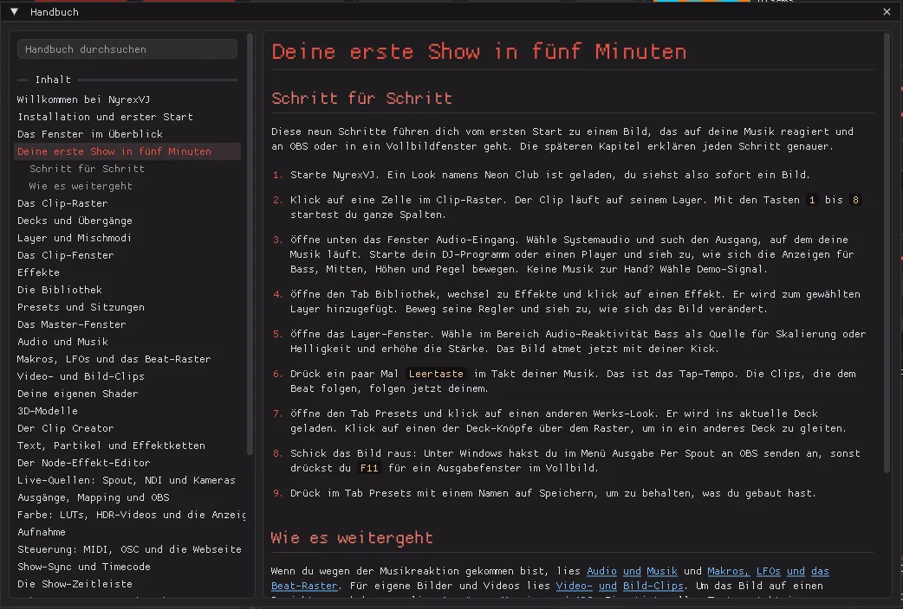
#Schreibweisen in diesem Handbuch
Menüpfade stehen als Menü, Eintrag, zum Beispiel heißt Einstellungen, Audio die Seite Audio im Einstellungsfenster. Schaltflächen, Regler und Tabs stehen so, wie sie auf dem Bildschirm erscheinen. Tasten stehen in Code-Schrift, zum Beispiel Strg+Umschalt+R. Ein Wert in Code-Schrift ist etwas, das du eintippst, oder ein Dateiname.
Die Hinweise in diesem Handbuch gibt es in drei Arten. Ein Tipp erleichtert die Arbeit, ein Hinweis ergänzt ein Detail, und eine Warnung sagt dir, was dich eine Show kosten kann.
2. Installation und erster Start
#Windows
Lade NyrexVJ.exe von der Releases-Seite des Projekts auf GitHub herunter. Es ist eine einzelne Datei und braucht keinen Installer: Leg sie in einen beliebigen Ordner und starte sie. Windows SmartScreen warnt eventuell, weil das Programm nicht signiert ist. Wähle Weitere Informationen und dann Trotzdem ausführen.
Das Release enthält außerdem NyrexVJ-windows-x64.zip mit dem Programm, den Changelogs und den Readmes sowie SHA256SUMS.txt. Vergleiche die Prüfsumme deines Downloads mit der Zeile in dieser Datei, wenn du sicher sein willst, dass die Datei vollständig und unverändert ist.
#Linux
Lade NyrexVJ-linux-x64 herunter und mach die Datei mit chmod +x NyrexVJ-linux-x64 ausführbar, oder nimm NyrexVJ-linux-x64.tar.gz, das das Programm mit den Lizenzen, den Changelogs und einer Liste seiner Bibliotheken enthält. Du brauchst glibc 2.35 oder neuer (Ubuntu 22.04 oder neuer, Debian 12 oder neuer, Fedora oder Arch), eine X11- oder XWayland-Sitzung und einen Grafiktreiber mit OpenGL 3.3.
Audioaufnahme läuft über PulseAudio oder PipeWire, MIDI über ALSA, und Videoclips brauchen die FFmpeg-Bibliotheken. Zum Starten des Programms selbst muss nichts installiert werden.
#Der erste Start
Beim ersten Start zeigt NyrexVJ das Willkommensfenster mit einem kurzen Schnellstart und der Liste dessen, was neu ist. Dort kannst du die Sprache ändern. Nach jedem Update erscheint das Willkommensfenster wieder mit den Änderungen der neuen Version. Später öffnest du es über Hilfe, Was ist neu.
NyrexVJ legt beim ersten Start seinen Datenordner an. Darin liegen deine Einstellungen, Presets, deine eigenen Shader und Modelle, Aufnahmen und das Log. Dateien und der Datenordner listet alles auf.
Wurde das Programm nicht sauber beendet, lädt der nächste Start die alte Sitzung nicht von selbst. Er fragt, von welchem Autosave du weitermachen willst, bietet eine ungespeicherte Creator-Szene an und zeigt einen Absturzbericht mit dem Ende des Logs, den du einem Fehlerbericht anhängen kannst.
#Updates
NyrexVJ prüft beim Start GitHub. Gibt es eine neuere Version, wird sie im Hintergrund geladen und vorbereitet, und oben rechts erscheint eine Karte mit Jetzt neu starten und Später. Später verkleinert die Karte zu einem kleinen Abzeichen, das bis zum Neustart bleibt. Der Download wird nur installiert, wenn seine SHA-256-Summe zu der veröffentlichten passt.
Unter Einstellungen, Updates wählst du den Kanal. Neuester Build folgt jedem Commit auf dem Hauptzweig und Stabile Releases folgt den veröffentlichten Releases. Du kannst auch den automatischen Download abschalten, dann bietet die Karte eine Schaltfläche zum Installieren an. Nach Updates suchen im Hilfe-Menü startet sofort eine Prüfung.
3. Das Fenster im Überblick
#Die Menüleiste
Dieses Kapitel benennt jeden Teil des Hauptfensters, damit sich der Rest des Handbuchs darauf beziehen kann. Die Menüleiste oben hat diese Menüs:
| Menü | Was drin ist |
|---|---|
| Datei | Neue leere Komposition, Als Preset speichern, Resolume-Komposition importieren (ResoPort)..., Datenordner öffnen, Beenden |
| Bearbeiten | Rückgängig und Wiederherstellen |
| Ansicht | Arbeitsbereiche, Fensteranordnung zurücksetzen, Oberflächengröße, Hoher Kontrast, Tastaturbedienung, Statusleiste zeigen |
| Ausgabe | Ausgabefenster öffnen oder schließen, Vollbild, Ausgänge und Mapping, Aufnahme starten oder beenden, Aufnahme-Einstellungen, Per Spout an OBS senden, Über NDI senden, Video-Routing |
| Audio | Audioquelle wählen: Aus, Demo-Signal, Systemaudio, Eingang, und Geräte aktualisieren |
| Zeitleiste | Zeitleiste ausführen, Fenster der Show-Zeitleiste anzeigen, Zeitleiste platzieren (unten andocken, rechts andocken, als frei schwebendes Fenster), Abspielen, Pause, Stopp, Handeingriffe freigeben |
| Einstellungen | Öffnet das Einstellungsfenster |
| Creator | Clip Creator öffnen, Neue 3D-Szene, Vorlagen, der Node-Effekt-Editor, Text und Partikel, Effektketten, Shader-Editor |
| Hilfe | Handbuch, Was ist neu, Links, Sprache, Nach Updates suchen |

#Die Transportleiste
Die zwei Zeilen direkt unter dem Clip-Raster enthalten, was du in jedem Moment brauchst. Die erste Zeile hat die Decks als Reiter mit ihren Namen, das gewählte Deck in der hellen Tönung des Themas, einen Plus-Knopf, der das nächste freie Deck anlegt, und Zurück und Weiter. Ein leeres Deck hat keinen Reiter. Die zweite Zeile hat das BPM-Feld mit Minus, Plus, /2 und x2, Tap und Neu sync, dann Abspielen, Pause und Stopp und die Beat-Anzeige. Abspielen lässt die Tempo-Clock und alle Clip-Bewegung laufen, Pause friert sie ein, und Stopp hält an und beginnt die Beat-Zählung wieder bei 1. Die Beat-Anzeige zeigt den Beat im Takt, einen Strich für jeden Beat des Takts und die Position innerhalb des Beats als Phase. Eine dünne Linie am unteren Rand des Deck-Fensters zeigt, wie weit ein Deck-Übergang ist. Passen die Reiter nicht in die Breite des Fensters, werden sie zu einem Knopf, der das aktive Deck zeigt und die Liste aller 16 Decks öffnet, und in einem sehr schmalen Fenster machen die Knöpfe /2 und x2, Neu sync und die Beat-Anzeige Platz für Abspielen, Pause und Stopp.

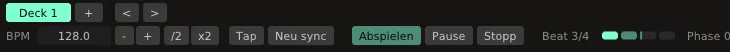
#Das Deck-Fenster
Das große Fenster oben quer ist das Deck-Fenster. Es enthält das Clip-Raster mit 8 Spalten und 4 Layern und direkt unter dem Raster die Deck-Knöpfe und die Transportleiste. Vor jeder Layer-Zeile steht eine Kachel mit dem Bild des Layers und seinem Namen auf einer Leiste am unteren Rand (die Leiste wird mintgrün, wenn der Layer gewählt ist), daneben die Knöpfe X (leert den Layer), B (Bypass) und S (Solo), der Mischmodus und die Deckkraft. Die Kacheln sitzen wie bei Resolume drei Pixel auseinander. Die grauen Bänder in den Fenstern (Audio-Reaktivität, Effekte, Grade und die anderen) klappen mit einem Klick zu und auf, und die Reiter jedes Fensters sind mindestens 72 Punkte breit, der Name steht in der Mitte. Alles, was du live spielst, beginnt hier. Siehe Das Clip-Raster und Decks und Übergänge.
#Vorschau und Ausgabe
In der Reihe unter dem Raster findest du links zwei Fenster mit einem Bild, Ausgabe oben und Vorschau unten. Das Fenster Ausgabe zeigt das fertige Bild genau so, wie es NyrexVJ verlässt, mit Größe, Bildrate und Tempo. Das Fenster Vorschau zeigt eine Zelle, die du dir nur angesehen hast: Strg+Klick auf eine Zelle zeigt sie dort, ohne sie abzuspielen, und Jetzt abspielen spielt sie ab. So bereitest du den nächsten Clip vor, während das Publikum etwas anderes sieht.
#Layer, Clip und Master
Neben den beiden Bildern liegen die Bereiche, die zusammengehören. Master und Layer teilen sich eine Tab-Leiste, Clip und Trigger die nächste. Das Layer-Fenster (in der Oberfläche heißt es Ebene) enthält Deckkraft, Mischmodus, die Audio-Reaktionen und die vier Effekt-Slots des gewählten Layers. Das Clip-Fenster zeigt den Clip der gewählten Zelle und seine Regler. Das Master-Fenster wirkt auf das fertige Bild: Pegel, Blackout, Auflösung, Farbkorrektur, Makros, LFOs und vier Master-Effekte. Sie sind in Layer und Mischmodi, Das Clip-Fenster und Das Master-Fenster beschrieben.
#Das Trigger-Fenster
Das Trigger-Fenster ist der zweite Reiter neben Clip. Unter Clip-Start steht die Quantisierung, die bestimmt, wann ein Start passiert. Unter Übergang stehen Typ, Beat-Sync, Länge und Auto-Wechsel. Unter Beat-Raster stehen Schläge pro Takt, Verschieben, Auf Schlag einrasten und Takt beginnt hier. Läuft eine Audioquelle, steht dort unter Tempo auch BPM mit Audio synchronisieren. Siehe Auf dem Beat starten, Übergänge und Das Beat-Raster.
#Das Audio-Fenster
Das Audio-Fenster ist ein Reiter in der Reiterleiste des Browsers. Es zeigt das Live-Spektrum, die Anzeigen für Bass, Mitten, Höhen und Pegel, die Beat-Erkennung und die Analyse-Einstellungen. Siehe Audio und Musik.
#Der Browser
Der Browser unten rechts hat zwei eigene Tabs. Presets enthält die Werks-Looks und deine eigenen Looks, und Bibliothek enthält alle Clips, Effekte und Dateien, die du nutzen kannst. Siehe Presets und Sitzungen und Die Bibliothek.
#Die Reiter neben dem Browser
Die Reiterleiste der rechten Spalte enthält außer dem Browser und dem Audio-Fenster fünf kleine Fenster, die den Zustand auf einen Blick zeigen. Master-Pegel hat den Pegel-Regler, den Pegel in dB und Blackout. Audio-Eingang hat die Quelle, Geräte aktualisieren und eine Pegelanzeige. Netzwerk hat die Schalter für NDI und Spout und den Zustand des Netzwerk-Syncs, mit einem Knopf zu dessen Einstellungen; MIDI zeigt das Gerät, seinen Zustand und die letzte Nachricht; OSC hat den Schalter zum Empfangen und zeigt seinen Zustand und die letzte Nachricht. Es sind Fenster wie alle anderen, du kannst also einen Reiter herausziehen und hinlegen, wohin du willst, zum Beispiel unter die Bilder. Alle Optionen stehen weiterhin unter Einstellungen.

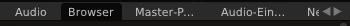
#Die Statusleiste
Die Leiste unten zeigt die Bildrate, die Prozessor- und Grafikzeit, die Ausgabegröße, das Tempo, das aktuelle Deck und den Zustand des Audios. Während einer Aufnahme zeigt sie außerdem REC mit der Zeit und den verworfenen Bildern. Du kannst sie unter Einstellungen, Aussehen ausblenden.
#Fenster verschieben
Alle Fenster lassen sich am Titel ziehen, nebeneinander andocken, als Tabs stapeln oder frei schwebend herausziehen. NyrexVJ merkt sich die Anordnung. Benannte Anordnungen kannst du als Arbeitsbereiche behalten und im Menü Ansicht wechseln. Wenn du ein Fenster verlierst oder die Anordnung durcheinander ist, nutze Ansicht, Fensteranordnung zurücksetzen. Die Zeitleiste öffnest du über Zeitleiste, Fenster der Show-Zeitleiste anzeigen, zuerst als Fenster, das über den anderen schwebt. Zeitleiste, Zeitleiste platzieren dockt sie unten oder rechts am Hauptfenster an oder lässt sie wieder frei schweben. Du kannst sie auch wie jedes andere Fenster am Titel in ein beliebiges Dock ziehen. Die Größe der ganzen Oberfläche, ihr Kontrast und ihre Farben stehen unter Einstellungen, Aussehen; alles ist erklärt unter Oberfläche, Arbeitsbereiche und Barrierefreiheit.
4. Deine erste Show in fünf Minuten
#Schritt für Schritt
Diese neun Schritte führen dich vom ersten Start zu einem Bild, das auf deine Musik reagiert und an OBS oder in ein Vollbildfenster geht. Die späteren Kapitel erklären jeden Schritt genauer.
- Starte NyrexVJ. Ein Look namens Neon Club ist geladen, du siehst also sofort ein Bild.
- Klick auf eine Zelle im Clip-Raster. Der Clip läuft auf seinem Layer. Mit den Tasten
1bis8startest du ganze Spalten. - Öffne unten das Fenster Audio-Eingang. Wähle Systemaudio und such den Ausgang, auf dem deine Musik läuft. Starte dein DJ-Programm oder einen Player und sieh zu, wie sich die Anzeigen für Bass, Mitten, Höhen und Pegel bewegen. Keine Musik zur Hand? Wähle Demo-Signal.
- Öffne den Tab Bibliothek, wechsel zu Effekte und klick auf einen Effekt. Er wird zum gewählten Layer hinzugefügt. Beweg seine Regler und sieh zu, wie sich das Bild verändert.
- Öffne das Layer-Fenster. Wähle im Bereich Audio-Reaktivität Bass als Quelle für Skalierung oder Helligkeit und erhöhe die Stärke. Das Bild atmet jetzt mit deiner Kick.
- Drück ein paar Mal
Leertasteim Takt deiner Musik. Das ist das Tap-Tempo. Die Clips, die dem Beat folgen, folgen jetzt deinem. - Öffne den Tab Presets und klick auf einen anderen Werks-Look. Er wird ins aktuelle Deck geladen. Klick auf einen der Deck-Knöpfe über dem Raster, um in ein anderes Deck zu gleiten.
- Schick das Bild raus: Unter Windows hakst du im Menü Ausgabe Per Spout an OBS senden an, sonst drückst du
F11für ein Ausgabefenster im Vollbild. - Drück im Tab Presets mit einem Namen auf Speichern, um zu behalten, was du gebaut hast.
#Wie es weitergeht
Wenn du wegen der Musikreaktion gekommen bist, lies Audio und Musik und Makros, LFOs und das Beat-Raster. Für eigene Bilder und Videos lies Video- und Bild-Clips. Um das Bild auf einen Projektor zu bekommen, lies Ausgänge, Mapping und OBS. Eine Liste aller Tasten steht in Tastenkürzel und Maus.
5. Das Clip-Raster
#Zellen, Zeilen und Spalten
Jedes Deck hat ein Raster aus 4 Layern mal 8 Spalten. Eine Zelle enthält einen Clip. Ein Klick auf eine Zelle spielt ihren Clip auf ihrem Layer ab, und der Layer spielt ihn weiter, bis du eine andere Zelle desselben Layers abspielst oder den Layer stoppst. Layer 1 ist der unterste Layer und Layer 4 der oberste, höhere Layer werden also über niedrigere gezeichnet.
Eine Spalte ist ein Satz Zellen, eine pro Layer. Ein Klick auf den Spaltenkopf oder die Taste 1 bis 8 spielt alle Zellen dieser Spalte auf einmal ab. So wechselst du einen ganzen Look mit einer Taste: Bau Looks als Spalten.

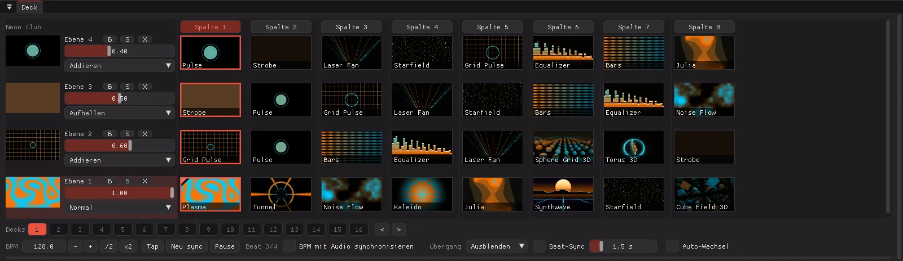
#Das Raster füllen
- Zieh einen Clip aus der Bibliothek auf eine Zelle, oder auf einen Spaltenkopf, um ihn in den gewählten Layer dieser Spalte zu legen.
- Wähl eine Zelle und klick einen Clip in der Bibliothek an. Der Clip kommt in die gewählte Zelle und spielt.
- Klick mit rechts auf eine Zelle und wähle Clip zuweisen, um einen Clip aus einer Liste zu holen.
- Zieh eine Zelle auf eine andere Zelle, um sie zu kopieren.
- Klick mit rechts auf eine Zelle und wähle Zelle leeren, um sie zu leeren.
Eine leere Zelle zeigt einen Hinweis. Zellen zeigen ein kleines Bild ihres Clips. Eine Zelle, die gerade spielt, ist hervorgehoben.
#Abspielen und Vorschau
Ein normaler Klick spielt die Zelle ab. Strg+Klick zeigt sie nur im Fenster Vorschau, und Nur Vorschau, nicht abspielen im Zellmenü macht dasselbe. Damit siehst du dir den nächsten Clip an, bevor das Publikum ihn sieht, und drückst dann Jetzt abspielen.
#Layer-Regler im Raster
Am Anfang jeder Zeile siehst du den Namen des Layers, seinen Deckkraft-Regler, seinen Mischmodus und drei kleine Knöpfe. B schaltet den Layer auf Bypass, er wird dann komplett übersprungen. S schaltet ihn solo, es wird nur dieser Layer gezeigt. X stoppt den Layer und leert, was er spielt. Klick auf den Layer-Namen, um den Layer zu wählen, das Layer-Fenster arbeitet dann an ihm.
#Auf den Takt starten
Das Menü Quantisierung im Trigger-Fenster bestimmt, wann ein Start passiert. Aus startet alles sofort, wie bisher. Beat, Takt, 2 Takte und 4 Takte halten einen Start bis zum nächsten Beat, Takt, zweiten oder vierten Takt der Beat-Uhr zurück, sodass ein Clip oder eine ganze Spalte genau auf dem Raster einsetzt, auch wenn du ein bisschen zu früh oder zu spät drückst.
Es gilt für jeden Weg, etwas zu starten: Klick auf eine Zelle oder einen Spaltenkopf, die Tasten 1 bis 8, einen Deck-Knopf, MIDI, OSC, die Weboberfläche, Cues und die Zeitleiste. Jetzt abspielen im Vorschaufenster, einen Clip aus der Bibliothek in eine Zelle legen und der Start von der Befehlszeile bleiben sofort, weil du dort den Clip ausdrücklich jetzt wolltest. Ein kleiner Zähler neben dem Menü zeigt, wie viele Starts warten. Startest du denselben Layer oder dieselbe Spalte vor dem Beat zweimal, zählt nur der letzte.
Geht die Beat-Uhr verloren oder ist die Show pausiert, wartet nichts auf einen Beat, der nicht kommt: Starts passieren sofort, und die Uhr rastet von selbst wieder ein, wenn der Beat zurückkehrt. Höchstens 32 Starts können warten, der 33. startet sofort. Die Einstellung wird mit deinen anderen Einstellungen gespeichert.
6. Decks und Übergänge
#Sechzehn Decks
Die Reihe mit 16 Knöpfen über dem Clip-Raster wechselt die Decks. Jedes Deck ist ein vollständiger Satz: vier Layer, acht Spalten, Effekte, Farben. Das Deck, auf dem du bist, ist orange, leere Decks sind abgedunkelt und starten leer, wenn du sie anklickst. Ein neues Deck übernimmt mit einem Übergang statt mit einem harten Schnitt.
#Übergänge
| Übergang | Aussehen |
|---|---|
| Fade | Weiche Überblendung |
| Dissolve | Körniges Durchbrennen mit leuchtender Kante |
| Zoom | Zieht durch das alte Bild ins neue |
| Wipe | Weiche diagonale Wischblende |
| Radial | Ein Kreis, der sich von der Mitte aus öffnet |
| Spin | Beide Bilder drehen sich ineinander |
| Slide | Das neue Deck schiebt sich von der Seite herein |
| Pixelate (Pixel) | Das Bild zerfällt beim Wechsel in grobe Blöcke und setzt sich wieder zusammen |
| Glitch | Zerrissene Streifen mit Farbversatz, einige zeigen schon das neue Deck |
| Blinds (Jalousie) | Senkrechte Streifen, die sich wie eine Jalousie öffnen |
| Ripple (Wellen) | Eine Welle läuft von der Mitte nach außen und trägt das neue Bild herein |
| Flash (Blitz) | Ein weißer Blitz deckt den Schnitt |
| Blur (Weichzeichner) | Das alte Bild verwischt, das neue wird scharf |
| Checker (Schachbrett) | Ein Raster aus Kacheln kippt in einer diagonalen Welle vom alten ins neue Bild |
| Frost | Das Bild friert zu und taut ins neue auf |
Wähl den Übergang und seine Länge im Trigger-Fenster. Stell die Länge in Sekunden ein, oder hak Beat-Sync an, um in Beats zu zählen, damit der Wechsel dem Tempo folgt. Wenn du mitten in einem Übergang noch einmal wechselst, friert NyrexVJ das Bild ein, das du gerade siehst, und blendet von dort aus über, es gibt also nie einen Sprung.
#Eigene Übergänge
Eine Shader-Datei mit der Zeile #pragma nyrexvj transition ist ein eigener Übergang, ebenso eine ISF-Datei mit den Eingängen startImage und endImage. Leg sie in den Shader-Ordner (siehe Eigene Shader), dann erscheint sie in der Übergangsliste, in der Transportleiste und im Trigger-Fenster, unter Deine Übergänge. Wähl sie wie einen eingebauten. Die 15 eingebauten Übergänge bleiben genau, wie sie waren.
In der Datei ist colFrom(vUv) das Bild des ausgehenden Decks, colTo(vUv) das Bild des eingehenden Decks und uProgress läuft von 0 bis 1, solange der Übergang geht. Die param-Zeilen der Datei werden zu Reglern unter Shader-Regler im Trigger-Fenster, ihre Werte werden mit den Deck-Einstellungen gespeichert. Das Trigger-Fenster zeigt die Regler und die Vorschau.

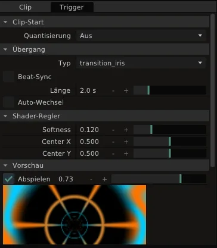
Unter den Reglern stehen eine Vorschau mit einem Fortschritts-Regler (sie zeigt zwei Beispielbilder, nicht deine Show), der Knopf Beispiel-Übergang erstellen, der eine kleine funktionierende Datei in den Shader-Ordner schreibt, und Im Shader-Editor bearbeiten.
Ist die Datei gelöscht, hat einen Fehler oder lässt sich nicht kompilieren, benutzt der Deck-Wechsel den eingebauten Übergang, der daneben gewählt ist, das Trigger-Fenster sagt in Rot, warum, und die Show läuft weiter. Du reparierst die Datei, und der nächste Wechsel benutzt sie. Was die Datei benutzen kann und was nicht, steht im Dokument docs/SHADERS.md des Projekts, im Abschnitt Your own transitions.
#Auto-Wechsel
Hak Auto-Wechsel an und wähl eine Anzahl Beats von 4 bis 128. NyrexVJ geht dann von selbst durch die benutzten Decks und wechselt in diesem Abstand. Das ist gut für die ruhige Stunde einer Party, wenn du die Regler jemand anderem überlassen willst.
#Mit Decks arbeiten
Klick mit rechts auf einen Deck-Knopf. Du kannst das Deck umbenennen, das aktuelle Deck hineinkopieren, es mit einem Werks-Look füllen, leeren oder entfernen. Im Tab Presets lädt ein Klick auf einen Werks-Look ihn ins aktuelle Deck, und die Schaltfläche Decks mit Werks-Looks füllen legt 16 Looks auf einen Schlag in die 16 Decks. Bild auf und Bild ab springen zum vorherigen und nächsten benutzten Deck, und Strg+1 bis Strg+8 sowie Strg+Umschalt+1 bis Strg+Umschalt+8 springen zu den Decks 1 bis 16.
Decks werden mit einem Preset und mit der Sitzung gespeichert. Presets und Sitzungen erklärt, was genau abgelegt wird.
7. Layer und Mischmodi
#Der Layer-Stapel
Ein Deck hat vier Layer. NyrexVJ zeichnet Layer 1 zuerst und jeden höheren Layer darüber. Jeder Layer hat seinen eigenen Clip, Deckkraft, Mischmodus, Geschwindigkeit, Skalierung, Farben, Farbkorrektur, Audio-Reaktionen und vier Effekt-Slots. Die Effekte eines Layers verändern nur diesen Layer, die Master-Effekte verändern alles.
Klick auf den Layer-Namen im Raster oder auf eine der Zahlen oben im Layer-Fenster, um einen Layer zu wählen. Die Fenster Layer, Clip und Master zeigen dann seine Einstellungen.
#Deckkraft und Mischmodus
Deckkraft blendet den Layer von unsichtbar bis voll sichtbar ein. Ein Layer mit Deckkraft null wird gar nicht gezeichnet, ein verborgener Layer kostet also nichts. Der Mischmodus bestimmt, wie sich der Layer mit dem Bild darunter mischt. Das sind die 14 Modi:
| Modus | Was er macht |
|---|---|
| Normal | Der Layer deckt das Bild darunter ab, entsprechend seiner Deckkraft |
| Add | Addiert das Licht beider, ein Leuchten, das nie dunkler wird |
| Screen | Hellt auf wie zwei Projektoren auf derselben Leinwand |
| Multiply | Dunkelt ab, Schwarz bleibt Schwarz, Weiß ändert nichts |
| Subtract | Zieht die Helligkeit des Layers vom Bild darunter ab |
| Difference | Zeigt, wie stark sich die beiden Bilder unterscheiden, gut für Konturen |
| Exclusion | Eine weichere Difference mit weniger Kontrast |
| Overlay | Verstärkt den Kontrast des Bildes darunter, der Layer dient als Muster |
| Soft Light | Eine sanfte Version von Overlay |
| Hard Light | Eine kräftige Version von Overlay |
| Lighten | Behält an jeder Stelle das hellere von beiden |
| Darken | Behält an jeder Stelle das dunklere von beiden |
| Color Dodge | Hellt das Bild darunter stark auf, wo der Layer hell ist |
| Linear Burn | Dunkelt das Bild darunter stark ab, wo der Layer dunkel ist |
#Bypass, Solo und Stopp
Bypass überspringt einen Layer, als wäre er nicht da, samt allen Effekten. Solo zeigt nur den Layer mit Solo. Stopp nimmt den laufenden Clip vom Layer. Alle drei findest du in der Zeile des Rasters und im Layer-Fenster, und auch per OSC und MIDI.
#Auf Musik reagieren
Das Layer-Fenster hat unter Audio-Reaktivität zwei Modulations-Slots. Ein Slot nimmt eine Quelle (ein Frequenzband der Musik, ein Makro, einen LFO, den Beat), ein Ziel (Deckkraft, Skalierung, Geschwindigkeit, Farbton, Helligkeit oder Sättigung) und eine Stärke. Audio und Musik und Makros, LFOs und das Beat-Raster erklären die Quellen.
8. Das Clip-Fenster
#Der gewählte Clip
Das Clip-Fenster zeigt den Clip der gewählten Zelle. Ist die Zelle leer, aber der Layer spielt etwas, zeigt es, was der Layer spielt. Oben siehst du ein Bild des Clips, seinen Namen und seine Art: Video, Bild, Shader-Datei, 3D-Modell, 3D-Szene, Spout-Eingang, NDI-Eingang, Kamera oder Plugin-Quelle. Ist kein Clip gewählt, bittet dich das Fenster, einen im Deck zu wählen oder einen Clip in der Bibliothek anzuklicken.

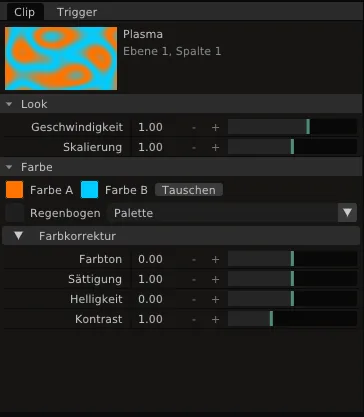
#Look und Farbe
Der Bereich Look hat Geschwindigkeit und Skalierung. Geschwindigkeit reicht vom 0,1- bis zum 4-Fachen und ändert, wie schnell sich der Clip bewegt, Skalierung zoomt den Clip vom 0,25- bis zum 4-Fachen. Beide gehören zum Layer, sie bleiben also erhalten, wenn du den Clip auf diesem Layer wechselst.
Der Bereich Farbe hat zwei Farben, A und B, eine Schaltfläche Tauschen, einen Schalter Regenbogen und eine Palette-Liste. Generative Clips nutzen diese beiden Farben, ein Klick auf eine Palette färbt also einen ganzen Look um. Unter Farbkorrektur findest du Farbton, Sättigung, Helligkeit und Kontrast für den Layer, daneben Farbkorrektur zurücksetzen.
#Regler besonderer Clips
Manche Clips bringen eigene Regler ins Clip-Fenster mit.
- Videoclips zeigen die Wiedergabe-Regler aus Video- und Bild-Clips.
- Shader-Dateien zeigen ihre Fehlermeldungen und ihre eigenen Regler, siehe Deine eigenen Shader.
- 3D-Modelle und -Szenen zeigen ihren Ladezustand und Angaben zum Modell, siehe 3D-Modelle.
- Spout-, NDI- und Kamera-Clips zeigen die Quellenwahl und den Verbindungszustand, siehe Live-Quellen: Spout, NDI und Kameras.
- Plugin-Quellen zeigen die Parameter des Plugins, siehe Plugins.
9. Effekte
#Effekt-Slots
Jeder Layer hat vier Effekt-Slots, und der Master auch. Die Effekte laufen von Slot 1 bis Slot 4, die Reihenfolge ist also wichtig: Ein Blur vor einer Farbänderung sieht anders aus als eine Farbänderung vor einem Blur. Die Effekte eines Layers verändern nur diesen Layer, die Effekte des Masters verändern das fertige Bild.
Jeder Slot ist wie bei Resolume ein farbiges Band mit einem kleinen Dreieck, der Liste zur Wahl des Effekts (tipp in die Liste, um zu suchen), dem Knopf B und dem Knopf X. Das Dreieck klappt den Slot zu und auf, B überbrückt den Effekt (der Knopf leuchtet und die Regler werden grau) und X leert den Slot. Unter dem Band stehen bis zu vier Regler und eine Zeile für die Musikreaktion. Bei eingeschaltetem hohen Kontrast tritt das alte Häkchen an die Stelle von B und X. Ein Regler, den du bewegt hast, geht mit Rechtsklick auf seinen Standardwert zurück. Effekte, die dreidimensional zeichnen, tragen in der Liste die Markierung [3D].
#Effekte hinzufügen
- Öffne die Bibliothek, wechsel zu Effekte und klick einen Effekt an: Er kommt in den ersten freien Slot des gewählten Layers. Sind alle vier Slots belegt, sagt dir NyrexVJ das.
- Zieh einen Effekt aus der Bibliothek auf einen Slot, um ihn genau dort abzulegen.
- Klick mit rechts auf einen Effekt in der Bibliothek, um ihn zu einem gewählten Layer oder zum Master hinzuzufügen.
- Wähl einen Effekt aus der Liste im Slot selbst.

#Auf die Musik reagieren
Unter den Reglern eines Slots findest du eine Band-Liste, einen Modus und ein Ziel. Wähl Bass, Mitten, Höhen, Pegel oder Kick (oder ein Makro, einen LFO, Beat oder Bar) als Band. Dann bestimmst du, wie es wirkt:
- Parameter bewegt einen Wert des Effekts, den du als Ziel wählst, um die eingestellte Stärke.
- Gate zeigt den Effekt nur, solange das Band laut ist, und blendet ihn in der Stille aus. Der eingestellte Wert bestimmt, wie empfindlich das Gate ist.
Mit Gate baust du schnell ein Stroboskop oder einen Glitch, der nur auf den Beat trifft.
#Glas-Effekte
Zwei Effekte lassen das Bild aussehen, als sähe man es durch Glas. Prism Glass bricht das Bild in Prismenfacetten: Facetten bestimmt, wie viele es sind, Brechung, wie weit jede Facette das Bild ablenkt, Streuung, wie stark sich die Farben an der Kante trennen, und Glanz, wie hell die Kanten sind und wie stark sie im Beat aufblitzen. Frosted Glass verwischt das Bild wie Milchglas: Frost bestimmt die Unschärfe, Körnung fügt feine Körnung hinzu, Milchigkeit hellt das Bild auf und verschleiert es, und Beat-Puls lässt die Unschärfe mit jedem Beat anschwellen. Beide haben vier Regler von 0 bis 1 und stehen in der Bibliothek unter Effekte.
#Rückkopplungs-Effekte
Ein Rückkopplungs-Effekt merkt sich das Bild, das er einen Moment vorher gemacht hat, und mischt es in das nächste. So entstehen Schweife, Echos und Tunnel. Trails und Hue Feedback arbeiten schon immer so. Vier weitere Effekte sind neu, alle in der Bibliothek unter Effekte, alle mit vier Reglern von 0 bis 1:
- Time Echo lässt von allem, was sich bewegt hat, eine verblassende Kopie zurück. Halbwertszeit ist die Zeit, in der die Kopie auf die Hälfte verblasst (von 0,04 bis 3 Sekunden), Abstand und Winkel schieben die Kopie von ihrem Platz weg, und Weichheit verwischt sie ein wenig.
- Motion Smear mischt das Bild langsam zum neuen hin, sodass schnelle Bewegung verschmiert. Verschmieren ist die Halbwertszeit (0,01 bis 1,2 Sekunden), Schieben und Winkel bewegen das alte Bild zur Seite, und Detail lässt mehr vom scharfen Bild durch.
- Feedback Transform macht einen Tunnel. Halbwertszeit geht von 0,05 bis 4 Sekunden, Zoom lässt die Schweife über der Mitte wachsen und darunter schrumpfen, Drehen dreht sie, und Drift schiebt sie in eine Richtung, die sich langsam dreht. Ein Kick gibt einen kleinen Zoom dazu.
- Accumulate sammelt Licht über die Zeit. Belichtung ist das Zeitfenster (0,1 bis 10 Sekunden), Modus wählt die Art (das untere Drittel mittelt, das mittlere hält das Hellste, das obere belichtet: es baut sich wie eine lange Belichtung auf und kann Weiß erreichen), Verstärkung macht das Bild heller, bevor es gesammelt wird, und Kick-Leeren lässt einen Kick das Gesammelte wegwischen.
Die Halbwertszeiten sind echte Sekunden. Sie werden aus der Zeit zwischen zwei Bildern gerechnet, ein Schweif hält also bei 30, 60 oder 144 Bildern pro Sekunde gleich lang und bleibt stehen, solange die Show pausiert. Die alten Effekte Trails und Hue Feedback sind nicht verändert. Weil die Rückkopplungsbilder 8 Bit Farbe halten, kann ein langsames Trails ein paar Stufen über Schwarz stehen bleiben und ein schwaches Grau hinterlassen; die neuen Effekte runden zufällig, damit sie ganz bis Schwarz verblassen.
Einfrieren und Zurücksetzen. Hat eine Ebene oder der Master einen Rückkopplungs-Effekt, zeigt das Effektfeld Rückkopplung einfrieren und Rückkopplung zurücksetzen. Einfrieren hält jedes Rückkopplungsbild, wo es ist, während das Live-Bild weiter darübergezeichnet wird. Zurücksetzen löscht sie sofort. Einfrieren wird nicht mit der Show gespeichert und ist nach einem Neustart aus. Beides lässt sich auf MIDI und OSC legen (die Steuerungen Rückkopplung einfrieren und Rückkopplung zurücksetzen unter Master, IDs master/feedback-freeze und master/feedback-reset) und erscheint in der Weboberfläche. Einfrieren hält die Puffer von Shader-Clips und Shader-Filtern nicht fest; Zurücksetzen löscht auch diese.
Speicher. Jeder Rückkopplungs-Effekt hält ein Bild in der Größe seiner Ebene. Unter Einstellungen, Leistung, Rückkopplung siehst du, wie viele Puffer in Benutzung sind und wie viel Speicher sie brauchen. Das Rückkopplungs-Budget (zu Beginn 256 MB, 0 schaltet es ab, mindestens 64 MB) ist das Meiste, das sie zusammen verbrauchen dürfen. Ist es aufgebraucht, wird ein neuer Puffer kleiner angelegt (drei Viertel, die Hälfte, bis zu einem Viertel des Bildes) und der Effekt funktioniert weiter; passt selbst das nicht, zeigt der Effekt das Live-Bild ohne Schweife, bis wieder Speicher frei ist, und die Seite sagt, wie viele Puffer abgelehnt wurden. Eine Änderung des Budgets löscht die Rückkopplungsbilder einmal. Rückkopplungs-Puffer wiederverwenden hält einen freigegebenen Puffer ein paar Sekunden vor, damit das Aus- und Einschalten eines Effekts nicht jedes Mal neuen Speicher bei der Grafikkarte anfordert.
#Eigene Effekte
Neben den eingebauten Effekten gibt es Effekte, die du selbst baust oder installierst: Node-Effekte aus dem Node-Editor (angezeigt als Node: Name) und ISF-Filter aus deinem Shader-Ordner (angezeigt als ISF: Name). Sie funktionieren in den Slots wie jeder andere Effekt. Siehe Der Node-Effekt-Editor und Deine eigenen Shader. Um vier Effekte zusammenzuhalten, speichere sie als Kette, siehe Effektketten.
10. Die Bibliothek
#Clips, Effekte und Dateien
Der Tab Bibliothek im Browser hat drei Ansichten. Clips listet alles auf, was du in eine Zelle legen kannst, Effekte listet alles auf, was du in einen Effekt-Slot legen kannst, und Dateien zeigt die Dateien, die deine eigenen Szenen nutzen können. Das Suchfeld oben findet Einträge über ihren Namen.

#Clips filtern
In der Ansicht Clips grenzt eine Reihe von Filtern die Liste ein: Alle, 2D, 3D, Modelle, Szenen, Spout, Medien, Shader, Generatoren und Live. Clips, die in der aktuellen Version neu dazugekommen sind, tragen eine kleine Markierung, die mit der nächsten Nebenversion verschwindet.
| Filter | Was er zeigt |
|---|---|
| 2D | Jeden Clip, der kein 3D-Clip ist, also generative Clips, Bilder, Videos und Shader |
| 3D | Clips mit echtem 3D-Inhalt, etwa die eingebauten Meshes, Modelle und Szenen |
| Modelle | Deine eigenen .glb- und .gltf-Dateien |
| Szenen | Szenen, die du mit dem Clip Creator gemacht hast |
| Spout | Die vier Spout-Eingangs-Clips |
| Medien | Deine Bilder und Videos |
| Shader | Deine eigenen Shader-Dateien und ISF-Generatoren |
| Generatoren | Text-Clips und Partikel-Clips, auch die eingebauten Partikel-Clips |
| Live | NDI-Eingangs- und Kamera-Clips |
| Favoriten | Die Clips, die du mit einem Stern markiert hast, aus allen oben genannten |
#Einen Clip benutzen
Ein Klick auf einen Clip legt ihn in die gewählte Zelle und spielt ihn ab. Du kannst ihn auch auf eine beliebige Zelle ziehen oder auf einen Spaltenkopf, um ihn in den gewählten Layer dieser Spalte zu legen. Ein Rechtsklick bietet In die gewählte Zelle legen, In die nächste freie Zelle eines Layers legen und bei Szenen Im Clip Creator bearbeiten.
#Favoriten und Tags
Klick mit rechts auf einen Clip und wähl Zu Favoriten hinzufügen. Favoriten zeigen eine kleine Raute in der Liste und stehen alle im Filter Favoriten. Tags bearbeiten öffnet ein kleines Fenster, in dem du ein Wort tippst und mit Enter als Tag hinzufügst, zum Beispiel intro oder rot. Ein Clip kann 8 Tags mit bis zu 24 Zeichen haben, und das Fenster listet die Tags auf, die deine Bibliothek schon benutzt, damit du einen anklicken kannst, statt ihn noch einmal zu tippen.
Das Suchfeld versteht Tags: Ein Wort findet Clips nach Name und nach Tag, tag:rot findet nur Clips mit diesem Tag, und is:fav findet nur Favoriten. Du kannst sie verbinden, zum Beispiel is:fav tag:intro.
Favoriten und Tags stehen in library_meta.json im Datenordner, neben deinen eigenen Dateien, und nicht in Presets. Sie gehören zum Namen des Clips. Benennst du eine Datei um, beginnt der neue Name ohne Stern und ohne Tags. Eine Datei, die sich nicht lesen lässt, bleibt als library_meta.json.damaged erhalten, und du beginnst mit einer leeren Liste.
#Einen Clip überall ersetzen
Tauschst du ein Video gegen eine bessere Fassung, musst du nicht jede Zelle anfassen. Klick mit rechts auf den Clip in der Bibliothek, wähl Diesen Clip überall ersetzen und such den neuen Clip aus. Jede Zelle in jedem Deck, die den alten Clip spielt, spielt dann den neuen. Layer-, Effekt- und Mischeinstellungen bleiben.
Hak Wiedergabe-Einstellungen der Zellen behalten an, wenn Tempo, Schleife und Start jeder Zelle so bleiben sollen, wie sie sind. Die Meldung danach sagt, wie viele Zellen geändert wurden. Rückgängig (Strg+Z) nimmt den ganzen Austausch in einem Schritt zurück.
#Dateien und Ordner
Unten in der Bibliothek steht, wohin deine eigenen Dateien gehören, mit einer Schaltfläche für jeden Ordner: Modelle, Medien und Shader. Leg die Dateien dort ab und drück Neu einlesen, oder zieh sie einfach auf das NyrexVJ-Fenster. Beispiel-Shader erstellen schreibt einen kleinen Shader, den du in jedem Texteditor öffnen kannst. Die Ansicht Dateien listet die Modelle und Texturen auf, die deine Szenen nutzen können, und die Szenen, die du gespeichert hast. Dateien und der Datenordner zeigt, wo diese Ordner auf deinem Computer liegen.
11. Presets und Sitzungen
#Werks-Looks
Der Tab Presets beginnt mit den Werks-Looks. Ein Klick lädt den Look ins aktuelle Deck, mit Rechtsklick lädst du ihn in ein anderes Deck. Es gibt 18: Neon Club, Milky Red, Crystal Cavern, Crystal Lines, Acid Rainbow, Deep Space, Synthwave Night, Laser Show, Minimal Mono, 3D Showcase, Warp Tunnel, Audio Reactor, Fractal Dream, Cyber Rain, Inferno, 3D Worlds, Crystal Cube und Pop Art.
Die Schaltfläche Decks mit Werks-Looks füllen legt 16 Looks in die 16 Decks, ein schneller Weg, für jede Stimmung etwas bereit zu haben.

#Eigene Presets
Gib unter Aktuellen Look speichern einen Namen ein und drück Speichern. Ein gespeichertes Preset enthält alle 16 Decks mit ihren Layern, Clips, Effekten, Farben, den Master, Makros und LFOs und die Tempo-Einstellungen. Die Liste Meine Presets zeigt, was du gespeichert hast. Ein Klick lädt ein Preset, und ein Rechtsklick bietet Mit aktuellem Look überschreiben und Löschen.
Datei, Als Preset speichern macht dasselbe aus dem Menü. Presets sind kleine Dateien im Ordner presets, du kannst sie also auf einen anderen Computer kopieren.
#Die Sitzung
Neben Presets führt NyrexVJ eine Sitzung: den Zustand des Programms, wie du ihn verlassen hast. Beim nächsten Start öffnet es sich genau so, außer du schaltest Letzte Sitzung beim Start wiederherstellen unter Einstellungen, Allgemein aus. Die Sitzung wird alle 30 Sekunden gespeichert, wenn sich etwas geändert hat, und eine rotierende Reihe der letzten zehn Autosaves liegt im Ordner recovery.
#Show-Pakete
Ein Show-Paket ist eine einzelne Datei, in der deine aktuelle Show und alle Dateien stecken, die sie nutzt, damit du sie auf einem USB-Stick zu einem anderen Computer mitnehmen kannst. Sie endet auf .nyxshow. Nutze sie, wenn du in einer Location spielst, auf einen neuen Computer umziehst oder ein Freund dieselbe Show öffnen soll. Presets und Sitzungen merken sich Clips nur über ihren Namen, ein Paket bringt die Clips selbst mit.
Ein Paket erstellen. Datei, Show-Paket exportieren öffnet das Fenster Show-Paket im Tab Exportieren.
- Gib der Show einen Namen und, wenn du magst, Hinweise für alle, die das Paket öffnen.
- Wähle, wohin gespeichert wird. Die Schaltfläche Ort vorschlagen trägt eine Datei im Ordner shows des Datenordners ein. Die Endung
.nyxshowwird ergänzt, falls sie fehlt. - Öffne Presets, die mitgepackt werden und Venue-Setups, die mitgepackt werden und hake an, was mit der Show reisen soll. Cue-Liste mitpacken und Zeitleiste mitpacken nehmen diese beiden Dateien dazu.
- Drück Prüfen, was hineinkommt. NyrexVJ geht die Show durch, findet jeden Clip und Effekt, den sie nutzt, und listet die Dateien auf: die Art, die Größe, was die Datei braucht und ein Feld für einen Hinweis.
- Drück Paket erstellen. Ein Fortschrittsbalken zeigt die Arbeit, und Abbrechen stoppt sie, ohne eine halb geschriebene Datei zu hinterlassen.
Dateien, die fehlen, für ein Paket zu groß sind oder einen unbrauchbaren Namen haben, werden aufgelistet und weggelassen, und du siehst, warum. Nichts wird heimlich ersetzt, und eingebaute Clips und Effekte werden nicht eingepackt, weil jedes NyrexVJ sie hat.
Quelle und Lizenz. NyrexVJ kann nicht wissen, ob du eine Datei weitergeben darfst. Schreib in die letzte Spalte, woher eine Datei stammt oder welche Lizenz sie hat. Der Hinweis wird im Paket gespeichert und beim Import angezeigt, und das Fenster sagt dir, wie viele Mediendateien keinen haben.
Was nie in einem Paket steckt. Plugins kommen nie in ein Paket. Das Paket listet nur ihre Namen, und der andere Computer muss sie selbst installiert haben. So kann das Öffnen eines Pakets nie Code starten, der aus dem Paket kam. Live-Quellen wie Spout, NDI und Kameras werden ebenfalls nur aufgelistet, sie kommen vom anderen Computer.
Ein Paket öffnen. Nimm Datei, Show-Paket importieren oder zieh eine .nyxshow-Datei auf das NyrexVJ-Fenster. Das Fenster öffnet sich im Tab Importieren und prüft das Paket. Es sagt dir Datei für Datei, was passieren würde: wird hinzugefügt, schon da und gleich, du hast eine andere Datei, nicht im Paket oder der Name kann nicht verwendet werden. Geändert wird nichts, bevor du auf Importieren drückst.
Wenn auf deinem Computer schon eine Datei mit gleichem Namen liegt, wählst du, was passiert:
- Meine behalten lässt deine Datei in Ruhe. Das ist die Voreinstellung.
- Beide behalten kopiert die neue Datei unter einem Namen wie
loop (2).mp4und stellt die Show auf diese Datei um. - Meine ersetzen, vorher sichern kopiert deine Datei in den Ordner
show_backupsund ersetzt sie dann.
Zwei weitere Haken, Auch meine Cue-Liste ersetzen und Auch meine Zeitleiste ersetzen, sind standardmäßig aus. Eine ersetzte Cue-Liste oder Zeitleiste gilt nach dem nächsten Start von NyrexVJ.
Ist der Import fertig, siehst du, wie viele Dateien hinzugefügt, umbenannt, ersetzt und behalten wurden. Show öffnen macht sie zur aktuellen Show, und Ordner mit den gesicherten Dateien öffnen zeigt deine alten Dateien, falls du Ersetzen gewählt hast. Geht unterwegs etwas schief, wird alles wieder so hergestellt, wie es war, und das Fenster sagt es dir.
Fehlende Clips. Fehlt ein Clip oder Effekt der Show im Paket und auf deinem Computer, bleibt seine Zelle leer und das Fenster listet ihn auf. NyrexVJ setzt nie einen anderen Clip an seine Stelle. Liegen die Dateien auf einem Laufwerk, das du hast, nimm Fehlende Dateien suchen: Gib einen Ordner an, zum Beispiel das ursprüngliche Medienlaufwerk, und NyrexVJ durchsucht ihn. Nur Dateien, die genau denen entsprechen, die das Paket kannte, sind angehakt. Eine Datei, die nur den gleichen Namen hat, wird angezeigt, aber nicht angehakt und mit dem Hinweis versehen, dass ihr Inhalt nicht geprüft werden kann, du entscheidest also selbst. Mit Markierte Dateien kopieren holst du sie herein.
Sicherheit. Ein Paket besteht nur aus Daten. Jede Datei darin hat eine Prüfsumme, die geprüft wird, bevor etwas an seinen Platz kommt. Dateinamen müssen einfache Namen ohne Ordner sein, und den Ordner bestimmt die Art der Datei, ein Paket kann also nicht außerhalb des Datenordners schreiben. Nur die üblichen Endungen jeder Art werden angenommen, jede Art hat ein Größenlimit, und die Dateien liegen ohne Kompression im Paket, ein kleines Paket kann sich also nicht zu etwas Riesigem entpacken. Ein Paket aus einer neueren NyrexVJ-Version, ein abgeschnittenes oder beschädigtes Paket und ein Paket mit irgendetwas, das nicht zusammenpasst, wird abgelehnt, und auf deinem Computer ändert sich nichts.

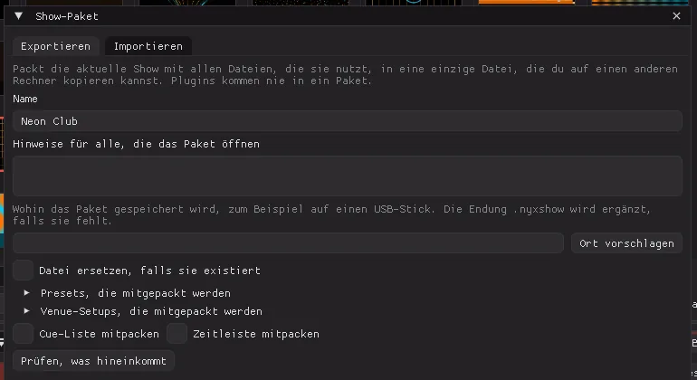
#Community-Pakete
Ein Community-Paket ist eine einzelne Datei, die auf .nyxpack endet. Jemand hat Presets, Shader, Node-Effekte, Masken, Venue-Setups oder ein Plugin gemacht und in diese Datei gepackt, damit du sie in einem Schritt installieren, später aktualisieren und wieder entfernen kannst. Es ist nicht dasselbe wie ein Show-Paket: Ein Show-Paket bringt deine eigene Show auf einen anderen Computer, ein Community-Paket installierst du von jemand anderem.
Ein Paket installieren. Datei, Community-Paket installieren öffnet das Fenster Community-Pakete im Tab Installieren. Du kannst auch eine .nyxpack-Datei auf das NyrexVJ-Fenster ziehen.
- Tipp oder füge den Pfad der Datei ein und drück Paket prüfen.
- Lies den oberen Teil der Seite: Name und Version, das Bild, das der Autor dazugelegt hat, wer es gemacht hat, die Lizenz, für welche NyrexVJ-Versionen es gemacht wurde und den Fingerabdruck der Datei. Wenn der Autor einen Fingerabdruck veröffentlicht hat, vergleiche ihn. Ein anderer Wert heißt: Die Datei ist nicht die, die der Autor gemacht hat.
- Öffne Lizenztext, um die Lizenz zu lesen, die der Autor aufgeschrieben hat.
- Unter Was passieren wird siehst du jede Datei und was damit geschehen würde: wird hinzugefügt, wird aktualisiert, schon installiert und unverändert, du hast diese Datei schon oder eine andere Datei mit demselben Namen. Noch wird nichts geändert.
- Lies die Hinweise über der Tabelle. Rote Hinweise stoppen die Installation und sagen, was zu tun ist. Gelbe Hinweise brauchen deine Zustimmung oder sind gut zu wissen.
- Drück Paket installieren. Ein Fortschrittsbalken zeigt die Arbeit, und Abbrechen stoppt sie.
Was eine Installation stoppen kann. Ein Paket, das für andere NyrexVJ-Versionen gemacht wurde, ein Paket, das ein anderes Paket braucht, das du nicht installiert hast, ein Paket, das eine neuere Version eines anderen Pakets braucht, als du hast, ein Paket, das ein schon installiertes Paket kaputt machen würde, eine Datei, die einem anderen Paket gehört, und ein Ordner, der dort liegt, wo eine Datei hin soll. Jedes davon wird im Fenster in einfachen Worten erklärt, und installiert wird erst, wenn es gelöst ist.
Dateien, die sich unterscheiden. Hast du schon eine Datei mit demselben Namen, aber anderem Inhalt, geht die Installation nicht weiter, bis du dich entscheidest. Meine Dateien behalten, den Rest installieren lässt deine in Ruhe und installiert die Kopie aus dem Paket nicht. Meine Dateien ersetzen, meine werden vorher gesichert verschiebt deine in den Ordner package_backups und legt dann die neue an ihren Platz. Eine Datei, die genau gleich ist, bleibt unberührt.
Ältere Versionen und Updates. Ist schon eine neuere Version des Pakets installiert, sagt das Fenster es und bittet dich, Die ältere Version trotzdem installieren anzuhaken. Installierst du eine neuere Version, ist das ein Update: Die alten Dateien des Pakets, die die neue Version nicht mehr hat, wandern in die Sicherung, und Dateien, die du selbst geändert hast, bleiben, wo sie sind. Geht mittendrin etwas schief, wird alles so zurückgelegt, wie es war, und das Fenster sagt es.
Shader. Ein Shader ist ein kleines Programm, das auf deiner Grafikkarte läuft. Ein fehlerhafter kann das Bild ruckeln oder einfrieren lassen. Das Fenster sagt dir, wie viele Shader-Dateien ein Paket hat. Installiere Shader nur von Autoren, denen du vertraust.
Plugins. Ein Paket kann ein Plugin enthalten. Ein Plugin ist ein Programm, das innerhalb von NyrexVJ mit denselben Rechten wie NyrexVJ läuft, deshalb bittet dich das Fenster, Ich vertraue dem Autor und will dieses Plugin installieren anzuhaken, und geht ohne das nicht weiter. Selbst dann wird das Plugin nur kopiert. Es bleibt ausgeschaltet, bis du es selbst in Einstellungen, Plugins einschaltest, wo die üblichen Schutzregeln gelten: das Zeitbudget, die Absturzmarkierung und der abgesicherte Modus. Ein Paket kann ein Plugin nie einschalten, und ein Plugin, das wegen eines Absturzes gestoppt wurde, bleibt gestoppt. Ein Plugin muss ausgeschaltet sein, bevor du es aktualisierst oder entfernst. --no-plugins schaltet für einen Start weiterhin alle Plugins aus.
Sehen und entfernen, was installiert ist. Der Tab Installiert listet die Pakete mit Version, Autor und Lizenz und den Dateien, die zu jedem gehören. Entfernen... verschiebt die Dateien eines Pakets in den Ordner package_backups, statt sie zu löschen. Eine Datei, die du nach der Installation geändert hast, bleibt. Ein Paket, das ein anderes Paket braucht, lässt sich nicht entfernen. Sicherungsordner öffnen zeigt, was verschoben wurde.
Ein Paket erstellen. Der Tab Erstellen packt einen Ordner. Der Ordner braucht eine pack.json mit Kennung, Name, Version und Lizenz und kann die Ordner presets, shaders, nodes, masks, venues und plugin, eine preview.png und eine LICENSE.txt haben. Die Kennung besteht aus Kleinbuchstaben, Ziffern und -, _ oder ., die Version hat bis zu vier Zahlen wie 1.2. Bei den Abhängigkeiten stehen die Kennungen und die älteste Version anderer Pakete, die das Paket braucht. Trag den Ordner ein und wohin das Paket gespeichert werden soll, hak Datei ersetzen, falls sie existiert an, wenn schon ein Paket mit diesem Namen da ist, und drück Paket erstellen. Probleme im Ordner werden aufgelistet, und geschrieben wird erst, wenn sie behoben sind. Videos, Modelle und Szenenpakete kommen nicht in ein Community-Paket, nimm dafür ein Show-Paket.
{
"id": "neon-starter",
"version": "1.2",
"name": "Neon Starter Pack",
"author": "Dein Name",
"description": "Ein paar Presets und ein Glow-Shader.",
"license": "MIT",
"nyrexvj": { "min": "0.40", "max": "" },
"dependencies": []
}Sicherheit. Ein Paket sind nur Daten. Jede Datei hat eine Prüfsumme, die geprüft wird, bevor etwas an seinen Platz kommt. Dateinamen müssen einfache Namen ohne Ordner sein und der Ordner richtet sich nach der Art der Datei, ein Paket kann also nicht außerhalb des Datenordners schreiben. Dateien werden ohne Kompression gespeichert und jede Art hat eine Größengrenze, ein kleines Paket kann sich also nicht zu etwas Riesigem entpacken. Ein Paket, das abgeschnitten, verändert, zu groß, in einem neueren Format oder im falschen Format ist, wird abgelehnt und auf deinem Computer ändert sich nichts. Pakete sind nicht signiert: Der Fingerabdruck zeigt, dass eine Datei die ist, die jemand veröffentlicht hat, nicht, dass ihr Inhalt sicher ist. Einen Online-Katalog gibt es nicht, du bekommst ein Paket von jemandem und installierst es selbst.

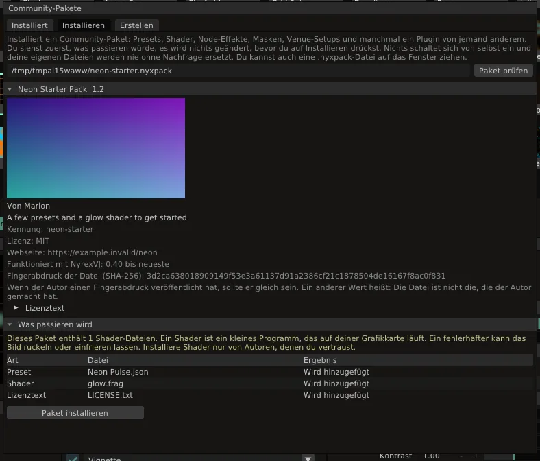
#Import aus Resolume (ResoPort)
ResoPort liest eine Komposition, die Resolume gespeichert hat (eine Datei mit der Endung .avc), und baut daraus eine NyrexVJ-Komposition. Öffne es mit Datei, Resolume-Komposition importieren (ResoPort)... oder zieh eine .avc-Datei auf das NyrexVJ-Fenster.
- Tippe oder füge den Pfad der
.avc-Datei ein. Liegen die Medien der Komposition woanders, gib diesen Ordner im zweiten Feld an. Drücke Datei prüfen. - Lies den Bericht. Er sagt, mit welcher Resolume-Version die Datei gemacht wurde, wie viele Clips importiert werden und was nicht: Medien, die nicht gefunden wurden (die ersten Namen stehen dabei), Dateien, die NyrexVJ nicht abspielen kann, Generator-Clips und Clips aus anderen Quellen, Effekte, Ebenen nach der vierten, Decks nach dem sechzehnten, Clips außerhalb der vier Ebenen und acht Spalten, Blendmodi, die NyrexVJ nicht kennt, und eine Bildgröße, die NyrexVJ nicht hat. Es hat sich noch nichts geändert.
- Drücke Importieren. Die gefundenen Medien werden in die Bibliothek kopiert und die Komposition wird gebaut.
Übernommen wird: Medien-Clips (Videos und Bilder) an derselben Ebene und Spalte, Deckkraft und Blendmodus jeder Ebene, die Namen der Decks, der Name der Komposition, das Tempo (wenn es zwischen 40 und 240 BPM liegt) und die Bildgröße (wenn NyrexVJ dieselbe Größe hat). Nicht übernommen wird: Effekte, Generatoren, Clips aus anderen Quellen und jede andere Resolume-Einstellung; sie werden im Bericht gezählt, damit du weißt, was fehlt. Ein Blendmodus, dessen Namen NyrexVJ nicht kennt, wird zu Normal und im Bericht genannt.
ResoPort sucht jedes Medium neben der .avc-Datei, am Pfad, den Resolume aufgezeichnet hat, und im zusätzlichen Ordner. Ein Medium, das nicht gefunden wird, lässt seine Zelle leer; leg die Medien neben die Datei und prüfe noch einmal. DXV-Filme werden wie jede andere Datei kopiert und dann von der Einstellung DXV-Videos in HAP umwandeln behandelt, die im Kapitel über Video-Clips steht.
#Rückgängig und Wiederherstellen
Bearbeiten, Rückgängig und Wiederherstellen, oder Strg+Z und Strg+Y (auch Strg+Umschalt+Z stellt wieder her), gehen durch deine Änderungen an Reglern, Clips, Effekten und Decks. Einen Clip abspielen, eine Spalte starten und die Makro-Regler bewegen sind Performance-Aktionen und gehören nicht zu Rückgängig. In der Zeitleiste und im Node-Editor wirken dieselben Tasten auf ihren eigenen Verlauf, solange diese Fenster den Fokus haben.
12. Das Master-Fenster
#Pegel und Blackout
Pegel oben ist die Helligkeit des fertigen Bildes von 0 bis 1, ein Master-Fader. Blackout macht das ganze Bild auf einen Schlag schwarz und wieder zurück, auch mit der Taste B. Er ist die Notbremse deiner Show und auch per MIDI und OSC erreichbar.

#Auflösung
Die Liste Auflösung legt die Größe des fertigen Bildes fest: 960 x 540, 1280 x 720, 1920 x 1080 (der Standard) oder 2560 x 1440. Eine kleinere Größe schont die Grafikkarte. Die Ausgabefenster skalieren das Bild auf ihre eigene Größe, die Auflösung hier ist also die Qualität dessen, was gerendert wird.
#Farbkorrektur, Reaktionen und Effekte
Der Bereich Farbkorrektur hat Farbton, Sättigung, Helligkeit und Kontrast für das ganze Bild und Farbkorrektur zurücksetzen. Audio-Reaktivität funktioniert wie die Slots eines Layers. Der Bereich Makros und LFOs enthält die acht Makro-Regler und vier LFOs, siehe Makros, LFOs und das Beat-Raster. Effekte sind die vier Master-Effekt-Slots, siehe Effekte.
13. Audio und Musik
#Eine Quelle wählen
Wähle die Quelle im Fenster Audio-Eingang unten, oder unter Einstellungen, Audio, oder im Menü Audio.
| Quelle | Worauf sie hört |
|---|---|
| Systemaudio | Alles, was dein Computer abspielt, zum Beispiel Rekordbox, Serato, Spotify oder ein Browser. Unter Linux ist das Systemaudio (Standardausgabe) und jede Monitor-Quelle von PulseAudio oder PipeWire |
| Eingang | Ein Mikrofon oder ein Line-In. Unter Linux der Standardeingang und jede andere PulseAudio- oder PipeWire-Quelle |
| Demo-Signal | Ein eingebauter Beat, damit du Looks ohne Musik bauen kannst |
| Aus | Nichts. Clips und Effekte folgen stattdessen dem BPM-Takt |
Das Audio-Fenster ist ein Reiter in der Reiterleiste des Browsers. Es zeigt das Live-Spektrum, die Anzeigen für Bass, Mitten, Höhen und Pegel, die Beat-Erkennung und ein erkanntes Tempo. Liefert das gewählte Gerät einige Sekunden lang keinen Ton, sagen das das Fenster Audio-Eingang und die Statusleiste und schlagen vor, etwas abzuspielen oder eine andere Quelle zu wählen.

#Analyse-Einstellungen
Verstärkung hebt oder senkt den Pegel, den die Analyse sieht, Glättung macht die Bänder ruhiger, und Beat-Schwelle bestimmt, wie leicht ein Beat gefunden wird. Du findest sie im Audio-Fenster und unter Einstellungen, Audio. Wenn die Anzeigen dauernd oben anschlagen, senk die Verstärkung, und wenn in jedem Geräusch ein Beat gefunden wird, senk die Empfindlichkeit.
Erkanntes Tempo zeigt die Schätzung, und Verwenden übernimmt sie als Tempo. BPM mit Audio synchronisieren hält das Tempo dauerhaft am erkannten Beat. Das klappt am besten mit Musik mit klarer Kick. Für eine gleichmäßige Show mit einem DJ ist es oft besser, das Tempo selbst zu tappen oder einer Clock zu folgen, siehe Show-Sync und Timecode.
Auf derselben Seite gibt es einen Abschnitt Beat-Verfolgung mit drei weiteren Dingen. Das Feld Beat-Verfolgung wählt das Verfahren: Klassisch ist der Erkenner, der immer da war, Verbessert ergänzt einen Tracker, der das Tempo aus jedem Schlag der letzten zehn Sekunden findet, sodass eine fehlende Kick ihn nicht aus dem Takt bringt. Er zeigt, ob er eingerastet ist, die Tempo-Sicherheit und die Beat-Sicherheit, und solange er eingerastet ist, kommen die Beats auf einem gleichmäßigen Raster, das eine kurze Pause überbrückt und nach anderthalb Sekunden Stille anhält. Klassisch bleibt die Vorgabe, und damit ist nichts anders als in der Version davor.
Bei Verbessert verschiebt Audio-Latenz (-250 bis +250 ms) die Beats mit einem positiven Wert früher und mit einem negativen später. Nimm sie, wenn dein Audio-Interface oder ein Loopback hinterherhinkt, und schau auf Bild und Ton, bis beides zusammenpasst. Trennung Bass und Mitten und Trennung Mitten und Höhen verschieben die Grenzen der drei Bänder, am Anfang 150 Hz und 2000 Hz, für beide Verfahren. Kanal wählt Mischung, Links oder Rechts bei Geräten mit zwei Kanälen; das Feld ist beim Demo-Signal und bei Eingängen, die das nicht können, grau, und eine Änderung startet die Aufnahme des Geräts neu.

#Visuals reagieren lassen
Die Reaktivität stellst du an drei Stellen ein:
- Das Layer-Fenster hat zwei Slots, die Deckkraft, Skalierung, Geschwindigkeit, Farbton, Helligkeit oder Sättigung mit einem Band bewegen.
- Das Master-Fenster hat dieselben Slots für das fertige Bild.
- Jeder Effekt-Slot hat ein Band und einen Modus, siehe Effekte.
Bass, Mitten, Höhen und Pegel sind die Stärke dieser Teile des Spektrums von 0 bis 1, Kick ist ein kurzer Puls auf den Bass-Beats. Nimm Bass für langsames Atmen, Kick für Schläge, Höhen für Funkeln.
Manche Clips zeichnen den echten Ton: Bars, Equalizer, Spectrum Circle, Oscilloscope, Spectrum Warp und der Effekt Oscilloscope zeigen das echte Spektrum oder die echte Wellenform. Ohne Audioquelle laufen sie auf einem virtuellen Beat, der dem BPM folgt.
14. Makros, LFOs und das Beat-Raster
#Quellen außer der Musik
Jede Stelle, die Bass, Mitten, Höhen, Pegel oder Kick folgen kann, also die zwei Slots eines Layers, der Master und jeder Effekt-Slot, kann drei weiteren Arten von Quellen folgen.
| Quelle | Wert |
|---|---|
| Makro 1 bis 8 | Die Stellung eines Reglers, den du von Hand drehst |
| LFO 1 bis 4 | Ein Oszillator, der am Tempo hängt |
| Beat | Eine Rampe von 0 bis 1 über einen Beat |
| Bar | Eine Rampe von 0 bis 1 über einen Takt |
#Makros
Das Master-Fenster hat einen Bereich Makros und LFOs mit acht Makro-Reglern. Ein Makro kann viele Werte auf einmal steuern: Wähl Makro 1 an mehreren Stellen als Quelle, dann bewegt ein Regler sie alle. Jedes Makro lässt sich unter Einstellungen, Steuerung einem MIDI-Controller zuordnen oder per OSC unter /nyrex/macro/1 bis /nyrex/macro/8 setzen. Makros zurücksetzen stellt alle Regler zurück.
#LFOs
Ein LFO ist eine sich wiederholende Bewegung. NyrexVJ hat vier, mit den Formen Sine, Triangle, Saw, Square, Random und Smooth random. Der Zyklus reicht von einem Viertel Beat bis 32 Beats, und die Phase legt fest, wo im Zyklus der LFO startet. Weil ein LFO Beats zählt, bewegen Tap, Neu sync, Pause und das Tempo ihn mit, und ein Sweep läuft nie vom Beat weg.
#Tempo und Beat-Clock
In der Transportleiste findest du das BPM-Feld mit den Knöpfen Minus, Plus, /2 und x2, dann Tap und Neu sync, dann Abspielen, Pause und Stopp. Tap setzt das Tempo aus deinen Taps, auch mit der Leertaste. Neu sync startet die Beat-Zählung wieder bei 1, das hilft, wenn das Bild um einen Beat daneben liegt. Abspielen lässt die Clock wieder laufen, Pause friert die Tempo-Clock und alle Clip-Bewegung ein, und Stopp hält an und beginnt die Beat-Zählung wieder bei 1. Das Tempo kann auch vom Audio, von MIDI-Clock, von Timecode oder von Pro DJ Link kommen, siehe Show-Sync und Timecode.
#Das Beat-Raster
Das Beat-Raster steht im Trigger-Fenster unter Beat-Raster.
- Schläge pro Takt, von 2 bis 8, legt fest, wie lang ein Takt ist.
- Verschieben mit den Knöpfen für früher und später bewegt das Raster um eine Sechzehntel-Note eines Beats. Nutze sie, wenn dein Beat leicht neben der Musik liegt.
- Auf Schlag einrasten richtet das Raster am nächsten Beat aus, ohne die Zählung zu ändern.
- Takt beginnt hier macht den nächsten Beat zum ersten Beat eines Takts.
15. Video- und Bild-Clips
#Dateien hinzufügen
Leg Bilder und Videos in den Ordner media oder zieh sie auf das NyrexVJ-Fenster. Gezogene Dateien werden im Hintergrund in den Ordner kopiert, bis zu 256 MiB je Datei, und erscheinen in der Bibliothek unter Medien. Bilder sind PNG, JPG, JPEG, BMP, TGA und GIF (erstes Bild). Videos sind MP4, MOV, M4V, MKV, AVI und WEBM. Es werden höchstens 128 Medien-Clips aufgelistet.
Bilder mit Transparenz behalten sie, ein Logo mit weichen Kanten liegt also ohne Rand über den Layern darunter. Das Bild wird mit seinen eigenen Proportionen in den Layer eingepasst, nichts wird gestreckt. Der Regler Skalierung zoomt es. Ton in Videos wird ignoriert.
#FFmpeg
Videoclips brauchen die FFmpeg-Bibliotheken. Fehlen sie, zeigt das Clip-Fenster FFmpeg einrichten. Unter Einstellungen, Leistung lädt die Schaltfläche FFmpeg herunterladen und einrichten ein fertiges LGPL-Build in den NyrexVJ-Ordner, prüft Prüfsumme und Lizenz und fasst ein bereits installiertes FFmpeg nie an. Ohne Druck auf die Schaltfläche wird nichts heruntergeladen. Du kannst die Bibliotheksdateien auch von Hand in den Ordner kopieren. HAP, H.264, HEVC und andere Codecs laufen dann.
#Wiedergabe-Regler
Jede Video-Zelle hat ihren eigenen Abspielkopf. Im Clip-Fenster findest du diese Regler:
| Regler | Was er macht |
|---|---|
| Abspielen und Pause | Startet und stoppt das Video |
| Ein Bild zurück und vor | Springt um ein Bild |
| Der Positionsregler | Springt an jede beliebige Stelle |
| Startpunkt und Endpunkt | Begrenzen den Teil des Videos, der spielt |
| Schleifenmodus | Schleife, Ping-Pong, Einmal mit letztem Bild halten oder Einmal und dann verschwinden |
| Clip-Tempo | Von minus 4 bis plus 4, negative Werte spielen rückwärts |
| Clip-Länge in Beats | Spielt den Bereich von Start bis Ende in genau dieser Zahl Beats ab und folgt dem Tempo |
| Wiedergabe zurücksetzen | Zurück zu den Standardwerten für diese Zelle |
Rückwärtswiedergabe dekodiert kurze Stücke im Voraus. Videos mit langen Keyframe-Abständen brauchen dafür mehr Prozessorzeit und Speicher. Ein Video, das in mehreren Layern läuft, teilt sich einen Decoder.
#Saubere Clip-Wechsel
Der nächste Clip jedes Layers wird im Hintergrund vorbereitet, ein Clip-Wechsel zeigt also kein leeres Bild. Ein Video, das einige Sekunden auf keinem Layer liegt, wird freigegeben und bei Bedarf wieder geladen.
#DXV-Videos
DXV-Videos aus Resolume brauchen viel Prozessorzeit. NyrexVJ kann im Hintergrund HAP-Kopien davon erstellen und spielt die Kopie über den komprimierten HAP-Weg ab, der fast keine Prozessorzeit und nur einen Bruchteil des Videospeichers braucht. Unter Einstellungen, Leistung, DXV-Videos in HAP umwandeln findest du den Importmodus Aus, Nachfragen (der Standard) oder Automatisch, das HAP-Format und ein Größenlimit für den Zwischenspeicher. Die Originaldateien bleiben unberührt, und das Video läuft so weiter, wie es ist, bis die Kopie fertig ist. HAP Q mit Transparenz wird nicht unterstützt.
#Den Video-Decoder wählen
Unter Einstellungen, Leistung, Videowiedergabe wählst du den Decoder: Automatisch, Hardware bevorzugen oder Software erzwingen. Eine Schaltfläche testet die Hardware-Dekodierung auf deinem Computer. Der Video-Monitor listet jedes laufende Video mit Codec, Decode- und Upload-Zeiten, verworfenen und späten Bildern und seinem Speicher. Sieht ein Video flau aus, weil es HDR ist, sagt der Monitor das: HDR wird ohne Tone Mapping gezeigt, solange du HDR-Videos auf SDR abbilden (Tone Mapping) nicht einschaltest, siehe das Kapitel zur Farbe.
#Flüssigere Bewegung mit optischem Fluss
Ein Video mit 30 Bildern pro Sekunde zeigt auf einem 60-Hz-Ausgang jedes Bild zweimal, und Zeitlupe zeigt jedes Bild viele Frames lang. Der optische Fluss misst, wie sich das Bild zwischen zwei Videobildern bewegt, und kann damit die Bilder dazwischen zeichnen. Er ist experimentell und standardmäßig aus. Solange er aus ist, laufen die Videos genau wie vorher, und es wird nichts Zusätzliches angelegt.
Öffne Einstellungen, Leistung, Optischer Fluss (experimentell) und wähle einen Modus:
- Bilder dazwischenrechnen erzeugt ein neues Bild für die Zeit zwischen zwei echten Bildern. Ein Clip mit 30 Bildern pro Sekunde läuft dann auf einem 60-Hz-Ausgang flüssig, und ein Clip mit Tempo 0,5 zeigt neue Bilder, statt jedes zu wiederholen.
- Bewegungsunschärfe zieht das Bild entlang seiner Bewegung. Verschluss (%) sagt, wie lange der virtuelle Verschluss offen ist: 0 gibt keine Unschärfe, 100 verschmiert über die ganze Zeit zwischen zwei Bildern.
- Bewegungsvektoren anzeigen zeichnet die gemessene Bewegung als Farbe. Das ist nur zum Prüfen gedacht, was die Analyse sieht.
Qualität wählt Schnell, Ausgewogen oder Fein. Der Prozessor betrachtet in einem eigenen Thread eine kleine Kopie des Bildes, und feinere Stufen finden kleine und schnelle Bewegungen besser, brauchen aber mehr Zeit. Kommt die Analyse nicht hinterher, wechselt sie von selbst auf die nächstniedrigere Stufe und schaltet sich auf der niedrigsten für dieses Video ab. Grafikspeicher-Grenze (MB) ist, wie viel Grafikspeicher alle Videos zusammen dafür belegen dürfen; ein Video, das mehr bräuchte, wird ohne optischen Fluss gezeigt und nennt den Grund.
Die Liste unter den Einstellungen zeigt jedes laufende Video mit seinem Zustand, seiner Qualitätsstufe, der Analysezeit, den erzeugten und gehaltenen Bildern und seinem Speicher. Wird ein Video normal gezeigt, nennt die Zeile Grund den Grund, zum Beispiel dass es rückwärts läuft oder dass die Speichergrenze zu klein ist.
Was du erwarten kannst:
- Ein Bild, das genau auf einem echten Bild liegt, ist dieses Bild, unverändert. Nur die Bilder dazwischen sind neu.
- Ein harter Schnitt bleibt ein Schnitt: Das aktuelle Bild wird über ihn hinweg gehalten. Eine schnelle Abblende auf Schwarz kann als Schnitt gelesen werden und hält dann das Bild ebenfalls.
- Wo sich die Bewegung nicht gut messen lässt, zum Beispiel am Rand eines bewegten Objekts vor anderem Hintergrund, fällt das Ergebnis auf das näherliegende echte Bild zurück, und ein weicher Hof kann zu sehen sein.
- Rückwärtswiedergabe, komprimierte Quellen wie direkt hochgeladene HAP-Videos und Lücken in den Bildzeiten eines Videos mit wechselnder Bildrate werden wie vorher gezeigt.
- Der optische Fluss wurde nur mit erzeugten Clips und Software-Rendering getestet. Probiere ihn mit deinen eigenen Clips und deiner eigenen Grafikkarte aus, bevor du dich in einer Show darauf verlässt, und behalte den Video-Monitor daneben im Auge.
16. Deine eigenen Shader
#Einen Shader-Clip machen
Jeder Fragment-Shader kann ein Clip werden. Leg eine .glsl-, .frag- oder .fs-Datei in den Ordner shaders oder zieh die Datei auf das Fenster. Sie erscheint in der Bibliothek als Shader: Dateiname unter dem Filter Shader. Sie funktioniert wie jeder andere Clip: Geschwindigkeit, Skalierung, Farben, Effekte, Audio, LFOs und Makros wirken alle.
NyrexVJ sieht einmal pro Sekunde in den Ordner. Eine gespeicherte Änderung lädt den Shader neu, während er läuft, du kannst die Datei also in jedem Texteditor bearbeiten. Lässt sich der Shader nicht kompilieren, zeigt das Clip-Fenster die Meldung mit der Zeilennummer deiner Datei, und die letzte funktionierende Version läuft weiter. Bibliothek, Beispiel-Shader erstellen schreibt einen kleinen Shader als Ausgangspunkt.
#Zwei Stile
Eine Datei mit void main() ist ein Shader im NyrexVJ-Stil, eine Datei mit einer mainImage-Funktion und ohne void main() ist ein Shader im Shadertoy-Stil. NyrexVJ erkennt das selbst. Im NyrexVJ-Stil sind diese Namen sofort nutzbar: vUv, uRes, uTime, uBeat, uBpm, uColorA, uColorB, uAudio mit Bass, Mitten, Höhen und Pegel, uKick und die Helfer spec(x) und wave(x) für Spektrum und Wellenform. Im Shadertoy-Stil gibt es iResolution, iTime und iChannel0 für das Audio.
Die vollständige Liste der Namen, Helfer und Grenzen steht im Dokument docs/SHADERS.md des Projekts.
#Transparenz und mehrere Durchgänge
Eine Zeile #pragma nyrexvj alpha macht den Clip transparent. Abschnitte namens buffer a bis buffer d, image und channel machen die Datei zu einem Multipass-Shader mit Feedback, wie bei Shadertoy. Bilder und Videos aus der Bibliothek lassen sich als Eingänge nutzen. Eine Datei ohne so eine Zeile verhält sich genau wie immer.
#ISF-Dateien
ISF-Dateien, das Format von VDMX und anderen mit einem Kopf zwischen /*{ und }*/, werden aus demselben Ordner gelesen. Eine Datei mit einem Eingang inputImage wird zu einem Effekt namens ISF: Dateiname. Jede andere ISF-Datei wird zu einem Clip. Die Eingänge der Datei erscheinen als Regler im Clip-Fenster oder als die vier Regler des Effekts. Eine ISF-Datei mit den Eingängen startImage und endImage ist ein Deck-Übergang und erscheint in der Übergangsliste (siehe Eigene Übergänge). Was eine ISF-Datei nicht kann, wie Vertex-Shader und Audio-Eingänge, steht im Clip-Fenster.
#Regler für deinen Shader
Ein Shader kann mit #pragma nyrexvj param eigene Regler und Schalter anmelden. Sie erscheinen im Clip-Fenster unter Shader-Regler. Ein Rechtsklick setzt einen Regler auf den Standardwert der Datei zurück, und Regler zurücksetzen setzt alle zurück.
#Der Shader-Editor
Creator, Shader-Editor öffnet ein Fenster mit einem Texteditor links, einer Live-Vorschau rechts und einer Liste der Probleme unter dem Text. Im Clip-Fenster einer Shader-Datei öffnet Im Shader-Editor bearbeiten genau diese Datei. Neu beginnt mit einer von vier Vorlagen, Öffnen listet die Dateien des Ordners shaders, und die Schaltflächen Speichern, Speichern unter, Von Festplatte neu laden, Rückgängig, Wiederherstellen und Jetzt kompilieren tun, was draufsteht. Live-Vorschau schaltet die Vorschau und das Kompilieren aus.
- Der Text hat Zeilennummern und Farben für Schlüsselwörter, Typen, eingebaute Funktionen, die NyrexVJ-Namen,
#pragma nyrexvj-Zeilen, Zahlen und Kommentare. Strg+Z und Strg+Y machen rückgängig und stellen wieder her, Tab und Umschalt+Tab rücken ein, Strg+/ kommentiert eine Zeile, Strg+S speichert und F5 kompiliert sofort. - Ein Fehler wird in seiner Zeile rot markiert, die Meldung steht als Tooltip an der Markierung am Rand und in der Liste unter dem Text. Ein Klick auf einen Eintrag der Liste setzt den Cursor in diese Zeile.
- Der Shader wird einen Moment nach dem Tippen kompiliert, nie während du tippst. Die Vorschau ist von deinen Clips getrennt: Sie verändert nie einen Clip, der gerade läuft, und ein Shader, der sich nicht kompilieren lässt, lässt das letzte funktionierende Bild stehen und zeigt die Meldung daneben. Gezeigte Version sagt, von welchem Text das Bild stammt.
- Ein sehr langsamer Shader wird in der Vorschau nur jedes paar Bilder gezeichnet, und einer, der viel zu langsam ist, wird angehalten, bis du Fortsetzen drückst. Bildfilter werden in der Vorschau nicht gezeigt, und Bilder und Videos als Kanäle sind dort leer.
- Speichern schreibt die Datei in einem Schritt in den Ordner shaders, und ein Clip, der die Datei nutzt, lädt sich von selbst neu, wie oben beschrieben. Der Name darf Buchstaben, Ziffern, Leerzeichen und
- _ . ( )enthalten, bis zu 64 Zeichen, und muss auf.glsl,.fragoder.fsenden. Eine vorhandene Datei wird nur ersetzt, wenn du zustimmst. Hat ein anderes Programm die Datei geändert oder gelöscht, während du bearbeitest, fragt der Editor, ob du deine Version behalten, die Version von der Festplatte laden oder eine Kopie speichern willst.
Der Editor hat keine Suche, keine mehreren offenen Dateien, keine Autovervollständigung und keinen Debugger. Text über 256 KiB wird abgelehnt.
17. 3D-Modelle
#Eingebaute 3D-Clips
Neben den Shader-Clips gibt es Clips, die echte 3D-Meshes zeichnen: Torus Knot Mesh, Crystal Cluster Mesh, Orbit Rings Mesh, Chrome Orbs Mesh, Neon Cubes Mesh, Gold Knot Mesh und Pulse Columns Mesh. Sie stehen wie jeder andere Clip in der Bibliothek, folgen den Layer-Farben, der Geschwindigkeit und der Skalierung, pulsieren mit Bass und Kick und laufen durch dieselben Effekte.
#Deine eigenen Modelle
Leg eine .glb- oder .gltf-Datei in den Ordner models. Die Bibliothek zeigt den Pfad und hat eine Schaltfläche, die ihn öffnet. Drück in der Bibliothek Neu einlesen, ein Neustart ist nicht nötig. Das Modell erscheint als Model: Dateiname.
- Texturen in PNG und JPEG, Node-Animation, Charaktere mit Skelett-Animation, Morph Targets und mehrere Meshes werden unterstützt.
- Ein Modell lädt im Hintergrund, wenn ein Deck es zum ersten Mal enthält, das Bild bleibt also nie stehen. Es gibt ein Zeitlimit von 60 Sekunden und eine Schaltfläche Laden abbrechen.
- Eine Datei, die beschädigt oder zu groß ist oder etwas Nicht-Unterstütztes nutzt, wird abgelehnt. Der Grund steht im Log und im Tooltip des Clips.
- Layer, die dasselbe Modell spielen, teilen es sich im Speicher.
#Licht und Materialien
Modelle mit Metallic-Roughness-Materialien, Normal Maps, Emissive Maps und ausgestanzter Transparenz werden mit physikalisch basierter Beleuchtung gezeichnet. Gemischte Transparenz wird pro Mesh von hinten nach vorn sortiert. Mit Meshopt komprimierte Dateien werden standardmäßig gelesen. Draco-Dateien funktionieren nur in einem Build mit der Option -DNYREXVJ_DRACO=ON, sonst werden sie mit einer Meldung abgelehnt, die die Option nennt.
Lichter in einer Datei werden gezählt, aber nicht benutzt, Kameras nur, wenn du im Clip Creator eine auswählst (siehe Kameras und Himmel); die Szene behält ihre eigenen. Grenzen schützen den Videospeicher: 128 Joints pro Skin, 32 Morph Targets und 640 MiB pro Szene. Noch nicht unterstützt sind Tangenten und zweite UV-Sätze, Textur-Transformationen und Material-Erweiterungen über die Emissive-Stärke hinaus.
#Die Modell-Informationen
Wähl einen Modell-Clip und sieh ins Clip-Fenster. Es zeigt den Ladezustand, die Zahl der Vertices und Dreiecke, Skins, Joints, Morph Targets, gemischte Materialien, die Lichter in der Datei, die nicht benutzt werden, die Kameras in der Datei (im Clip Creator nutzbar), den GPU-Speicher und die Ladezeit. Schlägt das Laden fehl, lädt Erneut versuchen die Datei noch einmal. Eine Animation in der Datei läuft von selbst.
18. Der Clip Creator
#Was er ist
Der Clip Creator baut deine eigenen 3D-Szenen aus Formen, Modellen und Lichtern. Du lässt alles zur Musik bewegen und speicherst das Ergebnis als portable .nyxclip-Datei. Die Szene spielt dann wie jeder andere Clip. Öffne ihn über das Menü Creator, Clip Creator öffnen.
#Die drei Spalten
- Die linke Spalte listet die Objekte, die Lichter und die Szenen-Einstellungen. Objekt hinzufügen bietet Kugel, Würfel, Zylinder, Kegel, Fläche, Ring (Torus), Torusknoten und Modell aus der Bibliothek. Licht hinzufügen gibt ein Gerichtetes Licht oder ein Punktlicht, bis zu vier.
- Die Mitte zeigt eine Live-Vorschau. Zieh, um zu orbiten, und nutze das Mausrad zum Zoomen. Freie Kamera, Audio simulieren und Kamera zurücksetzen helfen beim Umsehen, und Diese Ansicht als Clip-Kamera nehmen behält die gefundene Ansicht.
- Die rechte Spalte ist der Inspektor für das gewählte Objekt. Er hat Transformation (Position, Drehung, Skalierung), Wiederholen (ein Ring oder eine Reihe von Kopien), Material, Textur, Animation, Audio-Reaktionen und die Einstellungen für Kameras und Himmel.

#Objekte, Materialien und Animation
Ein Material hat eine Farbe, Metallisch, Rauheit, eine Leuchtfarbe und -stärke und optional Textur, Normal Map und Glow Map. Hak Farben des Layers übernehmen an, damit das Objekt die Farben des Layers nimmt, auf dem es spielt, so lässt sich eine Szene mit einem Klick umfärben. Animation bietet Bewegungen wie Rotation, Wippen, Kreisen, Pulsieren und Schwanken, jede mit eigenen Einstellungen wie Tempo, Höhe oder Radius.
Unter Audio-Reaktionen hat jedes Objekt vier Zeilen. Eine Zeile hat ein Kästchen, eine Quelle und ein Ziel. Die Quelle ist Bass, Mitten, Höhen, Pegel, Kick, Beat (ein Puls, der der Beat-Uhr folgt und deshalb auch mit Tap-Tempo und ohne Ton läuft) oder eines von acht Bändern, die das Spektrum von tief bis hoch aufteilen. Das Ziel ist Größe, Glühen, Verdrehung oder Anheben, oder eines, das das Material ändert: Farbverschiebung dreht den Farbton (1,00 ist eine ganze Drehung, 0,33 macht aus Rot Grün), Rauheit macht die Oberfläche matter oder glänzender, Textur-Versatz X und Y schieben die Textur, Aufblasen drückt die Oberfläche entlang ihrer Normalen nach außen und Wellen schickt eine Welle darüber. Zeilen mit demselben Ziel addieren sich, und ein Kind-Objekt übernimmt, was sein Elternteil bekommen hat. Die Musik kann auch die Lichtstärke und die Kamera bewegen: Zoom, Kreisen, Neigung, Rollen, Sichtfeld und den Punkt, auf den sie schaut.
Farbverschiebung, Rauheit und Textur-Versatz ändern, was der Shader zeichnet; Aufblasen und Wellen bewegen die Punkte der Form und behalten die alten Normalen, deshalb wird eine tiefe Welle auf einer scharfen Form beleuchtet, als wäre sie flach. Eine Textur, die um eine ganze Zahl verschoben wird, landet wieder am Anfang. Ist Audio simulieren angehakt, spielt die Vorschau eine feste Schein-Musik, damit derselbe Moment immer dasselbe Bild gibt, und eine gespeicherte Szene behält ihre Zeilen. Eine Szene, die nur die alten Quellen, die alten Ziele und zwei Zeilen nutzt, wird wie bisher gespeichert und öffnet sich in älteren Programmen; eine, die mehr nutzt, braucht 0.68.0 oder neuer. Eine Zeile mit einer Quelle oder einem Ziel, das das Programm nicht kennt, wird weggelassen und in den Warnungen unter der Vorschau genannt. Der Schalter Musik bewegt 3D-Materialien unter Einstellungen, Leistung schaltet die sechs Material-Ziele ab; Größe, Glühen, Verdrehung, Anheben, Licht und Zoom folgen der Musik weiter.
Eltern. Jedes Objekt hat eine Auswahl Eltern, und die Liste zeigt Kinder eingerückt unter ihrem Elternobjekt. Ein Kind bewegt, dreht und skaliert sich mit seinem Elternobjekt und übernimmt zusätzlich dessen Musikreaktionen, ein kleines Objekt kann also auf einem großen mitfahren. Objekte lassen sich bis zu 8 Ebenen tief verschachteln, und die Auswahl bietet nur Objekte an, die keine Schleife ergeben. Beim Löschen eines Elternobjekts rücken seine Kinder eine Ebene nach oben; Duplizieren kopiert das Objekt ohne seine Kinder. Benutzen zwei Objekte dasselbe Modell, wird das Modell nur einmal gespeichert und hochgeladen. Eine Szene mit Elternobjekt wird als Version 4 gespeichert und braucht 0.70.0 oder neuer; eine ohne wird wie bisher gespeichert.
#Kameras und Himmel
Eine Szene kann bis zu acht Kameras enthalten. Wähl die, die spielt, oder lass den Clip mit Schnitt (Beats) alle paar Beats zwischen allen schneiden. Eine Kamera hat einen Abstand, einen Höhenwinkel, einen Startwinkel, ein Sichtfeld, eine Kreisgeschwindigkeit und ein Höhen-Schwanken. Rollen dreht das Bild um die Blickachse. Verschieben X, Y und Z verschieben den Punkt, auf den die Kamera schaut, in Szenenradien, und die Kamera geht mit. Einstellungslänge (Beats) hält diese Kamera für ihre eigene Zahl von Beats; 0 nimmt Schnitt (Beats). Himmel und Belichtung legen die Farben von Himmel, Horizont und Boden, die Himmelshelligkeit und die Belichtung fest.
Gleiten. Steht Zur nächsten Kamera gleiten über 0, springt die Kamera beim Schnitt nicht. Über den letzten Teil jeder Einstellung, 1,00 ist die ganze Einstellung, fährt sie in die Lage der nächsten Kamera, mit der Gleitkurve Weich oder Linear (dieselben Kurven wie die Keys der Show-Timeline). 0 ist der alte harte Schnitt. Das Gleiten folgt der Beat-Uhr wie die Schnitte, es läuft also auch mit Tap-Tempo und MIDI-Clock.
Musik auf der Kamera. Die Zielliste einer Kamera-Zeile hat Zoom, Kreisen, Neigung, Rollen, Sichtfeld und Verschieben X, Y und Z. Ein Wert von 1,00 dreht die Kamera um 90 Grad um die Szene (Kreisen), neigt sie um 45 Grad (Neigung), rollt sie um 45 Grad (Rollen), weitet die Linse um 30 Grad (Sichtfeld) oder verschiebt den Blickpunkt um einen halben Szenenradius (Verschieben). Der Höhenwinkel bleibt zwischen plus und minus 85 Grad und das Sichtfeld zwischen 15 und 110.
Kameras aus einem Modell. Hat ein Modell der Szene Kameras, stehen sie unter Kameras in den Modellen. Kamera … verwenden fügt eine als Kamera der Szene ein, mit dem Sichtfeld aus der Datei. Es ist die Lage, die die Kamera der Datei in Ruhe hat, relativ zur Mitte und Größe der ganzen Szene; eine Animation der Kamera wird nicht abgespielt, sie folgt dem Modell nicht, wenn du es später verschiebst, und eine Kamera, die keine perspektivische ist, lässt sich nicht benutzen.
Am Layer. Für einen Szenen-Clip hat das Clip-Fenster einen Abschnitt Kamera mit Kamera kreisen (plus und minus 180 Grad), Kamera neigen (plus und minus 60) und Kamera-Sichtfeld (plus und minus 30). Sie kommen zur Kamera der Szene dazu und sind Steuerziele (layer/N/camera-orbit, camera-tilt, camera-fov), MIDI, OSC, die Weboberfläche und die Spuren der Show-Timeline können sie also steuern; eine Kamerabewegung über die Zeit ist eine Spur mit Keys. 0 lässt die Kamera in Ruhe.
Der Schalter Kamerabewegung in 3D-Szenen unter Einstellungen, Leistung schaltet das alles ab: kein Gleiten, Rollen, Verschieben des Blickpunkts und keine Einstellungslänge, und die Kamera-Ziele und die drei Layer-Regler werden ignoriert. Schnitte und Zoom laufen weiter. Eine Szene, die nichts davon nutzt, wird wie bisher gespeichert und öffnet sich in älteren Programmen; eine, die es nutzt, braucht 0.69.0 oder neuer. Das ist eine virtuelle Kamera, die sich in der Szene bewegt; NyrexVJ folgt keiner echten, physischen Kamera.
#Gemeinsame 3D-Welten
Normalerweise zeichnet jeder 3D-Layer seine eigene Szene, und der obere Layer deckt den unteren zu. In einer gemeinsamen Welt werden die Layer in einen Raum mit einem Tiefenpuffer gezeichnet, ihre Objekte verdecken sich also dort, wo sie sich überlappen, und das richtige liegt vorn, egal welcher Layer oben ist. Jeder Layer behält seine eigene Szene, seine eigene Animation und seine eigenen Musikreaktionen und behält Effekte, Mischmodus und Deckkraft, weil er weiter in ein eigenes Bild gezeichnet wird.
Im Clip-Fenster eines Szenen-Clips hat der Abschnitt Gemeinsame 3D-Welt die Auswahl 3D-Welt: Eigene Szene (der alte Weg) oder Welt 1 bis 4. Stell die Layer, die sich treffen sollen, auf dieselbe Welt. Der unterste sichtbare Layer der Welt ist der Besitzer: Seine Kamera, seine Lichter und sein Himmel gelten für alle. Die anderen Layer werden relativ zu ihm platziert, mit Weltposition X, Y und Z (in Größen des Besitzers, minus 4 bis 4), Weltdrehung (minus 180 bis 180 Grad) und Weltgröße (0,1 bis 4; 1 passt den Layer an die Größe des Besitzers an). Der Besitzer lässt sich genauso relativ zur Kamera verschieben. Die vier Regler für Position und Drehung sind Steuerziele (layer/N/world-x, world-y, world-z, world-yaw), MIDI, OSC, die Weboberfläche, Makros und die Show-Timeline können einen Layer also durch die Welt bewegen.
Was man wissen sollte: Eine durchscheinende Fläche mischt sich nur innerhalb ihres eigenen Layers mit dem, was dahinter liegt, nicht mit den Objekten eines anderen Layers. Ein Layer, der versteckt oder umgangen ist, eine Szene, die noch lädt, und ein Layer mit anderer Auflösung als der Besitzer zeichnen für sich allein. Ein Layer, der nicht der Besitzer ist, ignoriert seine eigene Kamera und seinen Zoom, weil eine Welt nur eine Ansicht hat. Szenen aus dem Clip Creator und glTF-Modelle benutzen die Lichter des Besitzers; die klassisch aussehenden eingebauten Szenen behalten ihre eigenen Lichter.
Der Schalter Gemeinsame 3D-Welten unter Einstellungen, Leistung schaltet das ab: Jeder Layer zeichnet wieder seine eigene Szene, egal auf welche Welt er gestellt ist. Ein Preset speichert die Weltwerte eines Layers nur, wenn sie nicht dem Standard entsprechen. Ein Beispiel liegt in docs/examples/shared-3d-world: ein Arm und ein Würfel, zwei Clips, die sich im Raum überlappen, und ein Preset, das sie in Welt 1 stellt.
#Vorlagen, Speichern und Benutzen
Starte mit einer Vorlage (Menü Creator, Mit einer Vorlage starten, oder Öffnen im Fenster) oder mit einer leeren Szene über Neu. Speichern schreibt eine .nyxclip-Datei in den Ordner clips. Sie enthält die Szenenbeschreibung und als Kopien die .glb-Modelle und die PNG- oder JPEG-Texturen, die die Szene nutzt, bis zu 200 MiB, eine Datei reicht also, um eine Szene weiterzugeben. Sie erscheint dann in der Bibliothek unter Szenen als Scene: Name. Als Clip nutzen legt sie außerdem in die gewählte Zelle des Decks. Kopie speichern speichert die Szene unter einem neuen Namen.
In einer Szene lassen sich nur .glb-Modelle speichern. Eine .gltf-Datei, die getrennte Dateien braucht, steht in der Ansicht Dateien, lässt sich aber nicht nutzen. Rückgängig und Wiederherstellen funktionieren im Creator, solange er den Fokus hat. Eine ungespeicherte Szene liegt im Ordner recovery, falls das Programm unerwartet schließt.
19. Text, Partikel und Effektketten
Drei Werkzeuge, mit denen du eigene Inhalte ohne Shader machst: Text-Clips für Namen und Botschaften, Partikel-Clips für Funkeln, Schnee und Konfetti und Effektketten, die die Effekte einer Ebene speichern, damit du sie wieder verwenden kannst. Text und Partikel sind ganz normale Clips. Du legst sie in eine Zelle, spielst sie auf jeder Ebene, fügst Effekte hinzu, mischst sie über andere Ebenen und schickst sie wie jeden anderen Clip an alle Ausgänge.
#Das Fenster
Creator, Text und Partikel... öffnet ein Fenster mit zwei Tabs, Text und Partikel. Creator, Effektketten... öffnet das Fenster für Ketten, und dasselbe Fenster öffnet sich über die Schaltfläche Effektketten... unter den Effekt-Slots einer Ebene oder des Masters.
- Oben im Tab Text öffnest du einen gespeicherten Text oder beginnst einen neuen, und oben im Tab Partikel beginnst du mit einem der eingebauten Clips oder einer Datei, die du gespeichert hast. Darunter sind die Einstellungen, daneben eine Live-Vorschau, die auf die laufende Musik reagiert.
- Als Clip speichern schreibt die Datei und legt den Clip kurz darauf in der Bibliothek unter dem Filter Generatoren ab. Läuft der Clip schon auf einer Ebene, wechselt er beim Spielen zur gespeicherten Fassung.
- Löschen entfernt eine Datei nach einer Rückfrage, und Ordner öffnen zeigt den Ordner mit deinen Dateien.

#Text-Clips
Ein Text-Clip zeigt einen Text mit durchsichtigem Hintergrund, die Ebene darunter bleibt also um die Buchstaben herum sichtbar. Er wird als kleine Datei im Ordner texts gespeichert und erscheint in der Bibliothek als Text: Name.
| Einstellung | Was sie tut |
|---|---|
| Das Textfeld | Bis zu 1000 Zeichen und 40 Zeilen. Zeilenumbrüche bleiben, wo du sie setzt |
| Schrift | Die Schriften, die NyrexVJ gefunden hat, und deine eigenen Schriften aus dem Schriften-Ordner |
| Größe | Wie hoch der Text ist, als Anteil der Bildhöhe |
| Waagerechte und senkrechte Ausrichtung | Links, Mitte, Rechts und Oben, Mitte, Unten |
| Zeilenabstand, Buchstabenabstand, Paarweises Kerning | Abstand zwischen Zeilen, zwischen Buchstaben und das feine Einpassen von Buchstabenpaaren |
| Umbruchbreite | Zeilen brechen bei dieser Breite um. Bei 0 wird der Text nicht umbrochen |
| Position X und Y, Schatten | Wo der Text sitzt und wie stark der Schatten ist |
| Farbe | Die Farben der Ebene, Weiß oder Regenbogen |
| Animation, Animationstempo, Animationsstärke | Keine Animation, Schreibmaschine, Einblenden, Nach oben gleiten, Welle, Pulsieren, Dem Audiopegel folgen oder Hüpfen, und wie schnell und wie stark |
Die Animationen laufen nach der Uhr von NyrexVJ, bleiben also im Takt des Beats. Dem Audiopegel folgen lässt den Text mit der Musik wachsen.
#Schriften und Zeichen
Leg deine eigenen .ttf-, .otf- oder .ttc-Dateien in den Ordner fonts (die Schaltfläche Schriften-Ordner öffnen zeigt ihn). NyrexVJ nutzt außerdem die Schriften deines Systems. Text wird als Unicode gelesen, Umlaute, Akzente, Symbole wie eine Musiknote, Griechisch, Kyrillisch und japanische oder chinesische Zeichen sind also möglich, solange die gewählte Schrift sie enthält.
#Partikel-Clips
Ein Partikel-Clip zeigt viele kleine weiche Punkte, die an einem Ort entstehen, sich bewegen und verblassen. Sechs Clips kommen mit dem Programm (Sparks, Snow, Embers, Fountain, Confetti und Bubbles). Deine eigenen werden im Ordner particles gespeichert und erscheinen in der Bibliothek als Particles: Name.
| Gruppe | Einstellungen |
|---|---|
| Ausstoß | Partikel pro Sekunde, Stoß bei jedem Beat, Lebensdauer und ihre Abweichung |
| Bewegung | Geschwindigkeit und ihre Abweichung, Richtung, Streuung, Schwerkraft, Luftwiderstand, Turbulenz, Wirbel |
| Look | Größe, Größe am Ende, Größen-Abweichung, Einblenden, Weichheit, Farbe, Licht addieren (Leuchten) |
| Quelle | Form (Punkt, Reihe, Ring, Rechteck), Ursprung X und Y, Ausdehnung |
| Musik | Pegel fügt Partikel hinzu, Pegel vergrößert Partikel, Pegel beschleunigt Partikel |
| Weiteres | Zufallswert, Neustart, Abspielen |
Der Beat löst den Stoß aus, auch wenn Partikel pro Sekunde auf 0 steht, und die Lautstärke der Musik steuert die drei Pegel-Regler. Mit derselben Datei und demselben Zufallswert bekommst du jedes Mal dieselbe Bewegung, praktisch, wenn ein Look sich wiederholen soll.
#GPU-Partikel
Manche Partikel-Clips können auf der Grafikkarte statt auf dem Prozessor laufen. Die Karte hält dann jedes Partikel selbst und bewegt alle in einem Schritt pro Bild, deshalb passen weit mehr hinein als die 16.384 eines normalen Partikel-Clips: von 1.024 bis 1.048.576. Drei eingebaute Clips nutzen das, GPU Nebula, GPU Beat Burst und GPU Rain. Es ist experimentell und aus, bis du unter Einstellungen, Leistung, Text und Partikel die Option Experimentelle GPU-Partikel einschaltest, weil es noch niemand auf einer echten Grafikkarte ausprobiert hat.
| Einstellung | Was sie macht |
|---|---|
| Auf der Grafikkarte laufen lassen | Im Reiter Partikel unter Grafikkarte. Macht aus einem Partikel-Clip einen GPU-Clip, und die Datei merkt es sich |
| Partikel-Vorrat | Wie viele Partikel die Karte hält, 1.024 bis 1.048.576. Ist der Vorrat voll, werden die ältesten Partikel für neue wiederverwendet |
| Wirbel | Schiebt die Partikel um die Quelle herum. Das geht auch auf dem Prozessor |
| Partikel pro Sekunde, Stoß bei jedem Beat | Bei einem GPU-Clip bis zu 200.000 pro Sekunde und 100.000 bei jedem Beat |
| Grafikspeicher für GPU-Partikel | In Einstellungen, Leistung. Alle GPU-Clips zusammen bleiben in diesem Budget, 8 bis 512 MB, am Anfang 64 MB |
Jedes Partikel kostet 64 Byte Grafikspeicher, also fassen 64 MB rund eine Million Partikel. Ein Clip, der nicht ins Budget passt, bekommt einen kleineren Vorrat, und passt nicht einmal der kleinste, läuft er auf dem Prozessor.

#Grenzen, die die Show schützen
Text und Partikel können den Rechner nie übernehmen. Eine Datei kann keine dieser Grenzen anheben, und ein Clip, der auf keiner Ebene liegt, kostet nichts.
| Was | Grenze |
|---|---|
| Gleichzeitig lebende Partikel | Einstellungen, Leistung, Text und Partikel, Partikel-Obergrenze pro Ebene: 64 bis 16.384, Voreinstellung 2048. Bei je 24 Byte sind 16.384 Partikel 384 KiB Grafikspeicher |
| Neuere Partikel, wenn die Grenze erreicht ist | Werden verworfen, und das Fenster zeigt, wie viele, damit das Bild flüssig bleibt |
| Ein Text | Bis zu 1000 Zeichen, 40 Zeilen und ein Bild der Buchstaben von höchstens 4 MiB, im Hintergrund gemacht, damit ein langer Text die Show nie anhält |
| GPU-Partikel | Einstellungen, Leistung, Text und Partikel, Grafikspeicher für GPU-Partikel: 8 bis 512 MB, 64 Byte je Partikel, bis zu 1.048.576 je Clip und 200.000 neue Partikel pro Sekunde |
| Dateien | je 32 KiB, 64 je Art, Namen bis 64 Byte |
#Effektketten
Eine Kette sind die vier Effekte einer Ebene oder des Masters, gespeichert mit ihren Einstellungen und ihrer Reaktion auf die Musik. Sie ist ein Rezept für die vier Effekt-Slots, die es schon gibt, keine neue Art von Effekt.
- Stell die Effekte einer Ebene ein und drück dann Effektketten... unter den Effekt-Slots.
- Gib unter Aktuelle Effekte als Kette speichern einen Namen und eine Kurzbeschreibung ein und drück Kette speichern.
- Um eine Kette später zu nutzen, wähl unter Gilt für die Ebene oder den Master, wähl die Kette aus und drück Anwenden. Sie ersetzt die vier Slots dieser Ebene, und Strg+Z macht es rückgängig.
- Nach Name, Beschreibung oder Effekt suchen findet Ketten, und die Vorschau zeigt die gewählte Kette auf einem Testbild, bevor du sie anwendest. Löschen fragt vorher nach.
Exportieren kopiert eine Kette an einen Pfad, den du eintippst, und Importieren liest eine .nyxchain-Datei von einem Pfad. Benutzt eine Kette einen Effekt, den es auf deinem Rechner nicht gibt, zum Beispiel einen Node-Effekt von jemand anderem, nennt das Fenster ihn, behält die anderen Effekte und lässt den Slot leer. Eine Kettendatei sind Daten: Sie wird beim Lesen geprüft, und nichts darin wird je ausgeführt.

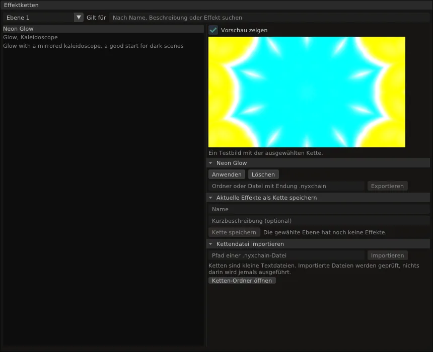
#Dateien und Weitergeben
Alles in diesem Kapitel ist eine kleine Textdatei im Datenordner. Du kannst sie auf einen anderen Rechner kopieren oder einem Freund schicken.
| Datei | Ordner | Was sie enthält |
|---|---|---|
.nyxtext | texts | Einen Text-Clip |
.nyxpart | particles | Einen Partikel-Clip |
.nyxchain | chains | Eine Kette aus vier Effekten |
.ttf, .otf, .ttc | fonts | Deine eigenen Schriften |
Show-Pakete packen diese Dateien noch nicht ein. Der Plan eines Exports nennt Text- und Partikel-Clips als Clips, die der andere Rechner haben muss, kopiere die Dateien also von Hand.
20. Der Node-Effekt-Editor
#Was er macht
Der Node-Editor baut deine eigenen Effekte ohne Code. Du verbindest Nodes für Bilder, Audio, Beats, LFOs, Mathe, Farbe, Verzerrung, Rauschen und Formen, und NyrexVJ macht aus dem Graphen einen einzigen Shader. Das Ergebnis ist ein normaler Effekt: Er steht in der Bibliothek als Node: Name, passt in jeden Slot eines Layers oder des Masters, hat bis zu vier Regler und kann die Makros, das Audio und den Beat lesen. Ein Node-Effekt kostet so viel wie derselbe Effekt von Hand geschrieben.
#Schnellstart
- Öffne den Editor über Creator, Node-Effekt-Editor, oder über Nodes bearbeiten unter einem Node-Effekt im Effekt-Rack.
- Drück Neu, oder Beispiele erstellen für vier fertige Effekte: Wavy Rainbow, Mirror Swirl, Kick Pulse und Trails.
- Klick mit rechts in den Graphen und such einen Node. Zieh von einem Ausgangs-Pin rechts an einem Node zu einem Eingangs-Pin links an einem anderen, um sie zu verbinden. Der Output-Node ist das Ende jedes Effekts.
- Der Effekt wird nach jeder Änderung einen Moment später gespeichert und neu gebaut. Die Statuszeile zeigt, ob er kompiliert, wie oft er das Bild liest und die Meldung auf dem Node, der falsch ist. Eine ungültige Änderung lässt den letzten guten Shader weiterlaufen.
- Drück Zu Layer hinzufügen, um den Effekt auf dem gewählten Layer zu nutzen.

#Im Graphen arbeiten
| Aktion | So geht es |
|---|---|
| Node hinzufügen | Rechtsklick auf leere Fläche, zum Suchen tippen, Node anklicken |
| Verbinden | Von einem Ausgangs-Pin auf einen Eingangs-Pin ziehen |
| Verbindung entfernen | Einen verbundenen Eingang wegziehen, oder rechts auf den Node klicken und Eingänge trennen wählen |
| Wert ändern | Das Wertefeld ziehen, oder doppelklicken und eine Zahl tippen |
| Node löschen | Wählen und Entf oder Rücktaste drücken |
| Duplizieren | Strg+D oder Rechtsklick, Duplizieren |
| Ansicht verschieben | Mittlere Maustaste, oder auf leerer Fläche ziehen |
| Ansicht zoomen | Strg und das Mausrad zoomt zur Maus hin; = und - zoomen hinein und heraus, 0 geht zurück auf 100 Prozent |
| Rückgängig und Wiederherstellen | Strg+Z und Strg+Y |
| Aufräumen | Die Schaltfläche Anordnen setzt die Nodes in Spalten von den Eingängen zum Ausgang |
Eine Zahl kann einen Vektor oder eine Farbe speisen, und eine Farbe kann eine Farbe mit Alpha speisen. Eine Verbindung, die eine Schleife ergäbe oder sich nicht umwandeln lässt, wird beim Loslassen abgelehnt.
#Die 68 Nodes
Die Nodes sind in Gruppen geordnet: Input (Bild, vorheriges Bild für Feedback, Position, Zeit, Beat, Audio, Spektrum, Wellenform, Regler, Makros, LFO und Konstanten), Maths, Vector, Colour, Distort, Noise, Shape, Filter und Output. Nodes lesen das Bild, die Audio-Analyse, den Beat, die acht Makros und vier Regler. Ein LFO-Node läuft im Shader auf der Beat-Clock und folgt der Sync-Quelle ganz ohne Prozessorarbeit. Der vollständige Katalog mit jedem Eingang und jeder Option steht in docs/NODES.md des Projekts.
#Regler, Weitergeben und Grenzen
Jeder Effekt hat vier Regler. Unter Effekt-Regler gibst du jedem eine Beschriftung und einen Standardwert, und ein Regler ohne Beschriftung wird nicht angezeigt. Effekte werden als .nyxfx-Dateien im Ordner nodes des Datenordners gespeichert. Schick die Datei an einen Freund, oder zieh eine Datei auf das NyrexVJ-Fenster, um sie zu importieren.
Ein Graph darf das Bild höchstens 64 Mal lesen. Der Editor hat keinen Zoom. Werte, die du in einen Eingang ohne Verbindung tippst, werden fest in den Shader eingebaut.
21. Live-Quellen: Spout, NDI und Kameras
#Spout-Eingang
Vier Clips, Spout Input 1 bis 4, zeigen das Bild, das ein anderes Programm über Spout sendet, zum Beispiel Unreal Engine, TouchDesigner oder ein Spiel. Leg einen in eine Zelle, wähl ihn und such den Sender im Clip-Fenster aus. Automatisch nimmt den ersten Sender, der nicht die Ausgabe von NyrexVJ selbst ist.
Das Bild wird ohne Strecken in den Layer eingepasst und läuft wie jeder Clip durch die Layer-Effekte. Es verbindet sich neu, wenn der Sender zurückkommt, und zeigt einen Platzhalter, solange keiner da ist. Kommt das Bild auf dem Kopf an, hak Bild vertikal spiegeln an. Spout funktioniert nur unter Windows.
#NDI-Eingang
Vier Clips, NDI Input 1 bis 4, zeigen das Bild eines anderen Programms oder Computers im Netzwerk. NDI-Sender werden automatisch aufgelistet. Automatisch nimmt den ersten Sender, der nicht die Ausgabe von NyrexVJ ist. NDI braucht die NDI-Runtime, die NyrexVJ nicht mitliefert. Installiere die kostenlosen NDI Tools von ndi.video. Das Clip-Fenster hat eine Schaltfläche zur Download-Seite.
#Kameras und Capture-Karten
Vier Clips, Camera 1 bis 4, zeigen eine Webcam oder eine Capture-Karte. Das Clip-Fenster listet die Kameras mit einer Schaltfläche Aktualisieren. Auflösung und Bildrate sind Anfragen an das Gerät, und Kameras antworten mit ihrem nächstliegenden Modus. Kameras brauchen die FFmpeg-Bibliotheken samt der Geräte-Bibliothek.
#Netzwerk-Streams: RTSP, SRT und UDP
Vier Clips, Stream Input 1 bis 4, zeigen einen Video-Stream aus dem Netzwerk, zum Beispiel von einer IP-Kamera (RTSP), einem Encoder oder einem anderen Computer (SRT) oder von einem Programm, das MPEG-TS-Pakete schickt (UDP). Sie sind standardmäßig aus. Wähle einen Stream-Input-Clip und setze im Clip-Fenster den Haken bei Netzwerk-Stream-Eingänge erlauben. Solange der Haken fehlt, wird keine Verbindung aufgebaut und kein Port geöffnet.
Gib die Adresse im Feld Adresse ein und drücke Enter. NyrexVJ nimmt nur drei Arten von Adressen an: rtsp:// (wird über TCP gelesen, mit Benutzername und Passwort in der Adresse, falls die Kamera sie braucht), srt:// und udp://. Beispiele: rtsp://192.168.1.20:8554/live, srt://host:9000, srt://:9000?mode=listener und udp://@:5000. Alles andere, etwa eine Datei, eine Webseite oder ein Befehl, wird mit einer Meldung abgelehnt. Ein Passwort in der Adresse wird im Fenster und im Log versteckt.
Eine UDP-Adresse und eine SRT-Adresse mit mode=listener öffnen einen Port an diesem Computer und warten auf einen Sender. Das Clip-Fenster zeigt den Port in Orange. Jeder, der den Computer über diesen Port erreicht, kann ein Bild schicken. Nutze das nur in einem Netzwerk, dem du vertraust, und gib den Port in der Firewall bewusst frei. Wenn es geht, lass NyrexVJ lieber selbst eine Verbindung zum Sender aufbauen.
Das Profil bestimmt, wie viel Verzögerung du in Kauf nimmst. Niedrige Latenz hält fast keinen Puffer und kann in einem schlechten Netz ruckeln. Ausgewogen ist der Standard. Weich puffert etwa eine Sekunde und fängt Schübe ab. Im Clip-Fenster stehen der Zustand, die Größe, der Codec, die Bildrate, die Verzögerung vom Dekodieren bis zum Upload, der Jitter und die Zahl der Aufholsprünge. Fällt der Stream zu weit zurück, springt NyrexVJ zum nächsten Keyframe und zählt einen Aufholsprung. Hört der Sender auf, bleibt das letzte Bild oder der Platzhalter stehen und der Eingang verbindet sich von selbst neu.
Ein Stream hat hier keinen Ton, nur das Bild. HDR- und 10-Bit-Streams werden ohne Tone Mapping als normales 8-Bit-Video gezeigt. Streams sind bewusst begrenzt: nur Video, die Codecs H.264, H.265, AV1, MJPEG, MPEG-2, VP8 und VP9 und höchstens 8192 Pixel pro Seite. Ein Stream außerhalb dieser Grenzen wird mit einer Meldung abgelehnt. Der Eingang braucht die FFmpeg-Bibliotheken, und der FFmpeg-Build muss das Protokoll enthalten, zum Beispiel SRT.
NyrexVJ wurde mit erzeugten Sendern (FFmpeg und ein kleiner Testserver) auf einem Computer getestet, nicht mit echten Kameras, einem echten Netzwerk, Windows oder neben VRChat. Teste deinen Stream vor der Show. Die NDI-Einstellungen zeigen jetzt, welche Version die NDI-Runtime meldet, oder dass sie keine meldet. Die Einzelheiten, die Zahlen und die Grenzen stehen in docs/STREAMS.md des Projekts.
#Personen im Kamerabild finden
Die Personenerkennung schaut auf das Bild einer Kamera, einer NDI-Quelle oder eines Streams und findet, wo Menschen stehen. Sie liefert dir eine Maske für einen Effekt und sechs Zahlen, mit denen alles reagieren kann, was auf Musik reagiert. Sie ist experimentell und standardmäßig aus. Solange sie aus ist, läuft nichts Zusätzliches, es wird nichts angelegt und die sechs Zahlen sind 0.
Es steckt keine KI darin. Die Methode ist eine Hintergrund-Differenz: NyrexVJ lernt in den ersten Momenten (etwa 12 analysierte Bilder), wie die leere Szene aussieht, und nennt alles, was davon abweicht, eine Person. Es weiß nicht, was eine Person ist, deshalb zählen auch ein getragener Stuhl, eine geöffnete Tür oder ein Schatten. Es braucht eine Kamera, die sich nicht bewegt, und eine leere Szene, während es lernt. Es wird nichts heruntergeladen, nichts irgendwohin gesendet und kein Bild gespeichert.
So benutzt du sie: Öffne Einstellungen, Leistung, Personenerkennung (experimentell) und wähle Hintergrund-Differenz (ohne Modell). Dann stellst du ein:
- Bildquelle: die Kamera, NDI-Quelle oder der Stream, auf den geschaut wird, zum Beispiel Kamera 1. Stelle diesen Eingang vorher auf der Seite Live ein.
- Qualität: Schnell, Ausgewogen oder Fein. Die Analyse arbeitet in einem eigenen Thread mit einer kleinen Kopie des Bildes (etwa 96, 160 oder 256 Pixel breit). Kommt sie nicht hinterher, senkt sie zuerst die Qualität, dann die Rate und schaltet sich am Ende mit einem Grund auf der Seite selbst ab, statt die Show auszubremsen.
- Analyse-Rate (pro Sekunde): wie oft ein Bild analysiert wird, 2 bis 30. Zwischen zwei Analysen bleiben die letzte Maske und die letzten Werte stehen.
- Empfindlichkeit, Weichheit und Stabilität: eine höhere Empfindlichkeit findet schwächere Unterschiede, aber auch mehr Rauschen und Schatten, die Weichheit macht den Rand der Maske weicher, und die Stabilität hält die Maske zwischen zwei Analysen länger fest, sodass sie weniger flackert.
- Hintergrund jetzt neu lernen: vergisst die gelernte Szene und lernt neu. Drück es, solange niemand im Bild ist, und nochmal, wenn sich Kamera, Licht oder Bühne geändert haben.
Die Seite zeigt den Zustand (lernt, beobachtet, kein Bild von der Quelle), wie viele Personen gefunden wurden, die Analysezeit gegen ihr Budget, die Größe und eine kleine Vorschau der Maske: Weiß ist eine Person, Schwarz der Hintergrund.
Für die Maske legst du den Effekt Person Key auf einen Layer oder auf den Master. Sein Regler Modus hat vier Stufen: das Bild nur dort, wo die Person ist, das Bild nur dort, wo keine Person ist, die Person als flache Farbe und der Umriss der Person. Weichheit macht den Rand weicher, Hintergrundfarbe wählt Schwarz oder eine dunkle Tönung für den Bereich außerhalb, und Farbe stellt die Tönung ein. Der Bereich außerhalb ist nicht durchsichtig, sondern die Hintergrundfarbe. Um die Person über andere Layer zu legen, gib dem Layer den Mischmodus Addieren oder Aufhellen mit schwarzer Hintergrundfarbe.
Für die Zahlen wählst du sie als Quelle für einen Layer, die Reaktion eines Effekts oder einen Master-Regler: Person anwesend, Person X (von links), Person Y (von unten), Personengröße (die Höhe der Person), Personenbewegung und Personenanzahl. Sie erscheinen in den Listen nur, solange die Personenerkennung an ist. X, Y und die Größe behalten ihren letzten Wert, wenn niemand zu sehen ist, nimm also zusätzlich Person anwesend.
Was du erwarten kannst:
- Eine Person, die in eine leere, ruhige Szene läuft, wird innerhalb einer Sekunde gefunden. Zwei Personen, die sich kreuzen, behalten ihre Nummern.
- Wer im Bild steht, während der Hintergrund gelernt wird, wird Teil des Hintergrunds. Drück Hintergrund jetzt neu lernen, wenn die Bühne leer ist.
- Eine Kamera, die wechselnde Projektionen oder Bühnenlicht sieht, findet falsche Personen. Sperr die Belichtung der Kamera, richte sie weg von der Projektion und senke die Empfindlichkeit.
- Die Maske passt zum Kamerabild, wie es ohne Skalierung gezeigt wird. Skaliert oder verschiebt ein Layer den Kamera-Clip, folgt die Maske nicht.
- Getestet wurde mit am Computer erzeugten Bildern und Software-Rendering. Probiere es mit deiner eigenen Kamera, deinem eigenen Licht und deiner eigenen Grafikkarte aus, bevor du dich in einer Show darauf verlässt.
Die Einzelheiten, die Zahlen und die Grenzen stehen in docs/PERSON.md des Projekts.
#Zustand und Wiederverbinden
Das Clip-Fenster zeigt den Zustand einer Live-Quelle: Suche, Verbinde, Live, Signal verloren oder Verbinde neu, dazu Größe, Bildrate, verworfene Bilder und die Latenz von der Ankunft bis zum Ende des Uploads. Eine verlorene Quelle wird von selbst wieder gesucht, zuerst nach einer halben Sekunde und dann mit wachsenden Pausen bis zu 10 Sekunden. Das letzte Bild bleibt währenddessen auf dem Layer.
Eine Quelle wird geöffnet, wenn ein Layer ihren Clip zeigt, und drei Sekunden nach der letzten Nutzung geschlossen, sie kostet also nichts, solange sie nicht gebraucht wird. Die Einzelheiten und was noch nicht getestet wurde, etwa echte Capture-Karten, stehen in docs/LIVE.md des Projekts.
22. Ausgänge, Mapping und OBS
#Das Bild an OBS schicken
Spout gibt das fertige Bild unter Windows ohne Bildschirmaufnahme an OBS weiter. Du richtest es einmal in diesen Schritten ein.
- Hak in NyrexVJ im Menü Ausgabe oder unter Einstellungen, Ausgabe Per Spout an OBS senden an und wähl einen Sendernamen.
- Installiere in OBS einmalig das obs-spout2-plugin.
- Füge eine Quelle namens Spout2 Capture hinzu und wähl den Sender aus der Liste.
Spout funktioniert nur unter Windows. Das Ausgabefenster mit einer Fensteraufnahme in OBS bleibt eine Alternative, ebenso NDI. Über NDI senden im Menü Ausgabe schickt das Hauptbild über das Netzwerk an OBS mit NDI-Plugin, Resolume, vMix oder den NDI Studio Monitor.
#Video-Routing
Ausgabe, Video-Routing öffnet ein Fenster, das zeigt, was als Quelle dienen kann und wer es benutzt. Ein Routing-Clip spielt das Bild einer anderen Ebene, mehrerer Ebenen zusammen oder des Masters in einer eigenen Ebene. Die Routing-Clips findest du in der Bibliothek unter dem Filter Routing, und du legst einen wie jeden anderen Clip in eine Zelle. Ein Routing-Clip ist eine normale Ebene: Ihre Effekte, Deckkraft, Mischmodus und Farbkorrektur wirken auf das weitergeleitete Bild.
- Die Quellen sind Ebene 1 bis 4 (das Bild der Ebene nach ihren Effekten, vor ihrer Deckkraft und ihrem Mischmodus), Ebenen 1-2, 1-3 und 1-4 (die Mischung der ersten Ebenen nach ihrer Deckkraft und ihren Mischmodi) und Master (nach den Master-Effekten, vor Master-Pegel und Farbkorrektur).
- Clips mit dem Namen Route zeigen eine Quelle desselben Bildes: Eine Ebene kann eine Ebene unter sich benutzen, und eine Ebene kann die Mischung der Ebenen unter sich benutzen. Clips mit dem Namen Feedback zeigen das vorherige Bild, können jede Quelle benutzen, sogar das eigene Bild der Ebene, und sind genau ein Bild verzögert.
- Eine Wahl, die eine Schleife ergäbe, wird blockiert: Die Ebene zeichnet nichts, und das Fenster sagt Gesperrt, das wäre eine Schleife. Nimm einen Feedback-Clip, wenn du absichtlich eine Schleife willst.
- Wenn die Quelle nicht läuft (leere Zelle, Bypass, Solo einer anderen Ebene), ist der Routing-Clip transparent, und das Fenster sagt es. Eine Quellebene mit Deckkraft 0 wird trotzdem gezeichnet, solange etwas sie benutzt.
- Unter Bilder, die an andere Programme gehen, haben Spout, NDI und Aufnahme je eine Wahl: Master, eine der Ebenen oder die ersten zwei, drei oder vier Ebenen zusammen. Eine andere Quelle als Master wird als deckende Kopie in der Größe der Komposition gesendet, ohne Master-Effekte, Pegel und Farbkorrektur, und nur solange dieser Sender läuft. Läuft ihre Quelle nicht, sendet der Sender Schwarz. Die Ausgabefenster zeigen immer den Master.
- Das Fenster zeigt jede Quelle mit einer kleinen Live-Vorschau, ihrer Größe, wie viele Ebenen oder Sender sie benutzen, und ihrem Speicher. Kopien entstehen auf der Grafikkarte, nie über den Prozessor, und werden etwa anderthalb Sekunden nach dem letzten Nutzer freigegeben. Der Speicher aller Kopien ist auf 512 MiB begrenzt.
#Ausgabefenster
Einstellungen, Ausgabe hat einen Tab für jeden von bis zu vier Ausgängen. Ausgang 1 ist immer in Benutzung, die Ausgänge 2 bis 4 schaltest du mit Diesen Ausgang verwenden ein. Jeder Ausgang hat sein eigenes Display, Öffnen und Schließen, Vollbild oder Fenster und ein Testbild. F11 schaltet den Vollbildmodus für alle offenen Ausgänge um, und Esc verlässt ihn. Zwei Ausgänge auf demselben Display bekommen eine Warnung, weil sie übereinander lägen.

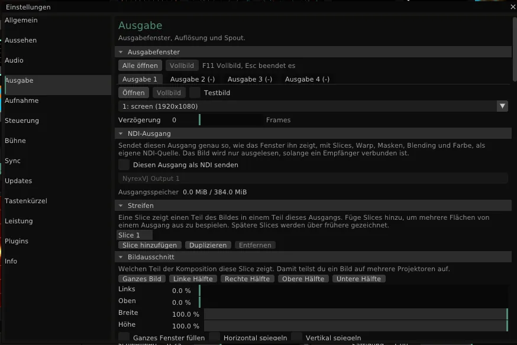
#Wenn das Fenster minimiert oder bewegt wird
Das Bild bleibt nicht stehen, wenn du das Hauptfenster minimierst. Die Engine und jede Ausgabe (die Ausgabefenster, Spout, NDI, die Aufnahme, der Netzwerk-Sync, MIDI und OSC) laufen weiter; nur die Oberfläche wird nicht gezeichnet, das spart Arbeit. Unter Windows läuft außerdem eine eigene Schleife des Systems, solange du das Fenster ziehst, seine Größe änderst oder ein Menü offen hältst; NyrexVJ lässt die Engine auch in dieser Zeit weiterlaufen. Der Windows-Teil wurde beim Schreiben nur kompiliert und nicht ausgeführt. Friert eine Ausgabe ein, während du das Fenster bewegst, sag es den Maintainern.
#Slices und Bildausschnitt
Ein Ausgang enthält bis zu acht Slices. Ein Slice zeigt einen Teil des Bildes in einem Teil des Ausgangs. Slice hinzufügen, Duplizieren und Entfernen verwalten sie. Der Bildausschnitt legt fest, welchen Teil der Komposition ein Slice zeigt, als Links, Oben, Breite und Höhe in Prozent oder mit den Schaltflächen Ganzes Bild und den vier Hälften. So verteilst du ein Bild auf mehrere Projektoren. Ganzes Fenster füllen streckt es, Horizontal spiegeln und Vertikal spiegeln drehen es für Rückprojektion.
#Ecken, Verzerrung und Masken
Die Zeichenfläche zeigt den Ausgang so, wie ihn der Projektor zeichnet. Zieh an den orangen Quadraten, um die vier Ecken zu verschieben, damit ein Projektor, der schräg steht, auf eine Wand passt. Zieh an den runden Punkten, um das Bild zu biegen. Verzerrungspunkte stellt das Raster von 2 x 2 bis 17 x 17 ein. Ecken zurücksetzen und Verzerrung zurücksetzen gehen zurück zum einfachen Rechteck.
Eine Maske schneidet einen Slice auf eine Form zu, zum Beispiel um einen Pfeiler oder ein Bühnenbild. Sie ist ein Polygon mit 3 bis 32 Punkten, das gekrümmte Kanten haben kann, eine Form, die du frei mit der Maus zeichnest, oder ein Bild wie eine PNG-Datei. Weiche Kante verwischt den Rand, und Invertieren versteckt das Innere statt des Äußeren.
#Kantenüberblendung und Farbe
Stell bei Projektoren, die sich überlappen, die Überblendbreite der gemeinsamen Kanten in Prozent des Ausgangs ein. Verlauf und Gamma formen die Blende, sodass die beiden Blenden in der Überlappung die ursprüngliche Helligkeit ergeben. Schwarzwert hebt das Schwarz des Bildes außerhalb der Überblendzonen an, denn zwei überlappende Projektoren addieren ihr Grau, die Überlappung sieht also heller aus als der Rest. Helligkeit dimmt einen Projektor, der heller ist als sein Nachbar.
Jeder Slice hat seine eigene Farbkorrektur, und das ganze Ausgangsbild auch: Verstärkung für Rot, Grün und Blau, Sättigung, Kontrast, Gamma und Schwarzanhebung. Damit gleichst du Projektoren unterschiedlichen Alters an.
#Mehrere Projektoren auf einmal
Ausgänge anordnen richtet ein Raster aus überlappenden Projektoren mit einem Klick ein. Gib die Zahl der Spalten und Zeilen und die Überlappung in Prozent des ganzen Bildes ein. NyrexVJ richtet dann die Bildausschnitte und die Kantenüberblendung für dieses Raster ein. Feinjustiere danach.
#3D-Mapping auf Flächen
Ecken und Verzerrung passen ein Bild auf einen flachen Bildschirm an. 3D-Mapping ist für einen Raum mit echten Dingen darin, etwa einer Wand, einem Pfeiler oder einem Quader: Du sagst NyrexVJ, wo der Projektor steht und wo die Flächen sind, und das Bild wird mit der richtigen Perspektive darauf gezeichnet. Es ist aus, bis du es einschaltest, es gilt pro Slice, und die anderen Slices und Ausgänge bleiben flach, ein Venue kann also beides mischen.
Öffne Einstellungen, Ausgabe, wähle den Ausgang und such den Block 3D-Mapping. Hake 3D-Mapping für diese Slice verwenden an. NyrexVJ beginnt mit einem Projektor und einer Wand davor. Solange es an ist, werden die Ecken und die Verzerrung dieses Slice nicht benutzt; die Maske, die Kantenüberblendung und die Farbe gelten weiter.
#Den Raum beschreiben
Jede Position ist in Metern: X nach rechts, Y nach oben und Z zum Publikum. Ein Projektor oder Betrachter mit allen Winkeln auf null blickt entlang minus Z. Positives Gieren dreht ihn nach links, positives Nicken blickt nach oben und positives Rollen hebt seine rechte Seite. Der Block zeigt diese Zeile über den Reglern.
Der Projektor hat eine Position, seine Winkel, ein Sichtfeld (den vertikalen Öffnungswinkel des Objektivs) oder das Projektionsverhältnis aus seinem Datenblatt, das ist dieselbe Einstellung, ein Seitenverhältnis, das zum Ausgang passt, eine Lens-Shift für Projektoren, die nach oben werfen, und einen Abstand Nah und fern. Auf die Projektionsflächen ausrichten dreht ihn zur Mitte der Flächen.
Projektionsflächen sind die echten Dinge, die der Projektor beleuchtet. Wand hinzufügen und Quader hinzufügen geben dir einen Anfang, und du kannst bis zu 16 Flächen hinzufügen, duplizieren und entfernen. Jede besteht aus vier Ecken in Metern, in dieser Reihenfolge von vorn gesehen: oben links, oben rechts, unten rechts, unten links. Die Vorderseite ist die Seite, auf der der Projektor stehen muss; die Rückseite wird nicht gezeichnet, solange Beide Seiten nicht angehakt ist. Der Bildausschnitt ist der Teil des Bildes, den diese Fläche zeigt, von 0 bis 1, und Ganzes Bild zeigen setzt ihn zurück. Unterteilungen machen die Fläche nur feiner; eine ebene braucht sehr wenige.
Die beiden Auswahlknöpfe unter dem Haken bestimmen, was die Flächen zeigen. Bild auf den Projektionsflächen gibt jeder Fläche ihren eigenen Ausschnitt des Bildes. Bild aus Sicht eines Betrachters stellt eine virtuelle Kamera in den Raum, den Betrachter, und jede Fläche zeigt, was dieser Betrachter dort sehen würde. Das nutzt du für erzwungene Perspektive, bei der ein Bild nur von einem Punkt aus richtig aussieht.
#Von Hand kalibrieren
Die Kalibrierung findet aus Punkten, die du kennst, heraus, wo der Projektor wirklich steht. Du brauchst ein Maßband und etwas Geduld.
- Such Punkte aus, die du im Raum wiederfindest, etwa Ecken und Markierungen auf den Flächen, und miss sie in denselben Koordinaten wie die Flächen. Vier Punkte sind das Minimum, und sie dürfen nicht auf einer Linie liegen; verteile sie über die Flächen und nimm mehr für ein besseres Ergebnis.
- Füge sie unter Kalibrierung mit Punkt hinzufügen oder Ecken der gewählten Projektionsfläche hinzufügen ein. Gib die Position unter Ort im Raum ein.
- Hake Punkte auf der Ausgabe anzeigen an und schalte das Testbild ein. Jeder Punkt zeigt ein grünes Kreuz, wo das Licht landen soll, und ein oranges X, wo ihn die aktuelle Lage des Projektors hinsetzt.
- Verschiebe für jeden Punkt das grüne Kreuz, mit der Maus oder mit den Pfeiltasten (ein Pixel bei 1920 Breite, zehn mit Umschalt), bis das Licht auf der echten Markierung landet. Kreuz dorthin setzen, wo die Lage den Punkt hinsetzt zeigt dir, was die Lage gerade sagt.
- Drück Lage des Projektors berechnen. Das Ergebnis zeigt den mittleren und den größten Fehler in Pixeln bei 1920 Breite, und die Liste zeigt den Fehler jedes Punktes. Ein Punkt mit großem Fehler ist meist falsch gemessen oder das Kreuz sitzt auf der falschen Markierung.
- Wenn die Zahlen gut aussehen, drück Auf den Projektor anwenden. Rückgängig bringt die alte Lage zurück. Ein Ergebnis, das nicht passt, wird gemeldet und ändert nichts.
Lass Sichtfeld mitberechnen aus, wenn du das Objektiv kennst; mit der Option brauchst du sechs Punkte, und die Lage wird unruhiger.
#Gut zu wissen
Die Flächen werden mit einem Tiefenpuffer gezeichnet, ein Pfeiler vor einer Wand verdeckt sie also. Hat ein Ausgabefenster keinen Tiefenpuffer, sagt der Block das und die Flächen werden in der Reihenfolge der Liste gezeichnet. Gib bei mehreren Projektoren jedem Ausgang seinen eigenen Projektor, kalibriere jeden einzeln und stell die Kantenüberblendung der Überlappung bei beiden wie gewohnt ein; die Überblendung weiß nicht, auf welche Fläche das Licht trifft. Die Markierungen werden auf das Ausgabefenster und in eine Aufnahme gezeichnet, nicht in NDI. Das Netz zählt im Speicherbudget der Ausgänge mit.
Nicht gebaut: Kalibrierung mit einer Kamera, Linsenverzerrung, Flächen, die keine ebenen Rechtecke sind, und ein Projektor, der sich während der Show bewegt.
#Venue-Setups
Ein Venue-Setup speichert alle Ausgänge eines Raums als kleine Datei, mit den Displays, Slices, Verzerrung, Masken, Überblendung und Farbe. Speichern unter, Laden, Duplizieren, Exportieren und Importieren verwalten sie, und du kannst eine Setup-Datei auf das Fenster ziehen. --venue NAME lädt eins beim Start. So baust du das Mapping einmal in einem Club auf und lädst es beim nächsten Mal mit einem Klick.
#NDI pro Ausgang
Jeder Ausgang kann seine eigene NDI-Quelle senden, die den Ausgang genau so trägt, wie ihn das Fenster zeigt, mit Masken, Verzerrung und Farbe. Die NDI-Bibliothek wird nicht mit NyrexVJ geliefert, installiere die kostenlosen NDI Tools. Ein Speicherbudget von 384 MiB wird für Masken, Verzögerung und NDI-Auslesen mitgezählt, und die Einstellungen zeigen, wie viel das aktuelle Setup braucht.
#Frame-Lock und Verzögerung
Frame-Lock zeichnet zuerst alle Ausgabefenster und tauscht sie dann direkt nacheinander, damit mehrere Bildschirme dasselbe Bild zeigen. Jeder Ausgang lässt sich um 0 bis 8 Bilder verzögern, um Bildschirme mit unterschiedlicher Verarbeitungszeit auszurichten. Die Einstellungen zeigen die gemessene Tausch-Abweichung, und das Testbild Sync-Balken hilft dir, mehrere Bildschirme zum Vergleich zu filmen. Es ist kein Hardware-Genlock. Unter der Tausch-Abweichung sagt die Zeile Hardware-Frame-Lock, ob dein Grafiktreiber die Erweiterungen auflistet, die professionelle Karten mit Sync-Karte anbieten: „Von diesem Grafiktreiber nicht angeboten“ ist für die meisten Grafikkarten normal. „Vom Treiber angeboten, wird von NyrexVJ nicht genutzt“ heißt nur, dass der Treiber sie auflistet. NyrexVJ kann weder eine Sync-Karte noch eine Sperre sehen und schaltet nichts davon ein; richte eine Sync-Karte im Treiber-Kontrollfeld ein und filme die Sync-Balken, um zu sehen, was du bekommst.
23. Farbe: LUTs, HDR-Videos und die Anzeige
#Wie NyrexVJ mit Farbe umgeht
Ebenen, Mischung und das Hauptbild sind 8 Bit und haben den sRGB-Look: Jedes Bild liegt mit der sRGB-Kurve und den Rec.-709-Farben vor, und Ebenen werden in diesen Werten gemischt, wie es schon immer war. Nichts in diesem Kapitel ändert das, und nichts davon ist an, bevor du es einschaltest, eine fertige Show sieht also genauso aus wie vorher. Drei Werkzeuge sind optional: eine Farbstufe mit LUT, Tone Mapping für HDR-Videos und eine Anzeige-Einstellung für jeden Ausgang. Die Seite docs/COLOR.md im Projekt listet Weg für Weg auf, was welche Bittiefe behält und wie das gemessen wurde.
#Ein Look aus einer .cube-Datei
Eine LUT ist eine Tabelle, die jede Farbe in eine andere umrechnet, und so geben Grading-Programme einen Look an andere Programme weiter. NyrexVJ liest 3D-Tabellen im .cube-Format, das DaVinci Resolve, Adobe-Programme und viele andere ausgeben.
- Kopiere die
.cube-Datei in den Ordnerlutsim Datenordner. Die Schaltfläche LUT-Ordner öffnen unter Einstellungen, Leistung, Farbe öffnet ihn für dich. - Hake Farbstufe mit LUT (experimentell) an. Wähle die Datei in der Liste, und drück Liste aktualisieren, falls sie noch nicht auftaucht.
- Stell LUT-Stärke ein. 0 ist das Originalbild, 1 ist der volle Look, dazwischen wird gemischt.
Der Look wird einmal auf das fertige Hauptbild angewendet, nach dem Deck-Übergang und vor den Ausgängen, NDI, Spout und der Aufnahme, alles, was das Programm verlässt, hat ihn also. Die Transparenz des Bildes bleibt unberührt. Die Einstellungen zeigen die Größe der Tabelle und den zusätzlichen Grafikspeicher, ein Bild mehr plus die Tabelle. Schaltest du die Stufe aus, ist das Bild genau so, als wäre sie nie an gewesen.
Gelesen werden nur 3D-Tabellen mit 2 bis 65 Punkten pro Seite und bis zu 64 MB. Eine 1D-Tabelle, eine kaputte Datei oder eine Datei mit seltsamem Namen wird mit einer Meldung und möglichst der Zeilennummer abgelehnt; das Bild ändert sich nicht. Tabellen mit wenigen Punkten geben ein gröberes Ergebnis als Tabellen mit 33 Punkten.
#HDR-Videos
Manche Videos sind für HDR-Bildschirme gemacht (die Übertragungskurven PQ und HLG). Auf einem normalen Bildschirm sehen sie flau und grau aus, und der Video-Monitor sagt, dass die Datei HDR ist. Schalte unter Einstellungen, Leistung, Farbe HDR-Videos auf SDR abbilden (Tone Mapping) ein, dann macht NyrexVJ daraus ein normales Bild, während die Grafikkarte die Farben des Videos umrechnet.
- Referenzweiß (Nits) sagt, wie hell normales Weiß im Video ist. 203 ist der übliche Wert; kleinere Werte machen das Bild heller.
- Spitzenhelligkeit des Videos (Nits) ist der hellste Wert, für den das Video gemastert wurde. Dort erreicht das Bild Weiß.
- Tone Mapping wählt Weiche Schulter, die normale Helligkeit in Ruhe lässt und nur die hellsten Teile abrundet, oder Filmic mit mehr Kontrast.
Farben, die ein normaler Bildschirm nicht zeigen kann, werden nach innen geschoben und nicht einfach abgeschnitten. Das Tone Mapping wirkt nur, solange Videofarben auf der Grafikkarte umrechnen an ist. Videos, die der Prozessor umrechnet, und HAP-Videos bleiben unverändert, und ein normales SDR-Video sieht mit der Option gleich aus. Es ist eine vernünftige Umrechnung, keine kalibrierte: Vergleiche eine Datei, die du kennst, mit einem Referenzplayer und stell die beiden Werte nach Augenmaß ein.
#Die Anzeige eines Ausgangs
Einstellungen, Ausgabe, Anzeige dieses Ausgangs sagt NyrexVJ, was der Bildschirm oder Projektor an diesem Ausgang erwartet. Farbraum kann Rec. 709 sein (der Standard, dasselbe wie sRGB), Display P3 oder Rec. 2020, und die Übertragungskurve sRGB (der Standard), Gamma 2.2, 2.4 oder 2.6. Mit den Standardwerten passiert gar nichts. Mit anderen Werten wird nur das Bild dieses Ausgangs umgerechnet, nach der Farbkorrektur von Slice und Ausgang und vor Kantenüberblendung, Helligkeit und Schwarzwert. Das Testbild und die Sync-Balken werden nicht umgerechnet. Die NDI-Quelle dieses Ausgangs zeigt das umgerechnete Bild, weil sie den Ausgang so überträgt, wie das Fenster ihn zeigt.
Wähle eine Einstellung nur, wenn Bildschirm oder Projektor wirklich so eingestellt ist, zum Beispiel ein Projektor im Display-P3-Modus. Eine falsche Einstellung macht Farben matt oder zu kräftig. Anzeige zurücksetzen bringt den Standard zurück. Die Einstellung steht im Venue-Setup und nur dann, wenn sie nicht der Standard ist.
#Was Farbmanagement nicht kann
Das Bild bleibt auf jedem Weg 8 Bit und SDR. Es gibt keine 10-Bit-Ausgabe, keine HDR-Ausgabe, keine HDR-Angaben für einen Bildschirm, einen NDI-Empfänger oder eine Capture-Karte und kein SDI. Ein 10-Bit-Video wird beim Zeigen auf 8 Bit reduziert, und eine Aufnahme in einem 10-Bit-Format wie ProRes enthält trotzdem ein 8-Bit-Bild. NyrexVJ liest kein Farbprofil eines Bildschirms. Einstellungen, Leistung, Farbe zeigt die Farbtiefe, die die Grafikkarte für das Hauptbild meldet.
24. Aufnahme
#Starten und beenden
NyrexVJ kann das fertige Bild der Show in eine Videodatei aufnehmen, während es läuft. Nutze das Menü Ausgabe, Aufnahme starten, oder Strg+Umschalt+R, und dieselben Tasten beenden sie wieder. Einstellungen, Aufnahme hat alle Optionen und Live-Zahlen. Die Statusleiste zeigt REC, die aufgenommene Zeit und in Orange die verworfenen Bilder.
Beenden speichert die Datei. Schließt du das Programm während der Aufnahme, speichert es die Datei zuerst. Abbrechen und löschen hält sofort an und löscht die Datei. Dateien tragen Datum und Uhrzeit des Starts im Namen und liegen im Ordner Recordings des Datenordners, außer du wählst einen anderen Ordner.
#Was aufgenommen wird
Das Bild, das die Engine für die Komposition rendert, dasselbe Bild, das an die Vorschau, an Spout und an NDI geht. Es hat die Auflösung der Komposition und wird auf die Größe skaliert, die du für die Datei wählst. Was ein einzelnes Ausgabefenster nach dem Mapping zeigt, wird nicht aufgenommen, nutze dafür NDI pro Ausgang oder eine Aufnahme des Fensters. Die Aufnahme hat keine Transparenz und keinen Ton aus Videos. Der Ton kommt aus der Audioquelle unter Einstellungen, Audio, wenn Ton aufnehmen angehakt ist.
#Formate
NyrexVJ probiert jedes Format mit einem kleinen Testbild aus und listet nur die, die auf deinem Computer funktionieren. FFmpeg übernimmt das Kodieren.
| Format | Datei | Gut für |
|---|---|---|
| H.264 | MP4 | Weitergeben und kleine Dateien, der Prozessor arbeitet |
| H.264 auf der Grafikkarte | MP4 | Dasselbe, die Grafikkarte arbeitet |
| HEVC auf der Grafikkarte | MP4 | Kleinere Dateien als H.264 |
| ProRes 422 HQ und 4444 | MOV | Videoschnittprogramme |
| HAP, HAP Alpha und HAP Q | MOV | VJ-Programme, sehr leicht abzuspielen |
| Motion JPEG | MOV | Einfach und robust |
| FFV1 | MKV | Verlustfreie Archive |
| VP9 | MKV | Das Web, langsam zu kodieren |
#Größe, Bildrate und Qualität
Die Größe ist wie die Ausgabe, 1280 x 720, 1920 x 1080, 2560 x 1440, 3840 x 2160 oder eine benutzerdefinierte Größe, mit insgesamt bis zu 3840 x 2160 Pixeln. Die Bildrate ist 24, 25, 30, 48, 50, 60, 90 oder 120. Qualität legt die Bitrate von H.264, HEVC und VP9 fest und den Quantisierer von Motion JPEG, die anderen Formate haben eine feste Qualität. Einstellungen, Aufnahme zeigt den Speicher, den die Aufnahme braucht.
#Die Show geht vor
Die Aufnahme lässt die Show nie warten. Im Render-Thread wird nur eine Kopie des Bildes gemacht, und alles Langsame läuft in einem anderen Thread. Ist der Encoder langsamer als die Show, werden Bilder verworfen und gezählt, statt das Bild anzuhalten. Die Datei hält Echtzeit, Video und Ton bleiben also im Takt, auch wenn die Show stockt. Mit der Option Datei nach einem Absturz lesbar halten übersteht die Datei einen Absturz, und eine volle Festplatte beendet die Aufnahme sauber.
25. Steuerung: MIDI, OSC und die Webseite
#Wo es liegt
Alles steht unter Einstellungen, Steuerung. Die Zuordnungen und Adressen beziehen sich auf das Arbeits-Deck, also das, das du im Clip-Raster siehst.

#MIDI
MIDI funktioniert unter Windows und unter Linux. Unter Linux muss der Controller als ALSA-Sequencer-Port auftauchen, aconnect -l listet sie auf. Wähl deinen Controller unter Gerät, drück Zuordnung hinzufügen, such aus, was er steuern soll, und dreh dann an einem Regler oder drück eine Taste am Controller. Die beiden sind ab diesem Moment verbunden.
Regler und Fader (CC) setzen Werte. Tasten (Noten) lösen Trigger aus oder schalten etwas ein, solange sie gehalten werden. Hak Invertieren an, um einen Fader umzudrehen, drück Lernen, um einer Zeile einen neuen Regler zu geben, und Entfernen, um sie zu löschen. Die Zuordnungen werden in controls.json im Datenordner gespeichert. Ein Controller, den ein anderes Programm exklusiv geöffnet hat, lässt sich nicht von zwei Programmen gleichzeitig nutzen.
#Rückmeldung an den Controller
Viele Controller haben leuchtende Pads oder Motor-Fader, die zeigen können, was NyrexVJ gerade tut. Hak unter dem MIDI-Gerät Rückmeldung an den Controller senden an und wähl das Rückmelde-Gerät, das oft denselben Namen wie der Eingang hat, aber für sich aufgelistet ist. Geräte aktualisieren sucht neu, nachdem du eins angesteckt hast.
NyrexVJ antwortet dann auf jede Zuordnung mit derselben Note oder demselben Control Change, auf die es hört. Ein Pad leuchtet (Wert 127), solange sein Clip auf seinem Layer spielt, solange seine Spalte einen spielenden Clip hat, solange sein Deck das Arbeits-Deck ist oder solange sein Schalter (Blackout, Bypass, Solo, Effekt an oder aus) eingeschaltet ist, und ist sonst dunkel (0). Ein Fader oder Regler, der auf einen Wert gelegt ist, folgt diesem Wert innerhalb seines unteren und oberen Bereichs. Es werden nur Änderungen gesendet, nie derselbe Wert zweimal, und höchstens 64 Nachrichten pro Bild.
Während du selbst an einem Regler drehst, sendet NyrexVJ keine Fader-Werte, bis eine Drittelsekunde nach der letzten Bewegung vergangen ist, damit der Controller nicht gegen deine Hand arbeitet. Pads werden nicht zurückgehalten. Antwortet das Gerät nicht mehr, zeigt die Seite die Meldung, die Rückmeldung hört auf und das Programm läuft weiter. Die Rückmeldung funktioniert unter Windows. Unter Linux gibt es das Rückmelde-Gerät in dieser Version noch nicht, und die Seite sagt das.
#Controller-Profile
Ein Profil speichert alle deine Zuordnungen unter einem Namen. Tipp neben Profilname einen Namen und drück Profil speichern. Die Liste zeigt deine Profile, und Laden ersetzt die aktuellen Zuordnungen durch das gewählte Profil. Nimm ein Profil für jeden Controller oder jede Art von Show und wechsle, bevor du anfängst.
Profile sind einfache Dateien im Ordner midi_profiles im Datenordner, du kannst eins also auf einen anderen Computer kopieren oder einem Freund schicken. Eine Datei, die zu groß ist, beschädigt ist, kein Profil ist oder von einer neueren Version stammt, wird mit einer Meldung abgelehnt, und deine aktuellen Zuordnungen bleiben, wie sie waren. Namen dürfen Buchstaben, Zahlen, Leerzeichen, Punkte, Bindestriche und Unterstriche enthalten.
#OSC-Eingang
Hak OSC-Nachrichten empfangen an. OSC ist standardmäßig aus und hört auf Port 9010, weil VRChat 9000 nutzt und die beiden sich nicht in die Quere kommen sollen. Nur dieser Computer darf senden, außer du hakst Nachrichten von anderen Computern annehmen an, dann kann jeder in deinem Netzwerk NyrexVJ steuern.
Schick eine Zahl an eine Adresse. Fließkommazahlen, ganze Zahlen und wahr oder falsch werden akzeptiert und als 0 bis 1 gelesen. Eine Nachricht ohne Wert löst einen Trigger aus oder kippt einen Schalter. Die Einstellungsseite listet jede Adresse, und ein Klick darauf kopiert sie.
| Adresse | Bedeutung |
|---|---|
/nyrex/master/level | Master-Pegel, 0 bis 1 |
/nyrex/master/blackout | Blackout, an ab 0,5 |
/nyrex/master/bpm | Tempo, 0 bis 1 entspricht 40 bis 240 BPM |
/nyrex/master/tap | Tap-Tempo |
/nyrex/master/resync | Den Beat neu starten |
/nyrex/deck/1 bis /nyrex/deck/16 | Zu diesem Deck wechseln |
/nyrex/deck/next | Nächstes benutztes Deck |
/nyrex/column/1 bis /nyrex/column/8 | Eine Spalte starten |
/nyrex/layer/L/clip/C | Den Clip von Layer L in Spalte C starten |
/nyrex/layer/L/opacity | Deckkraft eines Layers |
/nyrex/layer/L/bypass | Einen Layer auf Bypass schalten |
/nyrex/layer/L/clear | Den Layer stoppen |
/nyrex/layer/L/fx/S/enable | Effekt-Slot S ein- oder ausschalten |
/nyrex/layer/L/fx/S/param/P | Parameter P des Effekts in Slot S |
/nyrex/macro/1 bis /nyrex/macro/8 | Die acht Makro-Regler |
Layer gehen von 1 bis 4, Effekt-Slots von 1 bis 4 und Parameter von 1 bis 4. Der Master hat dieselben Effekt-Adressen unter /nyrex/master/fx/S/. Es gibt weitere Adressen für Farbe, Geschwindigkeit, Skalierung und Solo, die Einstellungsseite hat die vollständige Liste.
#OSC-Ausgang
Hak unter OSC-Ausgang OSC-Daten senden an. NyrexVJ sendet dann an 127.0.0.1 auf Port 9011, 60 Mal pro Sekunde. Adresse, Port und Rate lassen sich ändern, nur IPv4-Adressen und localhost werden akzeptiert. Alle Nachrichten beginnen mit /nyrex/out/. Du bekommst die Audio-Pegel, das Spektrum in 32 Bändern, die Clock mit Tempo und Beat-Position, Beat- und Onset-Ereignisse und bis zu 16 eigene Werte, die jeweils einem Regler folgen, zum Beispiel der Deckkraft eines Layers. Programme wie Unreal Engine, TouchDesigner oder Max können damit auf die Show reagieren. Die vollständige Tabelle steht in docs/UNREAL.md des Projekts.
Um die Verbindung zu prüfen, kann ein Programm /nyrex/ping mit einer ganzen Zahl an den OSC-Eingang schicken (OSC-Nachrichten empfangen anhaken, Port 9010). NyrexVJ antwortet im nächsten Bild auf dem OSC-Ausgang mit /nyrex/out/pong und derselben Zahl. Die Zeit dazwischen ist die Umlaufzeit. Sie enthält das Netzwerk und bis zu ein Bild von NyrexVJ, ist also nicht die Verzögerung von der Musik bis zum Bild. Die Antwort geht an die Adresse aus den Einstellungen des OSC-Ausgangs, nicht an den Absender des Pings.
#Die Web-Oberfläche
Hak unter Einstellungen, Steuerung, Web-Oberfläche die Option Web-Oberfläche einschalten an und klick Web-Oberfläche öffnen. NyrexVJ startet einen kleinen Webserver auf 127.0.0.1 Port 9020 und öffnet eine Seite in deinem Browser. Die Seite zeigt den Status und steuert den Master-Pegel, Blackout, Tap-Tempo, die 16 Decks, die Spalten-Trigger, das Clip-Raster aller vier Layer mit Deckkraft, Bypass, Solo und Leeren, die Werks-Looks und deine eigenen Looks sowie die Ausgänge.
Sie ist aus, bis du sie einschaltest, und nur dieser Computer kommt heran. Hakst du Andere Geräte im Netzwerk erlauben an, kann jedes Gerät, das das Token kennt, NyrexVJ steuern, über eine Verbindung, die nicht verschlüsselt ist, tu das also nur in einem Netzwerk, dem du vertraust. So nutzt du ein Handy als Fernbedienung.
Jede Anfrage braucht das Token. Es steht auf der Einstellungsseite und liegt in einer eigenen Datei. Token kopieren kopiert es, und Neues Token ersetzt es und meldet jede offene Seite ab. Zeig das Token nicht in einem Stream. Derselbe Server bietet eine dokumentierte REST-API unter /api/v1/ für Skripte, beschrieben in docs/API.md des Projekts.
26. Show-Sync und Timecode
#Eine Beat-Clock
Eine Beat-Clock treibt alles an, was dem Beat folgt. Einstellungen, Sync wählt ihre Quelle. Automatisch nimmt die beste vorhandene Quelle in dieser Reihenfolge: Pro DJ Link, Timecode, MIDI-Clock, Audio, manuell. Oder du legst eine Quelle fest. Die Clock korrigiert einen Phasenfehler schrittweise, ein Bild auf dem Beat ruckelt also nicht.
Die Seite zeigt die aktive Quelle, einen Zustand (Freilaufend, Suche, Erfasse, Eingerastet oder Verloren), den Phasenfehler in Millisekunden und einen Latenz-Ausgleich von minus 500 bis plus 500 ms, den du setzen kannst, wenn das Bild gegen den Ton etwas zu früh oder zu spät ist.

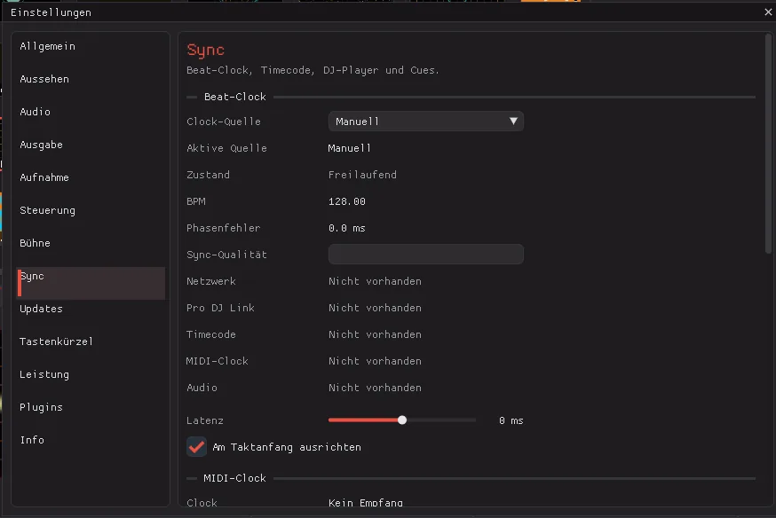
#Timecode
Timecode kann als LTC von einem eigenen Audioeingang kommen, mit 24, 25, 29,97 Drop Frame oder 30 Bildern pro Sekunde, oder als MTC über MIDI. Nimm für LTC einen Line-Eingang, der nur das Timecode-Signal trägt. Laufen LTC und MTC beide, wird LTC benutzt. Timecode steuert die Clock-Position, zwei Modulationsquellen (Timecode-Sekunde und -Minute) und die Cue-Liste.
#MIDI-Clock
MIDI-Clock, Start, Stopp und Song-Position werden verfolgt. Das MIDI-Gerät wählst du auf der Seite Steuerung, und die Seite Sync zeigt, ob eine Clock ankommt, ob der Transport läuft und die Position.
#Pro DJ Link
Hak Auf Pro-DJ-Link-Beats hören an, um den Beat-Paketen von DJ-Playern zu folgen, die Pro DJ Link nutzen, in deinem lokalen Netzwerk. NyrexVJ öffnet dazu einen UDP-Listener auf Port 50001. Es meldet sich nie als Player an und sendet nichts, es gibt also keinen Wiedergabe-Zustand und kein Master-Flag, nur die Beats. Wähl, welchem Player gefolgt wird.
#Netzwerk-Sync: mehrere PCs
Zwei oder mehr PCs mit NyrexVJ können einem Master folgen: dem Beat, dem Tempo, Wiedergabe und Pause, dem Timecode, den Pegeln, Farben, Effekten, Makros und dem Blackout, dem Deck und dem Clip, der auf jeder Ebene läuft. Nutze es für einen zweiten Ausgang, für einen zweiten Rechner, der eine schwere Ebene trägt, oder für ein Backup, das warm bleiben soll. Es ist standardmäßig aus. Öffne Einstellungen, Sync und such den Block Netzwerk-Sync.
- Am Master-PC wählst du die Rolle Master. Hak Andere PCs im Netzwerk zulassen an, wenn die Follower andere Rechner sind; für zwei Programme auf einem PC lässt du es aus. Drück Schlüssel kopieren.
- Auf jedem Follower-PC wählst du die Rolle Follower, tippst die IPv4-Adresse des Masters ein (zum Beispiel
192.168.1.20, oder127.0.0.1für zwei Programme auf einem PC) und denselben Port wie am Master (am Anfang 9030), fügst den Schlüssel ein und drückst Diesen Schlüssel benutzen. - Vergleiche den Prüfcode des Schlüssels auf beiden Seiten. Er ist ein kurzer Code aus dem Schlüssel, kann ohne Gefahr vorgelesen werden und muss auf jedem PC gleich sein.
- Erlaube den UDP-Port in der Firewall des Master-PCs.
Der Status des Followers geht von Verbinde über Show-Zustand wird geholt zu Synchron. Die Seite zeigt Versatz, Hin und zurück und Jitter der Uhr, das Tempo und wie viele Regler, Clips und Deck-Wechsel angewendet wurden. Drei Haken bestimmen, was ein Follower übernimmt: Reglern folgen, Decks und Clips folgen und Takt, Tempo und Timecode folgen. Solange ein Follower den Reglern folgt, pausieren seine eigene Timeline und seine Cue-Liste, weil sie sonst gegen den Master arbeiten würden.
Bricht die Verbindung ab, meldet der Follower Master verloren, letzter Zustand wird gehalten: Er behält die letzten Werte, das Tempo läuft mit dem letzten Wert weiter, seine Timeline und seine Cues bleiben pausiert, und er verbindet sich von selbst neu. Danach wird nur angewendet, was sich auf dem Master inzwischen geändert hat; was du am Follower geändert hast und was sich am Master nicht geändert hat, bleibt, wie du es gelassen hast. Sind die beiden Programme verschiedene Versionen und passen ihre Regler nicht zusammen, zeigt der Follower Nur Takt (andere Version) und folgt allein dem Beat.
#Hot-Standby: ein Reserve-PC, der übernimmt
Hot-Standby benutzt zwei PCs für eine Show. Der Primär-PC fährt die Show, der Standby läuft mit demselben Programm, folgt ihm über den Netzwerk-Sync und hält sein Bild schwarz. Fällt der Primär-PC aus, kann der Standby zum Leader werden: Er gibt sein Bild frei, öffnet den Netzwerk-Sync als Master und fordert den alten Primär-PC zum Zurücktreten auf, wenn dieser zurückkommt. Es ist standardmäßig aus und braucht den Netzwerk-Sync aus dem Abschnitt davor. Öffne Ausgabe, Hot-Standby, um alles in einem Fenster zu sehen.
- Richte zuerst den Netzwerk-Sync ein: ein PC als Master (der Primär-PC), der andere als Follower (der Standby), derselbe Schlüssel und dieselben Mediendateien auf beiden.
- Schalte auf beiden PCs Hot-Standby verwenden ein. Öffne auf beiden PCs das Ausgabefenster, denn ein Ausgang, der nicht offen ist, gilt als nicht bereit.
- Sieh dir auf dem Standby die Tabelle Bereitschaft dieses PCs an. Sie prüft die Verbindung, die Programmversion, die Uhr, das Alter des Show-Zustands, die Clips der Show (nach Namen und als Dateien auf diesem PC), ob beide PCs dieselbe Show haben, die Ausgänge, ob jeder laufende Clip wirklich funktioniert, ob der Primär-PC einen Fehler meldet und das Alter der letzten Sitzungs-Sicherung. Bereit heißt, jede Prüfung ist bestanden, Prüfen ist ein Hinweis und Nicht bereit heißt, eine Prüfung ist durchgefallen.
- Übernimm von Hand mit Übernehmen... und bestätige im folgenden Fenster. Die Bestätigung braucht mit Absicht einen Moment. Antwortet der Primär-PC noch, sagt das Fenster es, denn dann können beide PCs ein Bild senden, bis der alte Primär-PC zurückgetreten ist.
Der Standby übernimmt nur dann von selbst, wenn du Automatisch übernehmen, wenn der Primär-PC verloren geht einschaltest und alles Folgende stimmt: Der Standby war zehn Sekunden vor dem Verlust bereit, der Primär-PC hat die eingestellte Zeit lang nicht geantwortet (3 bis 60 Sekunden, am Anfang 5), der Primär-PC wurde nicht absichtlich geschlossen, auf dem Standby ist nichts kaputt (kein Clip, der fehlschlägt, ein offener Ausgang) und er hat nicht schon einmal übernommen. Eine Übernahme von selbst passiert einmal und du schaltest sie mit Erneut scharf schalten wieder scharf. Nach einem sauberen Schließen des Primär-PCs gibt es keine automatische Übernahme, du kannst aber trotzdem von Hand übernehmen.
Übernimmt ein Standby, zählt er die Leader-Epoche um eins hoch. Kommt der alte Primär-PC zurück, hört er die höhere Epoche vom Leader, tritt zurück und folgt dem neuen Leader als neuer Standby mit schwarz gehaltenem Bild. Solange das Netzwerk zwischen den beiden PCs unterbrochen ist, können beide PCs glauben, sie seien der Primär-PC, weil keiner dem anderen etwas sagen kann. Deshalb muss der Videoumschalter entscheiden, welches Bild das Publikum sieht.
Der Block Letzte Übernahme (gemessen, nicht versprochen) zeigt die Zahlen der letzten Übernahme auf diesem PC: nach welcher Zeit der Verlust erkannt wurde, wie alt der letzte Zustand war, wie lange der Standby vorher bereit war und wie lange es bis zum Betrieb als Leader dauerte. Das sind Messungen aus deinem eigenen Netzwerk und deinen PCs und kein Versprechen. Ereignisse listet auf, was passiert ist, das Neueste zuerst.
#Die Cue-Liste
Die Cue-Liste löst zu einer Zeit des Timecodes ein beliebiges Steuerziel aus: einen Clip, eine Spalte, ein Deck oder einen Wert. Cue hinzufügen legt einen Cue beim aktuellen Timecode an, oder hinter dem letzten, wenn es keinen Timecode gibt. Jeder Cue hat eine Zeit, eine Aktion und bei Werten einen Wert. Test löst ihn sofort aus. Cues ausführen schaltet die Liste ein, und jeder Cue löst einmal aus, wenn der Timecode seine Zeit passiert. Nach großen Sprüngen lösen Cues nicht aus, ein Springen durch den Timecode löst also nicht alles dazwischen aus.
27. Die Show-Zeitleiste
#Wofür sie da ist
Die Show-Zeitleiste ist ein optionales Fenster, das Regler und Schalter entlang einer Zeitachse automatisiert. Du blendest einen Layer oder den Master-Pegel über einen Song aus, ohne einen Regler anzufassen, oder du fährst eine vorbereitete Show gegen einen Timecode. Sie zeigt die Cue-Liste aus Einstellungen, Sync auf demselben Lineal. Sie ist standardmäßig aus.
#Einschalten
Das Menü Zeitleiste hat Zeitleiste ausführen, was die Zeitleiste einschaltet, und Fenster der Show-Zeitleiste anzeigen, was sie öffnet. Solange sie nicht an ist, wird nichts geschrieben und die Zeitleiste löst keine Cues aus, du kannst aber das Fenster öffnen und Spuren vorbereiten. Das Menü hat außerdem Abspielen oder Pause, Stopp und Handeingriffe freigeben.
#Spuren und Keyframes
Füge mit Spur hinzufügen eine Spur für einen beliebigen Regler oder Schalter hinzu. Doppelklick auf eine Spur setzt einen Keyframe, zieh ihn, um ihn in Zeit und Wert zu verschieben, und klick mit rechts darauf, um Halten, Linear oder Weich zu wählen. Ein quadratischer Griff ist ein Halten, ein Kreis ist weich und eine Raute ist linear. Umschalt beim Ziehen behält den Wert, und Strg behält die Zeit. Das Häkchen an einer Spur schaltet sie stumm, und das X entfernt sie.
Clips, Spalten und Decks sind Trigger und gehören auf die Cue-Spur, nicht auf eine Spur mit Kurve. Die Regler von Shader-Clips lassen sich noch nicht automatisieren.

#Position, Schleife und Handeingriffe
Die Position folgt einem Timecode, wenn es einen gibt, und läuft sonst mit den Knöpfen Abspielen, Pause und Stopp des Fensters. Klick oder zieh auf dem Lineal, um den Abspielkopf zu bewegen, und Umschalt und Ziehen auf dem Lineal markiert eine Schleife. Bewegst du einen gesteuerten Regler von Hand, lässt die Zeitleiste ihn los, bis zum nächsten Keyframe-Abschnitt oder bis du ihn freigibst. Handeingriffe freigeben gibt alle Regler an die Zeitleiste zurück.
Strg und das Mausrad zoomen um den Mauszeiger, Umschalt und das Rad scrollen. Einpassen zoomt so, dass jeder Keyframe und jeder Cue sichtbar ist. Rückgängig und Wiederherstellen gelten für die Zeitleiste, solange sie den Fokus hat.
#Speichern
Spuren werden in timeline.json im Datenordner gespeichert, getrennt von Presets und von cues.json. Einstellungen des Fensters, etwa was passiert, wenn der Timecode verloren geht, liegen in seinem Einstellungen-Popup. Einzelheiten, Grenzen und was nicht getestet wurde stehen in docs/TIMELINE.md des Projekts.
28. Bühne: DMX, VRSL und VRChat
#Was sie macht
Einstellungen, Bühne macht aus jedem Regler Licht-Daten. Drei Teile arbeiten unabhängig voneinander. Art-Net sendet DMX-Kanäle über das Netzwerk, zum Beispiel an HNode, QLC+ oder ein Lichtpult. Der DMX-Streifen zeichnet dieselben Kanäle als Reihe grauer Blöcke ins Ausgabevideo, so wie VRSL DMX in einem Videostream liest. Die VRChat-Parameter senden Werte über OSC an deinen Avatar.

#Kanäle
Jede Kanal-Zeile hat einen Namen, ein Universum von 1 bis 4, einen Kanal von 1 bis 512 und eine Quelle. Die Quelle ist Fest, mit einem Wert, den du einstellst, oder eine Modulationsquelle: Bass, Mitten, Höhen, Pegel, Kick, ein LFO, ein Makro, Beat oder Bar. Zwei Zahlen legen den Wert bei Quelle 0 und bei Quelle 1 fest, und Invertieren kehrt ihn um. 16 Bit nutzt den gewählten Kanal und den nächsten. Du kannst bis zu 128 Kanäle anlegen. Ein Makro bewegt ein Licht genau wie einen Effekt.
#Art-Net
Art-Net senden schaltet den Ausgang ein. Stell die Adresse des Knotens, den Port, das Net und das Erste Universum ein. Universum 1 von NyrexVJ wird als erstes Art-Net-Universum gesendet, die nächsten folgen. Pakete pro Sekunde legt die Rate fest. NyrexVJ sendet nur und antwortet nicht auf Abfragen anderer Geräte.
#Der Streifen im Video
Streifen ins Video zeichnen legt einen Streifen aus 120 mal 13 Blöcken an den oberen oder unteren Rand des Ausgabebildes. Jeder Block zeigt einen Kanal als Grau, von Schwarz für 0 bis Weiß für 255. Mit Kanalanordnung wählst du, wie die Kanäle angeordnet werden. Bei 1920 x 1080 hat jeder Block genau 16 x 16 Pixel. Der Streifen überdeckt das Bild darunter, halte diesen Rand in deinen Visuals also frei.
#VRChat-Parameter
An VRChat senden schickt Werte über OSC an VRChat. Füge einen Parameter hinzu, tipp seinen Namen so ein, wie er im Avatar heißt, und wähl die Quelle. Updates pro Sekunde legt die Rate fest.
#Testbilder
Die Testmuster überschreiben die Kanäle mit einem Signal auf Art-Net und im Streifen, bis du Aus wählst. Nutze sie, um die Verkabelung und die Welt zu prüfen, bevor du eine Show baust.
29. Plugins
#Was ein Plugin ist
Ein Plugin ist eine Bibliothek mit einer kleinen C-Schnittstelle, die Modulationsquellen und Bildquellen aus deinem eigenen Code hinzufügt. Eine Modulationsquelle ist eine Zahl von 0 bis 1 etwa 60 Mal pro Sekunde. Sie erscheint als Plugin 1 bis Plugin 8 neben den Audio-Bändern, du kannst sie also überall nutzen, wo ein Band erlaubt ist. Eine Bildquelle liefert etwa 30 Mal pro Sekunde ein Bild mit 1280 x 720 und erscheint als die Clips Plugin Source 1 bis Plugin Source 4.
#Plugins aktivieren
Plugins sind aus, bis du sie anhakst. Einstellungen, Plugins listet die Plugin-Ordner auf, die im Ordner plugins des Datenordners gefunden werden. Ein Ordner braucht eine Datei plugin.json. Hak Aktivieren für ein Plugin an und wähl dann seine Quelle für Plugin 1 bis Plugin 8 oder für einen der vier Bild-Slots. Jede Quelle hat bis zu vier Parameter. Die Startoption --no-plugins schaltet alle Plugins für einen Lauf ab. Ein Plugin kann auch in einem Community-Paket kommen, das es hierher kopiert und ausgeschaltet lässt, siehe Community-Pakete.
#Sicherheit
Plugin-Code läuft nie im Render-Thread. Jeder Aufruf hat ein Zeitbudget. Ein Plugin, das zu langsam ist, hängt oder fehlschlägt, wird für die Sitzung abgeschaltet, ohne das Bild anzuhalten, und die Liste zeigt, warum. Ein Plugin, das lief, als das Programm abstürzte, kommt in den abgesicherten Modus und bleibt aus, bis du es wieder aktivierst. Plugin-Bänder sind im Bühnen-Ausgang nicht verfügbar.
#Ein Plugin schreiben
Der C-Header, ein Beispiel-Plugin und die vollständige Referenz stehen in docs/PLUGINS.md des Projekts. Die Schnittstelle bleibt für jede 1.x-Version stabil.
30. Einstellungen im Überblick
#Einstellungen öffnen
Öffne die Einstellungen über das Menü Einstellungen oder mit Strg+,. Das Fenster hat links eine Liste von Seiten.
| Seite | Was du findest |
|---|---|
| Allgemein | Sprache, letzte Sitzung wiederherstellen, Ausgabefenster beim Start öffnen, Decks |
| Aussehen | Farbthema, Oberflächengröße und Bildschirmskalierung, Kontrast, Tastaturbedienung, Statusleiste, Fensteranordnung zurücksetzen und deine Arbeitsbereiche (auch exportieren und importieren) |
| Audio | Audioquelle, Verstärkung, Glättung, Beat-Schwelle, BPM mit Audio synchronisieren |
| Ausgabe | Qualität und Auflösung, Spout, NDI, bis zu vier Ausgabefenster mit Slices, Mapping, Überblendung, Venue-Setups und Frame-Lock |
| Aufnahme | Format, Größe, Bildrate, Qualität, Ton, Ordner und die Aufnahme-Schaltflächen |
| Steuerung | MIDI, OSC-Ein- und Ausgang, die Web-Oberfläche und ihr Token |
| Bühne | Art-Net, der DMX-Streifen, VRChat-Parameter, Kanäle und Testbilder |
| Sync | Clock-Quelle, Timecode, MIDI-Clock, Pro DJ Link, die Cue-Liste |
| Updates | Update-Kanal, automatische Prüfungen und Downloads, der Update-Status |
| Tastenkürzel | Deine Tastenkürzel: ändern, leeren oder zurücksetzen |
| Leistung | Bildratenbegrenzung, Bildzeit-Budget, Renderqualität, Text und Partikel, gemessene Bildzeiten, Speicher, Video und FFmpeg, DXV-Umwandlung |
| Plugins | Installierte Plugins und ihre Quellen |
| Info | Version, Links, der Datenordner |

#Aussehen
Das Farbthema ändert den Akzent der ganzen Oberfläche und sonst nichts. Es gibt elf Themen: Arena (der Standard, ein dunkles Türkisgrün), Studio, Orange, Blau, Rot, Grün, Lila, Pink, Cyan, Gold und Mono. Jedes davon hat das Aussehen von Resolume Arena: neutrale Grautöne ohne Farbstich, flache Ecken, graue Reiterleisten mit dunklerem gewähltem Reiter, flache Balken als Regler mit dem Namen rechtsbündig, dem Wert, zwei kleinen Feldern für Minus und Plus und einer dünnen Marke im Akzent, dunkle Bänder mit einem kleinen Dreieck über jeder Gruppe von Reglern, eine helle Tönung der gewählten Farbe mit dunklem Text für den gewählten Layer, das gewählte Deck und die laufende Spalte und die Sans-Serif-Schrift des Systems statt der eingebauten Pixelschrift. Eine Einrichtung, die vor 0.60.0 Studio benutzt hat, wird einmal auf Arena umgestellt. Hoher Kontrast behält seine eigenen hellen Umrandungen. Die Oberflächengröße skaliert alle Fenster und Texte, und Zurücksetzen stellt sie wieder her. Dieselbe Seite hat die Bildschirmskalierung, den hohen Kontrast, die Tastaturbedienung, das Zurücksetzen der Fensteranordnung und die Arbeitsbereiche; siehe Oberfläche, Arbeitsbereiche und Barrierefreiheit.
31. Oberfläche, Arbeitsbereiche und Barrierefreiheit
Fenster, die du für eine einzelne Aufgabe öffnest (Einstellungen, Creator, das Handbuch, der Shader-Editor, der Node-Editor, die Zeitleiste und ähnliche), haben rechts in der Titelleiste einen Schließen-Knopf, ein kleines X. Klick darauf oder drücke Esc, solange ein solches Fenster vorn liegt und kein Feld bearbeitet wird, dann schließt sich das Fenster. Die Fenster mit einem Menüeintrag mit Häkchen (Video-Routing, Hot-Standby, das Zeitleistenfenster und der Node-Effekt-Editor) schließen sich auch, wenn du diesen Eintrag noch einmal wählst; die anderen öffnest du wieder über das Menü, mit dem du sie geöffnet hast.
#Das Menü Ansicht
Das Menü Ansicht steht zwischen Bearbeiten und Ausgabe. Es hat alles aus diesem Kapitel, das du in einer Sekunde erreichen willst:
| Eintrag | Was er tut |
|---|---|
| Arbeitsbereiche | Listet deine gespeicherten Arbeitsbereiche, speichert die aktuelle Anordnung unter einem Namen und öffnet den Ort, an dem du sie verwaltest |
| Fensteranordnung zurücksetzen | Stellt die sieben Hauptfenster wieder in der Standardanordnung auf |
| Größere Oberfläche, Kleinere Oberfläche, Normale Oberflächengröße | Ändern die Größe der ganzen Oberfläche in Schritten von zehn Prozentpunkten (Strg+=, Strg+-, Strg+0) |
| Hoher Kontrast | Schaltet den Look mit hohem Kontrast an oder aus |
| Tastaturbedienung | Lässt dich mit der Tastatur zwischen den Bedienelementen wechseln |
| Statusleiste zeigen | Zeigt oder versteckt die Leiste unten |
#Arbeitsbereiche
Ein Arbeitsbereich merkt sich, wo jedes Fenster sitzt und wie groß es ist: welche Fenster nebeneinander angedockt oder als Tabs gestapelt sind und Position und Größe der schwebenden Fenster. Er enthält keine Clips, Decks, Presets oder Einstellungen. Das Laden eines Arbeitsbereichs ändert die Anordnung und sonst nichts.
Zum Speichern wählst du Ansicht, Arbeitsbereiche, Aktuelle Anordnung speichern unter..., tippst einen Namen und drückst Enter. Du kannst es auch unter Einstellungen, Aussehen im Block Arbeitsbereiche tun, der außerdem jeden Arbeitsbereich mit seiner Bildschirmgröße, einer Laden-Schaltfläche, einer Exportieren-Schaltfläche und einer Löschen-Schaltfläche zeigt. Löschen fragt noch einmal nach (Wirklich löschen?), bevor die Datei entfernt wird.
- Ein Name wird auf 40 Byte gekürzt. Zeichen, die ein Dateiname nicht haben kann (
/ \ : * ? " < > |), werden zu Leerzeichen, und mehrere Leerzeichen werden eins. Ein Name, der danach leer ist oder den Windows reserviert (CON,PRN,AUX,NUL,COM1bisCOM9,LPT1bisLPT9), wird mit einer Meldung abgelehnt. Du kannst bis zu 32 Arbeitsbereiche behalten. - Speichern unter einem vorhandenen Namen ersetzt diesen Arbeitsbereich. Groß- und Kleinschreibung zählen als derselbe Name.
- Die Dateien sind einfacher Text, eine je Arbeitsbereich, im Ordner
workspacesdes Datenordners, zum Beispielworkspaces/Projektor-Abend.ini. Du kannst eine auf einen anderen PC kopieren. Die ersten Zeilen sagen, von welchem Programm und mit welcher Fenstergröße sie gespeichert wurde. - Eine Datei, die beschädigt oder zu groß ist oder von einer neueren Version von NyrexVJ stammt, steht als Beschädigt mit dem Grund in der Liste und lässt sich nicht laden. Das Programm löscht oder ändert sie nie.
- Angedockte Fenster behalten ihre Proportionen, wenn du einen Arbeitsbereich in ein Fenster anderer Größe lädst. Schwebende Fenster behalten die Position, mit der sie gespeichert wurden. Liegt eines außer Reichweite, holt Fensteranordnung zurücksetzen die Hauptfenster zurück.
#Einen Arbeitsbereich einem Freund geben
Exportieren macht aus einem gespeicherten Arbeitsbereich eine einzelne Datei, die auf .nyxlayout endet, zum Beispiel Projektor-Abend.nyxlayout. Sie wird in den Ordner layouts_out des Datenordners geschrieben, und der Ordner öffnet sich, damit du die Datei weiterschicken kannst. Gibst du vorher im Feld Exportordner (optional) einen anderen Ordner an, landet die Datei dort, und Exportordner öffnen öffnet diesen Ordner. Willst du die Anordnung teilen, die du gerade hast, speichere sie vorher als Arbeitsbereich.
Um eine erhaltene Datei zu benutzen, ziehst du sie auf das NyrexVJ-Fenster oder gibst ihren Pfad im Feld Pfad einer .nyxlayout-Datei unter Einstellungen, Aussehen, Arbeitsbereiche ein und drückst Layout importieren. Die Anordnung kommt in deine Liste; du lädst sie dort oder unter Ansicht, Arbeitsbereiche. Auf dem Bildschirm ändert sich erst etwas, wenn du sie lädst, deine eigene Anordnung bleibt also sicher.
- Ein importiertes Layout ersetzt nie eines von dir. Ist der Name vergeben, wird eine Zahl angehängt (
Projektor-Abend 2). Ein leerer oder reservierter Dateiname wird zuImported layout. - Die Datei wird wie ein gespeicherter Arbeitsbereich geprüft, bevor sie hinzukommt. Eine Datei, die kein Layout ist, beschädigt ist, größer als 256 KB ist oder von einer neueren NyrexVJ-Version stammt, wird mit einer Meldung abgelehnt, und nichts wird hinzugefügt. Du kannst bis zu 32 Arbeitsbereiche behalten; an dieser Grenze bittet dich ein Import, zuerst einen zu löschen.
- Ein Layout enthält nur die Anordnung und die Fenstergröße, bei der es gespeichert wurde, keine Clips, keine Pfade und keine Einstellungen, daher kannst du es bedenkenlos schicken. Hat der Bildschirm deines Freundes eine andere Größe, behalten angedockte Fenster ihre Proportionen.
#Oberflächengröße und Bildschirmskalierung
Einstellungen, Aussehen, Skalierung hat zwei Bedienelemente.
- Oberflächengröße ist ein Regler von 0,70 bis 2,50 (70 bis 250 Prozent). Er skaliert den Text, den Abstand darum, die abgerundeten Ecken, die Scrollbalken und die Fenster, die in fester Größe aufgehen. Ein Fenster geht nie größer auf als das Hauptfenster. Zurücksetzen stellt 1,00 wieder her. Das Menü Ansicht und
Strg+=,Strg+-undStrg+0tun dasselbe in Schritten. - Bildschirmskalierung übernehmen ist standardmäßig aus. Wenn es an ist, folgt NyrexVJ zusätzlich der Skalierung, die dein Betriebssystem für den Bildschirm des Fensters einstellt (125 Prozent sind 1,25), zusätzlich zum Regler. Die aktuelle Bildschirmskalierung steht neben dem Kästchen.
Beide Einstellungen werden gespeichert. Es ändert sich nichts, bevor du sie benutzt.
#Hoher Kontrast
Hoher Kontrast ist standardmäßig aus. Einstellungen, Aussehen, Kontrast (oder Ansicht, Hoher Kontrast) schaltet auf einen schwarzen Hintergrund mit weißem Text, kräftigere Ränder und einen gelben Fokusring um. Deine Themenfarbe bleibt als Akzent erhalten, aufgehellt, damit sie lesbar bleibt.
Die Farben wurden mit der Kontrastformel der WCAG berechnet. Im Look mit hohem Kontrast ist der normale Text auf Fenstern, Feldern, Schaltflächen und Menüs mindestens 7 zu 1 gegen die Farbe dahinter (4,5 zu 1 bei überfahrenen und gedrückten Einträgen), und Ränder, Fokusring und Häkchen sind mindestens 3 zu 1. Im Standard-Look liegt der Text bei etwa 11,7 zu 1 und der blassere Text bei etwa 5,7 zu 1; der blasse Text ist etwas heller als in früheren Versionen, wo er bei etwa 4,4 zu 1 lag und damit unter den 4,5 der WCAG. Die Prüfung läuft für alle zehn Themen. Es ist eine Rechnung mit Farbwerten: Sie sagt nichts darüber, wie ein Bildschirm, ein Projektor oder ein Raum das Gesehene verändert, und nichts über Farbfehlsichtigkeit.
#Tastaturbedienung
Die Tastaturbedienung ist standardmäßig aus. Einstellungen, Aussehen, Tastatur (oder Ansicht, Tastaturbedienung) schaltet sie ein.
TabundUmschalt+Tabgehen zum nächsten und vorherigen Bedienelement, die Pfeiltasten wechseln zwischen Nachbarn.EnteroderLeertastedrückt eine Schaltfläche oder schaltet ein Kästchen um.- Das Bedienelement mit dem Tastaturfokus bekommt einen sichtbaren Ring. Der Ring erscheint, wenn du die Tastatur benutzt, und verschwindet, wenn du mit der Maus klickst.
Escverlässt das Bedienelement.- Solange ein Bedienelement den Fokus hat, drückt die
Leertastees. Ohne fokussiertes Bedienelement tippt dieLeertastewie bisher das Tempo.
Die Dicke des Rings lässt sich nicht ändern; seine Farbe schon (es ist die Akzentfarbe, bei hohem Kontrast gelb).
#Eigene Tastenkürzel
Einstellungen, Tastenkürzel listet dreizehn Aktionen mit ihren Tasten. Klicke auf die Taste einer Aktion, drücke die neue Kombination (zum Beispiel Strg+K) und sie ist gespeichert. Esc bricht ab. Leeren nimmt einer Aktion die Taste weg, Standard stellt die ursprüngliche Taste wieder her, Alle Tastenkürzel zurücksetzen stellt alles wieder her.
| Aktion | Standard |
|---|---|
| Tap-Tempo | Leertaste |
| Blackout | B |
| Ausgabe im Vollbild | F11 |
| Rückgängig, Wiederherstellen | Strg+Z, Strg+Y |
| Einstellungen öffnen | Strg+, |
| Aufnahme starten oder beenden | Strg+Umschalt+R |
| Handbuch öffnen | F1 |
| Nächstes Deck, Vorheriges Deck | Bild ab, Bild auf |
| Größere Oberfläche, Kleinere Oberfläche, Normale Oberflächengröße | Strg+=, Strg+-, Strg+0 |
- Eine Kombination, die schon eine andere Aktion benutzt, wird abgelehnt, und die Meldung nennt diese Aktion. Es wird nichts stillschweigend weggenommen.
- Nicht vergeben lassen sich die Zifferntasten
1bis8(sie starten Spalten und wechseln mitStrgdie Decks),Strg+Umschalt+Z(immer Wiederherstellen) undAlt+F4. Diese Tasten funktionieren weiter, wie unter Tastenkürzel und Maus steht. - Die Zusatztasten müssen genau passen.
Blöst nicht aus, solangeStrggehalten wird, undStrg+Klöst nicht aus, wenn zusätzlichUmschaltgedrückt ist. Vor Version 0.51.0 lösten einige Tasten, zum BeispielBundLeertaste, auch mit gehaltenerStrg-Taste aus. - Die Tastenkürzel stehen in
shortcuts.jsonim Datenordner. Ein Kürzel tut nichts, solange du in ein Textfeld tippst oder das Programm auf eine neue Taste wartet. - Die Editoren (Clip Creator, Node-Editor, Zeitleiste, Shader-Editor) behalten ihre eigenen Tasten, etwa
Strg+Z,EntfundLeertaste. Sie gehören nicht zur Tabelle und lassen sich nicht ändern.
#Die Node-Fläche zoomen
Die Fläche des Node-Effekt-Editors lässt sich zoomen. Halte Strg und drehe das Mausrad: Die Ansicht zoomt zur Maus hin, die Stelle unter der Maus bleibt also, wo sie ist. Das Rad allein verschiebt die Ansicht weiter. Die Tasten = und - zoomen hinein und heraus, und 0 geht zurück auf 100 Prozent, solange die Fläche den Fokus hat. Das Seitenfeld hat einen Block Zoom mit denselben drei Schaltflächen und dem aktuellen Wert. Der Zoom geht von 40 bis 250 Prozent, wird nicht mit dem Effekt gespeichert und ist von der Oberflächengröße getrennt. Mit dem Zoom-Node hat er nichts zu tun; das ist ein Effekt, der das Bild zoomt.
#Wenn Anordnung oder eine Einstellungsdatei beschädigt ist
Ein Stromausfall oder eine Änderung von Hand kann eine Datei unlesbar machen. Beim Start prüft NyrexVJ drei Dateien im Datenordner und lässt nie zu, dass eine davon den Start blockiert.
| Datei | Was bei einer Beschädigung geschieht |
|---|---|
layout_v8.ini (die Fensteranordnung) | Sie wird in layout_v8.ini.bad umbenannt und die Standardanordnung wird aufgebaut. Eine Anordnung mit Fensterpositionen weit außerhalb jedes Bildschirms gilt als beschädigt. |
settings.json | Sie wird in settings.json.bad umbenannt und die Standardwerte gelten. Ein einzelner falscher Wert, etwa eine Oberflächengröße von 99, macht die Datei nicht beschädigt; dieser Wert wird in seinen Bereich geholt. |
shortcuts.json | Sie wird in shortcuts.json.bad umbenannt und die Standardkürzel gelten. Eine Datei, die eine neuere Version von NyrexVJ geschrieben hat, bleibt unberührt, und die Standardkürzel gelten. Änderst du danach ein Kürzel, wird zuerst eine Kopie der neueren Datei als shortcuts.json.bad behalten. |
Eine Meldung sagt dir, was geschehen ist, und bleibt etwa zwölf Sekunden stehen. Dateien im Ordner workspaces werden beim Start nie verschoben oder gelöscht.
Wenn du das Fenster gar nicht mehr bedienen kannst, starte NyrexVJ aus einer Eingabeaufforderung mit einer Option:
NyrexVJ --reset-layoutlegt die Anordnungsdatei beiseite und baut die Standardanordnung. Deine Tastenkürzel und Oberflächeneinstellungen bleiben.NyrexVJ --reset-interfacetut dasselbe, legt außerdem die Kürzeldatei beiseite und setzt Oberflächengröße, Bildschirmskalierung, Kontrast und Tastaturbedienung zurück. Dein Thema und alle anderen Einstellungen bleiben.
#Was davon nicht abgedeckt ist
- Screenreader funktionieren mit NyrexVJ nicht. Die Oberflächenbibliothek zeichnet alles selbst und liefert nicht die Informationen, die ein Screenreader braucht, also gibt es nichts zum Einschalten. Es steht als bekanntes Problem in der Liste.
- Die Größe des Fokusrings lässt sich nicht ändern.
- Ein paar Fenster und Schaltflächen haben noch eine feste Größe in Pixeln und wachsen nicht mit der Oberflächengröße. Sie bleiben benutzbar, wirken aber neben größerem Text klein.
- Touch-Bedienung wurde nicht angesehen.
- Alle bisherigen Prüfungen liefen in einem Fenster auf einem virtuellen Bildschirm. Ein echtes Display mit 125, 150 oder 200 Prozent, ein 4K-Bildschirm, ein kleiner Laptop-Bildschirm und das Arbeiten nur mit der Tastatur wurden auf echter Ausrüstung nicht ausprobiert. Der Testplan führt sie als manuelle Tests.
32. Tastenkürzel und Maus
#Tastatur
Das sind die Tasten, wie sie ausgeliefert werden. Die meisten lassen sich unter Einstellungen, Tastenkürzel ändern (siehe Oberfläche, Arbeitsbereiche und Barrierefreiheit). Sie funktionieren im Hauptfenster überall, außer wenn du gerade in ein Textfeld tippst.
| Taste | Aktion |
|---|---|
1 bis 8 | Eine Spalte starten |
Leertaste | Tap-Tempo |
B | Blackout |
Bild auf und Bild ab | Vorheriges und nächstes benutztes Deck |
Strg+1 bis Strg+8 | Deck 1 bis 8 |
Strg+Umschalt+1 bis Strg+Umschalt+8 | Deck 9 bis 16 |
Strg+Z | Rückgängig |
Strg+Y oder Strg+Umschalt+Z | Wiederherstellen |
Strg+, | Einstellungen öffnen |
Strg+Umschalt+R | Aufnahme starten oder beenden |
Strg+=, Strg+-, Strg+0 | Größere Oberfläche, kleinere Oberfläche, normale Oberflächengröße |
F1 | Dieses Handbuch öffnen oder schließen |
F11 | Vollbild für die Ausgabefenster |
Esc | Vollbild verlassen |
Die Tasten tun nichts, solange du in ein Textfeld tippst. Im Zeitleisten-Fenster spielt die Leertaste ab und pausiert, und Pos1 springt zum Anfang.
#Maus
| Aktion | Ergebnis |
|---|---|
| Zelle anklicken | Diesen Clip auf seinem Layer abspielen |
| Strg+Klick auf eine Zelle | In der Vorschau zeigen, ohne abzuspielen |
| Spaltenkopf anklicken | Die ganze Spalte starten |
| Rechtsklick auf eine Zelle | Einen Clip zuweisen oder leeren, oder Vorschau |
| Rechtsklick auf einen Deck-Knopf | Das Deck umbenennen, kopieren, füllen, leeren oder entfernen |
| Rechtsklick auf einen Regler | Auf den Standardwert zurücksetzen |
| Clip in der Bibliothek anklicken | In die gewählte Zelle legen und abspielen |
| Aus der Bibliothek auf eine Zelle ziehen | Den Clip zuweisen |
| Effekt in der Bibliothek anklicken oder ziehen | Zum gewählten Layer hinzufügen |
| B, S und X an einem Layer | Bypass, Solo und Stopp des Layers |
33. Leistung
#Warum sie wichtig ist
Eine Live-Show braucht eine gleichmäßige Bildrate. NyrexVJ ist leicht, aber viele Layer, schwere Effekte, große Videos und 3D-Modelle summieren sich. Einstellungen, Leistung zeigt, was die Zeit braucht, und die Statusleiste kann die Zeiten zeigen, wenn du Zeiten in der Statusleiste zeigen anhakst.

#Bildrate und Budget
Die Bildratenbegrenzung begrenzt, wie oft das Programm ein Bild zeichnet, mit oder ohne VSync. Eine niedrigere Grenze lässt auf demselben Computer mehr Grafik- und Prozessorzeit für VRChat. Das Bildzeit-Budget ist die Zeit, die ein Bild brauchen darf, abgeleitet aus deiner Ziel-Bildrate. Bilder darüber zählen als zu langsam, und die Seite zeigt, wie viele Bilder im Budget blieben, den Durchschnitt, die langsamsten fünf Prozent, die langsamsten ein Prozent und das schlechteste Bild.
#Renderqualität
Die Layer-Auflösung zeichnet die Layer und ihre Effekte in kleinerer Größe und skaliert sie hoch, wenn sie gemischt werden. Volle Qualität ändert nichts, Ausgewogen zeichnet mit 75 Prozent, Leistung mit 50 Prozent. Automatisch senkt die Auflösung in kleinen Schritten nur, solange ein Bild länger als das Budget braucht, und hebt sie wieder an, wenn Platz ist. Master-Effekte und jeder Ausgang bleiben in voller Auflösung.
#Grafikspeicher und Warnungen
Unter Grafikspeicher und Datenverkehr zeigt die Leistungsseite zwei Arten von Zahlen und hält sie getrennt. Vom Grafiktreiber gemessen ist, was der Treiber über die ganze Karte sagt, für alle Programme zusammen: belegter Speicher, freier Speicher und wie oft der Treiber Videospeicher in den Systemspeicher verschieben musste. Das können nur Treiber mit der Erweiterung GL_NVX_gpu_memory_info oder GL_ATI_meminfo, und Software-Renderer liefern sinnlose Werte, deshalb sagt die Seite auf vielen Computern, dass nichts Brauchbares gemeldet wird. Von NyrexVJ geschätzt ist, was NyrexVJ selbst angelegt hat: Render-Ziele, Vorschaubilder, Bilder, Videos, 3D-Szenen, Effekt-Puffer, Text und Partikel. VRChat oder ein anderes Programm sieht es nicht.
Speicherbudget (0 = aus) ist der meiste Grafikspeicher, den NyrexVJ belegen soll. Am Anfang ist es aus, und solange es 0 ist, ändert sich nichts. Mit einem Budget werden Clips, die nicht laufen und fünf Sekunden nicht benutzt wurden, entladen, wenn die Schätzung darüber liegt: zuerst vorbereitete Videos, dann Bilder, dann 3D-Szenen. Ein Clip, der läuft, wird nie entladen, und ein Clip, den du startest, nachdem er entladen wurde, wird wieder geladen, das kann einen Moment dauern. Reicht das nicht, schaltet NyrexVJ hoch: zuerst hört es auf, die nächsten Clips vorzubereiten, dann entlädt es nach einer Sekunde, und mit angehaktem Zusätzlich die Ebenenauflösung senken zeichnet es die Ebenen mit 75 und dann 50 Prozent. Es geht zurück, wenn wieder Platz ist.
Die Seite zeigt außerdem:
- Upload von Video und Live-Quellen: die Bilddaten, die NyrexVJ an den Treiber übergibt, pro Sekunde, die höchste Sekunde der letzten zehn und die Summe. Bilder und Modelle werden einmal geladen und nicht mitgezählt.
- Die langsamsten ein Prozent und, aus einem 60-Sekunden-Fenster, P95 und P99, späte Bilder (mehr als das 1,5-Fache des Budgets) und ausgefallene Bilder, aus der Zeit zwischen den Bildern geschätzt.
- Warnungen bei langsamen Bildern, ausgefallenen Bildern, Speicher nahe am oder über dem Budget, wenig freiem Speicher auf der Karte, Verschiebungen durch den Treiber und sehr hohem Upload. Sie erscheinen nach zwei Sekunden, verschwinden nach sechs und zeigen sich als farbige Zahl in der Statusleiste. Warngrenzen ändert die drei, die von deiner Show abhängen.
#Text und Partikel
Partikel-Obergrenze pro Ebene ist die größte Zahl an Partikeln, die ein Partikel-Clip gleichzeitig am Leben haben darf, von 64 bis 16.384, am Anfang 2048. Ist die Grenze erreicht, werden neuere Partikel verworfen und das Bild bleibt flüssig. Jedes Partikel kostet 24 Byte Grafikspeicher. Text- und Partikel-Clips in der Bibliothek zeigen blendet sie alle aus der Bibliothek aus. Experimentelle GPU-Partikel lässt Clips, die es verlangen, auf der Grafikkarte laufen, und Grafikspeicher für GPU-Partikel ist das Budget für alle zusammen, 8 bis 512 MB. Siehe Text, Partikel und Effektketten.
#Durchläufe, die nur kopieren
NyrexVJ baut das Bild Layer für Layer auf und kopiert das Ergebnis dann in die Ausgabe. Hat das Master-Bild keinen Effekt, keine Farbänderung und den vollen Pegel, ist diese letzte Kopie ein ganzer zusätzlicher Durchlauf über das Bild, der nichts ändert; dann wird der letzte Layer gleich in die Ausgabe gezeichnet. Dasselbe gilt für jedes der zwei Decks, solange ein Übergang läuft. Mit einem Farblook (LUT) fallen außerdem das zusätzliche Bild, das er früher brauchte, und das Zurückkopieren weg, und der Grafikspeicher dafür wird frei. Das Ergebnis ist dasselbe Bild, Bit für Bit; die Tests vergleichen jedes Pixel mit dem Schalter an und aus.
Der Schalter heißt Durchläufe überspringen, die nur kopieren und steht unter Einstellungen, Leistung, Render-Graph. Zu Beginn ist er an. Die Zeile darunter zählt die übersprungenen Durchläufe und Kopien. Schalte ihn aus, wenn du je einen Unterschied vermutest; sonst ändert sich nichts.
Ein Master-Effekt, eine Farbänderung im Master, ein Pegel unter voll, Blackout und ein Standby, der seine Ausgänge schwarz hält, ändern das Bild wirklich, deshalb bleibt der Durchlauf bei ihnen. Rückkopplungs-Effekte behalten ihre Puffer und Kopien, wie unter Rückkopplungs-Effekte beschrieben. Effekte werden nicht zu einem Shader zusammengefasst, weil es dann nicht mehr genau die Effekte wären, die du gewählt hast.
#Was Zeit kostet
- Ein Layer mit Deckkraft null wird nicht gezeichnet, verborgene Layer kosten also nichts.
- Jeder Effekt ist ein weiterer Durchgang über das Bild. Ersetze einen Stapel Effekte durch einen Node-Effekt, wenn es geht.
- Große Videos kosten Dekodierzeit. HAP-Videos kosten fast nichts am Prozessor, siehe Video- und Bild-Clips.
- Live-Quellen werden drei Sekunden nach der letzten Nutzung geschlossen.
- 3D-Modelle und -Szenen kosten Grafikzeit entsprechend ihrer Dreieckszahl.
Die Seite zeigt auch den Speicher: eine Schätzung des Grafikspeichers, den Videospeicher und den Programmspeicher, und welcher Clip oder Effekt die Zeit braucht. Was der Treiber misst, das Speicherbudget und die Warnungen stehen in Grafikspeicher und Warnungen. Gemessene Zahlen und Grenzen stehen in docs/PERFORMANCE.md des Projekts.
34. Dateien und der Datenordner
#Wo er liegt
NyrexVJ legt alles in seinem Datenordner ab. Unter Windows ist das %APPDATA%\NyrexVJ, unter Linux ~/.config/NyrexVJ, oder $XDG_CONFIG_HOME/NyrexVJ, falls das gesetzt ist. Setze die Umgebungsvariable NYREXVJ_DATA_DIR, um einen anderen Ordner zu nutzen. Datei, Datenordner öffnen und Einstellungen, Info öffnen ihn.
#Was darin liegt
| Eintrag | Was er enthält |
|---|---|
settings.json | Deine Programm-Einstellungen, einschließlich Ausgänge, Bühne und Sync |
controls.json | MIDI-Zuordnungen |
cues.json | Die Cue-Liste |
netsync_key | Der Schlüssel des Netzwerk-Syncs (privat halten, steht in keinem Paket) |
timeline.json | Die Spuren der Show-Zeitleiste |
autosave.json und recovery | Die letzte Sitzung und eine rotierende Reihe von Autosaves |
presets | Deine eigenen Presets |
shows | Der Ort, den das Exportfenster für Show-Pakete vorschlägt |
show_backups | Deine eigenen Dateien, die ein Import eines Show-Pakets ersetzt hat, ein Ordner pro Import |
packages | Ein Eintrag für jedes installierte Community-Paket und eine Kopie seines Lizenztextes |
package_backups | Dateien, die ein Update, ein Ersetzen oder ein Entfernen eines Community-Pakets weggeräumt hat, jedes Mal ein Ordner |
shaders | Deine eigenen Shader-Dateien |
texts | Deine eigenen Text-Clips, siehe Text, Partikel und Effektketten |
particles | Deine eigenen Partikel-Clips |
chains | Deine eigenen Effektketten |
fonts | Deine eigenen Schriften für Text-Clips |
models | Deine eigenen 3D-Modelle |
media | Bilder und Videos |
clips | Mit dem Clip Creator gespeicherte Szenen |
nodes | Node-Effekte |
languages | Deine eigenen Sprachdateien |
plugins | Plugins |
venues | Venue-Setups |
masks | Als Masken genutzte Bilder |
Recordings | Deine Aufnahmen |
nyrexvj.log | Das Log, nützlich für Fehlerberichte |
#Sichern und umziehen
Kopiere den Datenordner an einen sicheren Ort, um alles zu sichern. Zum Umzug auf einen anderen Computer kopierst du ihn dort an dieselbe Stelle. Presets und Sitzungen merken sich Clips über ihren Namen, behalte also die Dateinamen deiner Shader, Modelle und Medien, wenn du sie verschiebst. Um eine Show samt allem, was sie nutzt, umzuziehen, ist ein Show-Paket einfacher als den Ordner zu kopieren, siehe Show-Pakete.
Das Token der Web-Oberfläche liegt in einer eigenen Datei im Ordner. Gib es nicht weiter.
35. Fehlersuche und häufige Fragen
#Das Bild ist schwarz
Prüf zuerst die einfachen Dinge. Ist Blackout an, die Taste B schaltet ihn um? Steht der Master-Pegel auf null? Steht die Layer-Deckkraft auf null oder der Layer auf Bypass? Spielt die Zelle wirklich? Ist das Ausgabefenster schwarz, das Fenster Ausgabe aber nicht, prüf die Ausgabe-Einstellungen, das Testbild und das Display.
#Die Visuals reagieren nicht auf die Musik
Wähl im Fenster Audio-Eingang eine Audioquelle. Die Anzeigen müssen sich bewegen. Tun sie das nicht, sagt das Fenster, dass auf diesem Gerät kein Ton ankommt. Spiel etwas auf dem gewählten Ausgang ab oder wähl eine andere Quelle. Prüf dann, dass ein Layer, der Master oder ein Effekt ein Band mit einer Stärke über null hat. Ohne Quelle folgen die Clips dem BPM-Takt.
#OBS zeigt nichts
Spout funktioniert nur unter Windows. Hak Per Spout an OBS senden an, installiere das obs-spout2-plugin, füge in OBS eine Quelle Spout2 Capture hinzu und wähl den Sender. Ist es schwarz, prüf den Sendernamen. Als Alternative öffnest du das Ausgabefenster und nimmst es auf, oder nutzt NDI.
#Ein Video spielt nicht
Video braucht die FFmpeg-Bibliotheken. Sieh ins Clip-Fenster. Sagt es, dass FFmpeg fehlt, nutz FFmpeg einrichten. Spielt das Video ruckelig, sieh dir den Video-Monitor unter Einstellungen, Leistung an und probier eine HAP-Version der Datei.
#Ein Video sieht flau und grau aus
Die Datei ist wahrscheinlich HDR, und der Video-Monitor unter Einstellungen, Leistung sagt das. Schalte unter Einstellungen, Leistung, Farbe HDR-Videos auf SDR abbilden (Tone Mapping) ein und lass Videofarben auf der Grafikkarte umrechnen an. Sieht es dann immer noch falsch aus, ändere Referenzweiß und Spitzenhelligkeit des Videos, oder wandle die Datei vor der Show in SDR um.
#Ein Shader lässt sich nicht kompilieren
Das Clip-Fenster zeigt die Meldung mit der Zeilennummer deiner Datei. Korrigiere die Datei und speichere sie, NyrexVJ lädt sie neu. Bis dahin läuft die letzte funktionierende Version weiter.
#MIDI oder OSC tut nichts
Wähl bei MIDI das Gerät unter Gerät und prüf, dass der Controller nicht von einem anderen Programm benutzt wird. Prüf unter Linux, dass er in aconnect -l auftaucht. Hak bei OSC OSC-Nachrichten empfangen an, nutz Port 9010 und erlaube das Programm in deiner Firewall, wenn der Sender ein anderer Computer ist. Die Einstellungsseite zeigt die letzte Nachricht, die angekommen ist.
#Das Programm ist abgestürzt
NyrexVJ speichert die Sitzung alle 30 Sekunden. Nach einem Absturz fragt der nächste Start, von welchem Autosave du weitermachen willst, und zeigt einen Absturzbericht. Häng diesen Bericht und das Ende von nyrexvj.log an einen Fehlerbericht auf GitHub.
#Fragen, die oft kommen
Ist es kostenlos? Ja. NyrexVJ ist Open Source unter der MIT-Lizenz.
Braucht es das Internet? Nur um nach Updates zu suchen und, wenn du die Schaltfläche drückst, um FFmpeg herunterzuladen. Alles andere funktioniert offline.
Läuft es unter macOS? Nein. Es gibt Builds für Windows und Linux.
Kann ich es mit VRChat nutzen? Ja, schick das Bild an OBS oder nimm das Ausgabefenster auf, und nutze die VRChat-Parameter der Seite Bühne, wenn du magst. Spout gibt es nur unter Windows.
Warum bleiben die Clip-Namen englisch? Damit sie zu dem passen, wie andere VJ-Programme sie nennen.
36. Die Befehlszeile
#Häufige Optionen
NyrexVJ lässt sich mit Optionen starten. Die meisten sind für Tests und Screenshots, ein paar sind im Alltag nützlich.
| Option | Wirkung |
|---|---|
--preset NAME | Beim Start ein Werks- oder eigenes Preset laden |
--fresh | Die gespeicherte Sitzung ignorieren |
--lang CODE | In dieser Sprache starten: en, de, es, fr, it, pt, nl, ja oder der Code einer Sprachdatei |
--output | Die Ausgabefenster beim Start öffnen |
--venue NAME | Beim Start ein gespeichertes Venue-Setup laden |
--ndi NAME | Den NDI-Sender mit diesem Namen starten |
--osc-port N | Auf OSC an Port N hören, auch wenn es in den Einstellungen aus ist |
--audio-demo | Das Demo-Audiosignal nutzen |
--no-update-check | Die Update-Prüfung überspringen |
--no-plugins | Plugins für diesen Lauf abschalten |
--welcome und --no-welcome | Das Willkommensfenster erzwingen oder überspringen |
--manual | Dieses Handbuch beim Start öffnen, auf Wunsch bei einem Kapitel, zum Beispiel --manual outputs |
--timeline | Das Fenster der Show-Zeitleiste beim Start öffnen |
--show-packages | Das Fenster Show-Paket beim Start öffnen, im Tab Exportieren, oder mit --show-packages 1 im Tab Importieren |
--community-packages | Das Fenster Community-Pakete beim Start öffnen, im Tab Installiert, mit --community-packages 1 im Tab Installieren oder mit 2 im Tab Erstellen |
--pack-build ORDNER DATEI | Ein Community-Paket aus einem Ordner bauen und beenden, mit --pack-overwrite, um eine vorhandene Datei zu ersetzen |
--pack-info DATEI | Zeigen, was ein Community-Paket enthält und ob es sich installieren ließe, und beenden |
--pack-install DATEI | Ein Community-Paket installieren und beenden, mit --pack-accept-plugin, --pack-allow-downgrade, --pack-keep-mine oder --pack-replace, wo sie nötig sind |
--pack-remove KENNUNG | Ein installiertes Community-Paket entfernen und beenden |
--generators | Das Fenster Text und Partikel beim Start öffnen, im Tab Text, oder mit --generators 1 im Tab Partikel |
--chains | Das Fenster Effektketten beim Start für Ebene 1 öffnen, für Ebene 2 bis 4 mit --chains 1 bis --chains 3 und für den Master mit --chains 4; --chain-select NAME wählt eine Kette aus |
--generator-selftest | Text- und Partikel-Clips in der echten Engine prüfen und beenden, mit einer Bilderzahl dahinter für einen Benchmark und --bench-out DATEI.json für das Ergebnis |
--settings IDX | Die Einstellungen auf Seite IDX öffnen, ab 0 gezählt in der Reihenfolge der Seitenliste |
--check-shaders | Jeden Shader kompilieren und beenden |
--shader-editor [DATEI] | Den Shader-Editor beim Start öffnen, mit einer Datei aus dem Ordner shaders, wenn du eine angibst, sonst mit einer Vorlage |
--shader-editor-selftest [BILDER] | Den Shader-Editor in der echten Engine prüfen und beenden, mit einer Bilderzahl danach für einen Benchmark und --bench-out DATEI.json für das Ergebnis |
--shader-editor-uitest | Den Shader-Editor mit echten Tasten- und Mausereignissen bedienen, prüfen, was er enthält, und mit Code 0 oder 1 beenden, mit --bench-out DATEI.json für das Ergebnis |
--reset-layout | Die gespeicherte Fensteranordnung als layout_v8.ini.bad beiseitelegen und die Standardanordnung aufbauen, für ein Fenster, das sich nicht mehr bedienen lässt |
--reset-interface | Wie --reset-layout, legt außerdem die Kürzeldatei beiseite und setzt Oberflächengröße, Bildschirmskalierung, Kontrast und Tastaturbedienung zurück |
--interface-uitest | Die Oberfläche mit echten Tasten- und Mausereignissen bedienen (Arbeitsbereiche, Kürzel, Größen, hoher Kontrast, Tastaturbedienung, Zoom der Node-Fläche), das Ergebnis prüfen und mit Code 0 oder 1 beenden, mit --bench-out DATEI.json für das Ergebnis; mit NYREXVJ_DATA_DIR benutzen |
--routing-selftest [BILDER] | Das Video-Routing in der echten Engine prüfen und beenden, mit einer Bildanzahl dahinter für einen Benchmark und --bench-out DATEI.json für das Ergebnis |
--routing-demo | Ein kleines Beispiel mit Routing-Clips aufbauen und das Fenster Video-Routing öffnen, für Screenshots |
--netsync-selftest | Den Netzwerk-Sync in der echten Engine in beiden Rollen mit einem verlustbehafteten Relais prüfen und mit Code 0 oder 1 beenden, mit --bench-out DATEI.json für das Ergebnis; er ersetzt die Schlüsseldatei für den Lauf und legt sie zurück, nutze also NYREXVJ_DATA_DIR |
--netsync-report DATEI | Beim Beenden einen JSON-Bericht über den Netzwerk-Sync schreiben: Rolle, Zustand, Zähler, Uhr, jeder synchronisierte Regler und eine Beat-Probe pro Bild |
--run-seconds N | Das Programm nach N Sekunden Echtzeit schließen, für Tests |
--failover-selftest | Hot-Standby in der echten Engine mit einem simulierten Primär-PC prüfen (Bereitschaft, ein gehaltener schwarzer Ausgang, die automatische Übernahme, ein Zurücktreten, ein sauberes Schließen, eine Übernahme von Hand und ein Clip, der sich nicht decodieren lässt) und mit Code 0 oder 1 beenden, mit --bench-out DATEI.json für das Ergebnis; er benutzt einen temporären Datenordner |
--failover-report DATEI | Etwa zweimal pro Sekunde und beim Beenden einen JSON-Bericht über Hot-Standby schreiben: Zustand, Bereitschaftsprüfungen, gemessene Zeiten und Ereignisse |
--failover-takeover-at N | N Sekunden nach dem Start eine Übernahme von Hand anfordern und 0,7 Sekunden später bestätigen, für Tests |
#Tests und Messungen
Es gibt Optionen, die Selbsttests und Benchmarks ausführen und dann beenden, zum Beispiel für Shader, Ausgänge, Aufnahme, Live-Quellen, die Web-Oberfläche und den 3D-Player. Sie sind in der README und in docs/TESTING.md des Projekts beschrieben. Optionen, die einen Wert brauchen, nehmen ihn als nächstes Wort.
37. Sprachen
#Eingebaute Sprachen
Englisch ist die Standardsprache. Deutsch, Spanisch, Französisch, Italienisch, Portugiesisch, Niederländisch und Japanisch sind eingebaut. Ändere die Sprache unter Einstellungen, Allgemein, unter Hilfe, Sprache oder im Willkommensfenster. Die Wahl wird gespeichert. Alles außer Deutsch wurde mit maschineller Hilfe übersetzt und ist noch nicht von Muttersprachlern geprüft. Korrekturen sind auf GitHub willkommen.
Dieses Handbuch gibt es auf Englisch und Deutsch. Bei jeder anderen Sprache als Deutsch zeigt das Programm das englische Handbuch.
#Japanisch
Japanisch braucht eine japanische Schrift auf dem Computer, Yu Gothic oder Meiryo unter Windows und Noto Sans CJK unter Linux. NyrexVJ fügt sie seiner eigenen Schrift nur für die fehlenden Zeichen hinzu. Es wird nichts mitgeliefert. Ohne so eine Schrift kann der japanische Text nicht angezeigt werden, und die Einstellungen sagen das.
#Deine eigene Sprache
Eine Sprache ist eine .json-Datei im Ordner languages. Einstellungen, Allgemein, Übersetzungsvorlage exportieren schreibt eine Datei mit jedem Text. Kopiere sie, setz einen Code und einen Namen und übersetze, was du willst. Texte, die du auslässt, bleiben englisch. Drück dann Sprachen neu laden. Die Schrift zeigt bei eigenen Sprachen nur lateinische Buchstaben. Alles ist in docs/LANGUAGES.md des Projekts erklärt.
38. Glossar
#Begriffe
Das sind die Wörter, die dieses Handbuch für Teile des Programms und für Show-Begriffe nutzt, in alphabetischer Reihenfolge.
| Begriff | Bedeutung |
|---|---|
| Blackout | Macht das fertige Bild auf einen Schlag schwarz, Taste B |
| Bypass | Überspringt einen Layer oder Effekt, als wäre er nicht da |
| Clip | Etwas, das ein Bild zeichnet: ein generativer Clip, ein Video, ein Bild, ein Modell, ein Shader oder eine Live-Quelle |
| Cue | Eine Aktion, die zu einer Zeit des Timecodes auslöst |
| Deck | Ein vollständiger Satz aus vier Layern und acht Spalten, es gibt 16 |
| Effekt | Eine Veränderung, die auf das Bild eines Layers oder des Masters angewendet wird |
| Gate | Ein Modus, in dem ein Effekt nur zu sehen ist, solange ein Band laut ist |
| ISF | Interactive Shader Format, ein Shader-Dateiformat mit Beschreibungskopf |
| Kick | Ein kurzer Puls, den die Analyse auf den Bass-Beats findet |
| Komposition | Alles an einer Show: Decks, Layer, Effekte, Farben und Einstellungen |
| Layer | Eine von vier Ebenen des Bildes, höhere Layer liegen über niedrigeren |
| LFO | Ein Niederfrequenz-Oszillator, eine Bewegung, die sich über eine Zahl Beats wiederholt |
| LTC | Linear Timecode, Timecode, der als Audiosignal kommt |
| Makro | Ein Regler, der viele Werte auf einmal steuern kann |
| Master | Das fertige Bild und die Regler, die auf alles davon wirken |
| Mischmodus | Wie sich ein Layer mit den Layern darunter mischt |
| MTC | MIDI-Timecode |
| NDI | Ein Weg, ein Bild über das Netzwerk zu senden |
| Preset | Ein gespeicherter Look mit allen 16 Decks |
| Sitzung | Der Zustand des Programms, wie du ihn verlassen hast, beim nächsten Start wiederhergestellt |
| Slice | Ein Teil eines Ausgangs mit eigenem Bildausschnitt, eigener Verzerrung, Maske und Farbe |
| Spalte | Die acht Zellen mit derselben Nummer über alle Layer, gemeinsam gestartet |
| Spout | Ein Weg, ein Bild zwischen Programmen unter Windows zu teilen |
| Tap-Tempo | Das Tempo einstellen, indem du im Takt der Musik auf eine Taste tippst |
| Venue-Setup | Die gespeicherten Ausgabe- und Mapping-Einstellungen eines Raums |
| VRSL | VR Stage Lighting, das DMX-Daten aus einem Streifen im Video liest |
| Zelle | Ein Platz im Clip-Raster, der einen Clip enthält |
Fehler gefunden oder etwas vergessen? Sag es uns auf GitHub.